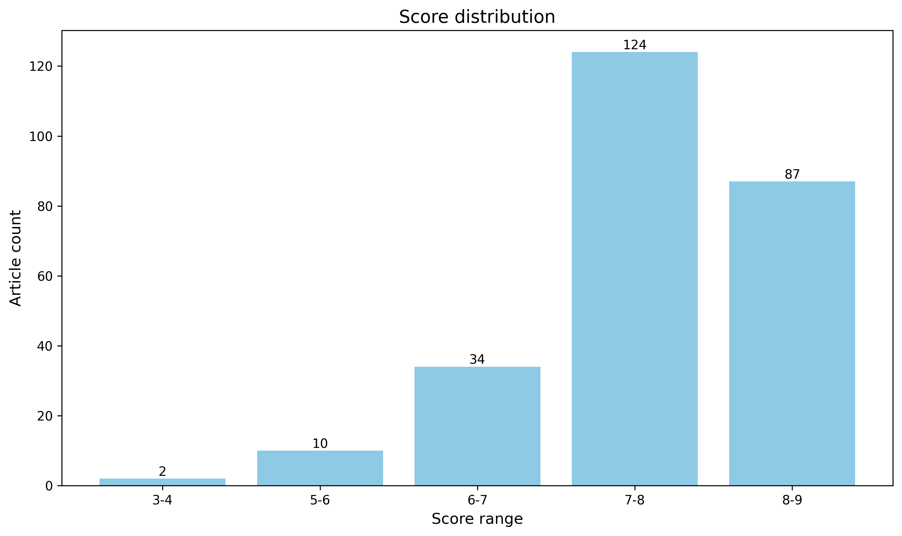

神经科学快讯·第022期 神经科学周报：脑干排尿回路解析、鸟鸣语言统计结构与术中胶质瘤映射 (2026-08-09)
📊 本周概览
- 头条推荐: 0 篇
- 深度解读: 132 篇
- 简要提及: 104 篇
- 跨界启发: 0 篇
- 已过滤: 201 篇
🌏 环球视野

🌍 国家/地区分布 TOP 10
| 排名 | 国家 | 文章数量 |
|---|---|---|
| 1 | United States | 700 |
| 2 | China | 334 |
| 3 | United Kingdom | 174 |
| 4 | Germany | 129 |
| 5 | Canada | 71 |
| 6 | Switzerland | 70 |
| 7 | France | 55 |
| 8 | Japan | 44 |
| 9 | Australia | 41 |
| 10 | Korea | 39 |
总计: 1657 篇文章
🏢 研究机构 TOP 10
| 排名 | 机构 | 文章数量 |
|---|---|---|
| 1 | Chinese Academy of Sciences | 49 |
| 2 | Stanford University | 37 |
| 3 | University of Oxford | 29 |
| 4 | University of Pennsylvania | 28 |
| 5 | Fudan University | 28 |
| 6 | Tsinghua University | 25 |
| 7 | University of Cambridge | 25 |
| 8 | Peking University | 24 |
| 9 | Howard Hughes Medical Institute | 22 |
| 10 | University College London | 22 |
📊 评分分布
| 评分区间 | 文章数量 |
|---|---|
| 3-4 | 2 |
| 5-6 | 10 |
| 6-7 | 34 |
| 7-8 | 124 |
| 8-9 | 87 |
总计: 257 篇评分文章
📈 各领域文章分布
| 领域 | 深度解读 | 简要提及 | 总计 |
|---|---|---|---|
| 未知领域 | 0 | 76 | 76 |
| 系统与环路神经科学 | 39 | 4 | 43 |
| 认知神经科学 | 19 | 5 | 24 |
| 分子与细胞神经科学 | 21 | 2 | 23 |
| 临床与转化神经科学 | 14 | 5 | 19 |
| 计算与理论神经科学 | 12 | 6 | 18 |
| 发育神经科学 | 11 | 2 | 13 |
| 感觉与运动神经科学 | 9 | 3 | 12 |
| 方法学 | 7 | 1 | 8 |
合计: 深度解读 132 篇，简要提及 104 篇，共 236 篇
📚 精选文献（按领域分类）
临床与转化神经科学
中文标题: 超快速深层三维组织学技术实现术中胶质瘤浸润映射
作者: Liu Z, Li Y, Chen L et al.
资深研究者: Li Y (h指数=60)
关键词: SRS成像, 三维组织学, 术中诊断, 胶质瘤, 无标记成像, 人工智能
亮点: 术中3D组织学实时绘图，为胶质瘤切除提供单细胞级浸润边界
核心优势: 将3D组织学成像压缩至30分钟，实现术中无标记、无切片的深度虚拟组织学分析，直接填补临床实时病理决策的空白。
研究局限: 临床样本量有限，缺乏大规模多中心验证，且对手术预后改善的直接证据尚未充分展示。
目标读者: 神经外科、神经病理学、临床转化研究及计算成像领域的专家
推荐理由: 该研究突破性地将受激拉曼散射显微镜与无监督学习相结合，实现了术中超快速三维组织学分析，能够在手术过程中实时映射胶质瘤浸润边界。其免标记、免切片、免固定的技术路线极大缩短了病理分析时间，为神经外科精准切除提供了新型可视化工具，有望显著改善胶质瘤患者的预后评估与手术决策。
Uncovering the signaling networks of disseminated glioblastoma cells in vivo with INSIGHT
深度解读 8.4/10中文标题: 利用INSIGHT揭示体内播散性胶质母细胞瘤细胞的信号网络
作者: Ryuhjin Ahn, Alicia D. D’Souza, Forest M. White
关键词: 胶质母细胞瘤, 体内成像, 信号网络, 单细胞测序, 小鼠模型, 肿瘤播散
亮点: 利用新型体内技术INSIGHT，首次系统解析播散性胶质母细胞瘤细胞的信号网络特征
核心优势: 开发了INSIGHT技术，可在体内特异性捕获播散肿瘤细胞并进行磷酸化蛋白质组学分析，为研究肿瘤微环境中的播散机制提供了高分辨率工具。
研究局限: 该技术流程复杂且依赖专业质谱平台，样本处理和数据分析门槛较高，可能限制了其在常规实验室的广泛应用。
目标读者: 肿瘤生物学、信号转导、蛋白质组学和神经肿瘤学研究者
推荐理由: 该研究利用INSIGHT技术在体内解析胶质母细胞瘤播散细胞的信号网络，突破了传统体外分析的局限。通过捕获肿瘤细胞在真实微环境中的动态信号状态，揭示了播散过程中关键分子通路和细胞异质性，为理解胶质瘤侵袭机制和开发靶向治疗提供了重要转化依据。
中文标题: CD40+MHC-II+ 星形胶质细胞的抗原呈递促进中枢神经系统自身免疫
作者: Joon-Hyuk Lee, Zhaorong Li, Francisco J. Quintana
关键词: 星形胶质细胞, 抗原呈递, 多发性硬化, 神经免疫, 单细胞测序, 基因编辑
亮点: 揭示星形胶质细胞通过CD40-MHC-II与T细胞互作促进CNS自身免疫的新机制
核心优势: 多组学与功能验证相结合，并在人类样本中证实，证据链完整
研究局限: 机制细节主要基于EAE模型，人类多发性硬化中的直接证据仍需进一步因果验证
目标读者: 神经免疫学、胶质细胞生物学、自身免疫病和神经炎症研究者
推荐理由: 本研究利用狂犬病条形码相互作用检测测序结合单细胞RNA测序，从细胞互作视角发现了表达CD40和MHC-II的星形胶质细胞亚群直接向CD4+T细胞呈递抗原，进而驱动实验性自身免疫性脑脊髓炎的发生与进展。该工作首次在体内证明了星形胶质细胞具有功能性抗原呈递能力，并借助CRISPR-Cas9基因编辑在细胞亚群中验证了关键分子通路，为多发性硬化的免疫病理机制提供了新的细胞与分子基础，也为靶向星形胶质细胞-T细胞互作的干预策略开辟了思路。
中文标题: 一种可生物降解压电椎体植入物用于脊髓损伤中可编程电神经调控
作者: Penghao Liu, Xinyu Wang, Yanchun Liu et al.
单位: State Key Laboratory Of Organic-Inorganic Composites, Beijing Laboratory Of Biomedical Materials, Beijing University Of Chemical Technology, Beijing, 100029, China; Department Of Neurosurgery, Xuanwu Hospital, Capital Medical University, Beijing, 100053, China; The Central Laboratory, Beijing Jishuitan Hospital, Capital Medical University, Beijing, 100035, China 等
研究地区: China, United States
关键词: 压电水凝胶, 超声调控, 脊髓损伤, 可降解, 神经调节, 仿生设计
亮点: 可生物降解压电脊髓植入物让无电子可编程神经调节成为可能，为脊髓损伤修复提供新路径。
核心优势: 无需电子植入物即可通过超声和生理运动实现程序化电刺激，并在两种损伤模型中验证了显著的功能恢复。
研究局限: 主要基于大鼠模型，长期生物安全性和人体转化尚未验证，且缺乏深入的分子和电路机制探究。
目标读者: 神经工程、生物材料、脊髓损伤与再生医学、神经调控研究者
推荐理由: 这项研究开发了一种可生物降解的压电冷冻凝胶植入体，通过模拟脊柱力学特性，将日常生理运动转化为局部电信号，并利用外部超声实现非侵入式按需增强，从而在无内置电子元件的情况下完成对脊髓损伤的编程式神经调节。这一设计既规避了传统植入体的手术风险与长期安全性问题，又为神经修复提供了可传导的仿生微环境，是临床转化与原位生物物理调控的重要结合。
中文标题: 群体规模疾病相关串联重复序列分析揭示位点和祖先特异性见解
作者: Indhu-Shree Rajan-Babu, Readman Chiu, Jan. M. Friedman
关键词: 串联重复, 长读长测序, 群体遗传学, 基因型-表型关联, 神经遗传病, 全基因组分析
亮点: 群体规模长读长测序揭示疾病相关串联重复序列的等位基因结构和祖先特异性，挑战单纯基于重复长度的致病性判断
核心优势: 整合重复长度、基序组成、祖先和系统发育等多个维度，在2,526个单倍型中系统刻画66个疾病相关TR位点，发现大量超过阈值的扩增因中断基序而致病性减弱，对临床筛查具有直接指导意义。
研究局限: 主要依赖已有的长读长组装数据，缺乏功能实验或表型关联验证，且部分低频位点的统计功效可能有限。
目标读者: 人类遗传学、神经遗传学、基因组学和精准医学研究者
推荐理由: 该研究利用大规模长读长组装数据，系统解析了66个疾病相关串联重复位点的长度、基序和局部祖先背景，揭示了不同人群和位点特异的突变模式与致病性差异。对神经遗传病领域而言，这一工作不仅提升了变异解读的精度，也为精准医学中重复扩增疾病的筛查和风险分层提供了重要参考。
Distinct cellular phenotypes of language and executive decline in amyotrophic lateral sclerosis.
深度解读 8.0/10中文标题: 肌萎缩侧索硬化中语言和执行功能衰退的不同细胞表型
作者: Petrescu J, Gouveia Roque C, Jackson CA et al.
关键词: 空间转录组学, 单核转录组学, 人类, 前额叶皮层, 肌萎缩侧索硬化, 认知障碍
亮点: 空间单核转录组揭示ALS语言与执行障碍的不同细胞机制
核心优势: 整合空间和单核转录组，结合认知分层和多重成像验证，首次在细胞水平区分ALS语言与执行功能障碍的独特神经和胶质-血管病理模式。
研究局限: 样本量未明确且样本来源仅限前额叶皮层，结果对全脑及病理分期的普适性有待验证；主要为相关分析，缺乏因果功能验证。
目标读者: ALS和额颞叶变性研究者、神经退行性疾病病理学家、单细胞与空间转录组学计算生物学家、认知神经科学家
推荐理由: 该研究通过整合空间和单核转录组学，在认知分层的ALS患者队列中系统绘制前额叶皮层的细胞变化图谱，首次将语言和执行功能障碍与不同的神经元及胶质-血管失调表型联系起来。研究揭示执行功能障碍与线粒体及突触活性下降的关联，为理解ALS认知异质性提供新机制，并为神经退行性疾病的细胞类型特异性治疗策略指明方向。
中文标题: 基于睡眠的风险分层与临床结局的基础模型
作者: Erhan Bilal, Matheus Lima Diniz Araujo, Reena Mehra
单位: Watson Research Center, Yorktown Heights, Ny, Usa; Digital Health, Ibm Research, T; Sleep Disorders Center, Neurological Institute Cleveland Clinic Foundation, Cleveland, Oh, Usa 等
研究地区: United States
关键词: 基础模型, 多生理信号, 睡眠监测, 电子病历, 人类, 风险分层
亮点: 利用基础模型从睡眠生理信号中挖掘传统指标忽略的风险分层，揭示睡眠医学中的精准风险预测新路径
核心优势: 大规模真实临床数据训练的基础模型，通过无监督学习发现5个预后显著不同的风险组，并在独立队列中验证，优于传统AHI
研究局限: 未提供模型可解释性分析，临床转化需进一步前瞻性验证
目标读者: 睡眠医学、临床研究方法学、生物信息学及精准医学研究者
推荐理由: 这项研究将基础模型引入临床睡眠分析，基于超过一万例睡眠记录与电子病历的关联，学习出传统指标无法捕捉的睡眠生理表征。其识别的五个风险分组在死亡率及心血管、神经疾病预后上呈现显著分化，提示睡眠中蕴含丰富的临床风险信息。对神经科学读者而言，该工作不仅展示了大数据驱动的临床转化范式，也为从睡眠信号中提取认知或神经退行性疾病早期标志物提供了新的思路。
中文标题: 人工智能生物学家XunZi揭示疾病修饰靶点
作者: Xinhe Huang, Junhong Qin, Da Jia
关键词: AI4Science, 多模态融合, 治疗靶点, 计算建模, 文献挖掘, 人类疾病
亮点: AI生物学家自主生成并验证帕金森病新靶点CHK2/IRAK4
核心优势: 整合多模态数据与逻辑推理，在大规模数据上训练并给出可测试的疾病靶点假设，且通过体内外模型验证。
研究局限: 摘要未提供模型可解释性细节、实验组样本量及与其他AI方法的统计比较，验证范围有限。
目标读者: 计算生物学家、人工智能在医学中的应用研究者、神经退行性疾病转化研究者
推荐理由: XunZi作为AI生物学家，通过整合文献和多模态生物医学数据，自主生成具有可验证机制的疾病修饰靶点假设。其规模和性能显著优于现有方法，为神经退行性疾病等复杂脑疾病的靶点发现提供了高效且可解释的新范式，有望加速从数据到临床转化的进程。
中文标题: 多组学整合揭示具有不同临床病理特征的促肾上腺皮质激素垂体神经内分泌肿瘤的四个分子亚型
作者: Matthias Dottermusch, Alice Ryba, Julia E. Neumann
单位: Department Of Neurosurgery, University Medical Center Hamburg-Eppendorf, Hamburg, Germany; Dottermusch@Uke; Institute Of Neuropathology, University Medical Center Hamburg-Eppendorf, Hamburg, Germany
研究地区: Germany, United Kingdom
关键词: 多组学整合, 促肾上腺皮质激素肿瘤, 分子分型, 表观基因组, 转录组, 蛋白质组
亮点: 首次基于多组学整合建立促肾上腺皮质激素PitNET四种分子亚组分类，并提供可临床转化的免疫组织化学替代标志物和预后模型。
核心优势: 整合大型内部外部队列的多组学数据，识别出四个具有不同临床病理特征的稳健分子亚组，并开发了易于使用的表观基因组分类器和SSTR1/GATA3/SSTR5免疫组化代理，直接增强了临床实用性。
研究局限: 分类的分子亚组机制基础尚未充分解析，且研究为回顾性设计，需要前瞻性研究验证其临床预后价值。
目标读者: 垂体肿瘤临床医生与病理学家、神经内分泌肿瘤研究者、癌症基因组学与精准医学研究者
推荐理由: 本研究通过整合270例促肾上腺皮质激素垂体神经内分泌肿瘤的表观基因组、转录组和蛋白质组数据，首次建立了基于分子特征的四种肿瘤亚型，并关联其独特临床病理特征。这一工作突破了传统组织病理分类的局限，为精准诊断和个体化治疗提供了可操作的分子框架，同时也展示了多组学整合策略在罕见肿瘤研究中的强大威力。
Diagnostic performance of plasma pTau217 in genetically admixed South American populations
深度解读 7.6/10中文标题: 血浆pTau217在遗传混合的南美人群中的诊断性能
作者: Pamela V. Martino-Adami, Joice Coutinho de Alvarenga, Alfredo Ramírez
关键词: 血浆生物标志物, pTau217, 阿尔茨海默病, 诊断性能, 遗传混合人群, 南美
亮点: 在遗传混合的南美人群中验证血浆pTau217诊断阿尔茨海默病的准确性，促进全球人群的公平应用
核心优势: 填补了pTau217在非欧洲裔/遗传混合人群中的验证空白，对生物标志物的全球化应用具有重要意义
研究局限: 缺乏具体数据细节，可能未包含尸检病理确认或神经影像金标准，且遗传混合分析方法可能不够全面
目标读者: 阿尔茨海默病研究者、生物标志物开发人员、神经流行病学家、全球健康与精准医学从业者
推荐理由: 该研究评估了血浆pTau217在遗传混合的南美人群中的诊断效能，为阿尔茨海默病血液生物标志物的跨种族验证提供了关键证据。研究结果有助于推动pTau217在全球不同遗传背景人群中的临床应用，并为个性化诊断和筛查策略提供参考，对神经科学临床转化具有重要价值。
中文标题: 多模态成像揭示大肠杆菌脑膜脑炎中的空间宿主-病原体微环境
作者: Luptakova, D., Jurikova, T. H., Benada, O. et al.
关键词: 多模态成像, 大鼠, 脑膜脑炎, 大肠杆菌, 宿主-病原体互作, 空间微环境
亮点: 多模态成像揭示大肠杆菌脑膜脑炎的空间宿主-病原体微环境，将铁竞争、抗菌肽和神经肽变化联系到CSF诊断
核心优势: 在组织水平整合细菌聚集体、铁获取分子、宿主抗菌肽和神经肽的空间分布，并证明其可经CSF回收，连接局部感染与诊断流体
研究局限: 仅基于大鼠模型和单一时间点，且为预印本未经同行评议，多模态技术的定量整合和临床转化价值仍需验证
目标读者: 神经感染、神经免疫、质谱成像、空间组学及微生物与宿主互作研究者
推荐理由: 这项研究将细菌性脑膜炎从传统病原载量与炎症分析推进至组织尺度的空间解析，利用多模态成像揭示了大肠杆菌在脑室、脑膜和血管周围界面形成结构化感染微环境。生物膜样聚集体与宿主组织的空间关系为理解病原扩散与免疫逃逸提供了新视角，也为神经感染疾病的空间病理学研究提供了可迁移的成像与分析框架，对神经科学和感染医学均具重要参考价值。
中文标题: 年龄依赖性脑蛋白质组重塑将Abca7缺失与阿尔茨海默病小鼠的胰岛素信号和神经炎症相联系
作者: Mittli, D., Pahnke, J.
关键词: 蛋白质组学, 小鼠, 阿尔茨海默, ABCA7, 胰岛素信号, 神经炎症
亮点: 系统性揭示ABCA7缺陷通过年龄依赖性蛋白质组重塑影响胰岛素信号和神经炎症的新机制
核心优势: 多时间点、多基因型的全脑蛋白质组学全局分析，并与人类AD蛋白质组数据整合，系统性强。
研究局限: 研究基于关联性蛋白质组数据，缺乏功能验证，无法确证因果关系；全脑匀浆可能掩盖细胞类型特异性变化。
目标读者: 阿尔茨海默病研究者、神经蛋白质组学、神经免疫与代谢交叉领域科学家
推荐理由: 该研究通过全脑蛋白质组学揭示了ABCA7缺陷在不同年龄阶段对阿尔茨海默病小鼠胰岛素信号通路和神经炎症的差异化重塑，为ABCA7作为晚发性AD风险基因的分子机制提供了直接证据。研究发现不仅连接了代谢紊乱与神经免疫失调两大病理特征，还为年龄依赖性治疗策略及ABCA7相关靶向干预提供了重要线索，对AD转化研究具有显著价值。
中文标题: 多参数MRI放射组学与机器学习框架预测胶质母细胞瘤治疗反应
作者: Suchibrata Patra
关键词: 人类, 胶质母细胞瘤, DCE-MRI, 影像组学, 机器学习, MGMT状态
亮点: 基于体素自适应药代动力学建模结合MGMT状态，提升GBM真/假进展鉴别准确率
核心优势: 采用AIC准则在体素级别选择最优药代动力学模型，并整合MGMT状态，实现了较高的分类性能
研究局限: 单中心小样本，缺乏外部验证；部分标签依赖非病理标准；未与最新免疫治疗等背景下的假进展模式比较
目标读者: 神经肿瘤学影像研究者、放射组学与机器学习应用于医学影像的科学家、神经肿瘤临床医生
推荐理由: 本研究针对胶质母细胞瘤放化疗后真假进展难以鉴别的临床痛点，提出将基于DCE-MRI的体素级药代动力学影像组学特征与MGMT启动子甲基化状态相结合的多参数机器学习框架。相比常规影像，该方法在区分真性进展与假性进展方面展现出更高判别力，有望减少不必要的手术活检或过度治疗。研究体现了影像组学与分子病理特征融合在精准神经肿瘤学中的转化价值，也为临床决策支持系统提供了可借鉴的建模路径。
MBNL depletion drives stem cell fusion and immature myonuclear states in myotonic dystrophy type 1
深度解读 7.1/10中文标题: MBNL耗竭驱动强直性肌营养不良1型中的干细胞融合和未成熟肌核状态
作者: Vanessa Todorow, Xavière Lornage, Frédérique Rau
关键词: 肌强直性营养不良1型, 干细胞融合, 肌核状态, 单细胞测序, 小鼠模型, MBNL蛋白
亮点: 揭示MBNL缺失驱动干细胞融合与未成熟肌核状态的新机制
核心优势: 首次将MBNL depletion与干细胞融合及未成熟肌核状态直接关联，为强直性肌营养不良提供新视角。
研究局限: 主要基于细胞模型，缺乏在体验证和临床样本证据，机制细节尚不清晰。
目标读者: 肌肉生物学、干细胞与神经肌肉疾病研究者
推荐理由: 该研究揭示了MBNL蛋白缺失通过驱动肌肉干细胞融合和维持未成熟肌核状态，在1型肌强直性营养不良（DM1）病理中发挥核心作用。利用单细胞测序和转基因小鼠模型，研究系统描绘了DM1骨骼肌再生的分子景观，为理解RNA结合蛋白在干细胞命运决定中的功能提供了新视角，并指出了针对融合成熟障碍的潜在治疗靶点。对神经肌肉疾病和RNA代谢研究者具有重要参考价值。
Deep Learning CNN and Recurrence Analysis for Alpha Gamma EEG Biomarkers in Fragile X Syndrome
简要提及 6.9/10中文标题: 深度学习CNN与递归分析用于脆性X综合征Alpha-Gamma EEG生物标志物
作者: Zag ElSayed, Payton Siekierski, Jack Yanchen Liu et al.
摘要: 融合CNN-LSTM与递归图分析的多表征深度学习框架，为FXS的EEG生物标志物提供自动化分类方案
优势: 多模态表征融合（时间序列、时频图、递归图）并采用subject-independent评估，结合alpha与gamma频段信息提升判别力 局限: 摘要未提供详细的模型复杂度、数据规模和统计比较，且基于单一中心的数据集可能限制泛化；深度学习黑箱特性在医学应用中可解释性不足 受众: 计算神经科学、机器学习与神经影像研究者，以及关注神经发育障碍生物标志物开发的转化医学人员
Mood computational mechanisms underlying increased risk behavior in adolescent suicidal patients.
简要提及 6.2/10中文标题: 青少年自杀患者风险行为增加背后的情绪计算机制
作者: Wang Z, Nan T, Lu F et al.
摘要: 基于计算精神病学视角，探索青少年自杀患者情绪与风险行为之间的潜在机制
优势: 选题重要，将计算建模应用于高影响力的临床问题，可能提供新的病机视角 局限: 信息不足，无法充分评估方法创新性和证据质量；标题范围较大，机制可能依赖于特定模型假设 受众: 计算精神病学、发展神经科学、临床心理学和自杀预防研究者
中文标题: 脑磁图检测慢性酒精中毒戒酒后异常脑超相关性的纠正
作者: Lewis SM, Leuthold AC, Yoon G et al.
摘要: 利用MEG全脑传感器相关性揭示慢性酒精戒断过程中大脑超相关状态的动态恢复
优势: 首次通过MEG高密度传感器相关分析，动态追踪酒精戒断期间大脑超相关状态的指数式回落，提供了一种潜在的量化监测工具。 局限: 样本量小（8例患者）、戒断时间点不均一、未校正多重比较，且超相关与临床结局的关联未明确。 受众: 神经影像、成瘾神经科学、临床神经生理学及计算神经科学研究者
Detecting high-frequency brain disorder signals using dynamic mode decomposition from EEG
简要提及 5.7/10中文标题: 利用动态模态分解从脑电图中检测高频脑疾病信号
作者: Jacob Kang, Jong-Hyeon Seo
摘要: 将动态模式分解引入高频EEG分析，为脑疾病分类提供新特征提取思路
优势: 采用数据驱动的DMD方法捕捉高频动态变化，结合统计检验和PCA，显示出区分酒精依赖组的潜力 局限: 预印本缺乏详细实验细节和严格验证，样本量及交叉验证未说明，泛化能力不确定 受众: 计算神经科学、脑电信号处理和生物医学工程研究者
中文标题: MS-MLB：基于血液的多发性硬化分类的开放机器学习基准
作者: Adam Simson, Ankush Dutta, Quang Bui
摘要: 首个MS vs 健康对照的全血RNA表达分类开放基准，提供防泄漏的评估流程
优势: 提供可复现、防泄漏的开放基准，并内置外部模型提交路径，有利于社区比较。 局限: 仅基于单一公开数据集（GSE17048），缺乏外部临床验证，结果泛化性存疑。 受众: 机器学习与计算生物学家、多发性硬化研究社区、生物标志物开发人员
分子与细胞神经科学
中文标题: 神经系统中的隧道纳米管：脑连通性的第四支柱
作者: Budinger D, Heneka MT
关键词: 隧道纳米管, 细胞间通讯, 中枢神经系统, 神经连接, 病理扩散, 膜性细胞器
亮点: 提出隧道纳米管作为脑连接性的第四支柱，重塑神经通信与病理扩散的认知框架
核心优势: 以独创性整合视角将TNTs从体外现象提升为脑内远程通讯的核心机制，并系统关联神经退行、神经炎症与修复，提供了新的概念范式
研究局限: 作为观点性综述，直接实验证据有限，TNTs在体观测的可靠性和生理相关性仍面临重大技术挑战
目标读者: 神经科学、细胞生物学、神经病理学及神经免疫学研究者，尤其关注细胞间通讯和神经退行性疾病的交叉领域
推荐理由: 隧道纳米管（TNTs）作为细胞间直接膜性通道，正从少数体外观察转变为脑内功能性通讯机制的新认知。该综述系统梳理了TNTs在生理协调与病理扩散中的双重角色，提出其可能是除突触、神经调质和细胞外囊泡之外的“第四支柱”脑连接方式。对神经科学领域而言，这一概念挑战了传统连接图谱的边界，或将改写神经环路及神经退行性疾病传播模型的基本假设。
中文标题: 协调驱动蛋白和动力蛋白对线粒体货物运输的分子开关
作者: Gladkova C, Paez-Segala MG, Grant WP et al.
关键词: 线粒体运输, TRAK蛋白, 驱动蛋白, 动力蛋白, AlphaFold2, 分子开关
亮点: 揭示TRAK蛋白调控螺旋磷酸化作为线粒体双向运输的分子开关
核心优势: 首次阐明TRAK亚型差异及应激信号通过磷酸化切换马达蛋白的分子机制，具有重要理论意义。
研究局限: 主要基于体外细胞合成货物试验和结构预测，体内生理条件下的动态调控证据尚需进一步验证。
目标读者: 分子神经科学、细胞生物学、马达蛋白与细胞骨架研究者
推荐理由: 本研究通过精巧的合成货物运输系统与AlphaFold2引导的突变筛选，揭示了TRAK衔接蛋白中一个关键调控螺旋如何在线粒体运输中切换驱动蛋白与动力蛋白的活性。这一机制对理解神经元内线粒体在应激和能量需求下的空间分布具有重要意义，也为分子马达协调研究提供了新的范式。
中文标题: 杏仁核星形胶质细胞初级纤毛机制对应激行为的贡献
作者: Sara G. Pelaz, Katsukuni Mitsui, Baljit S. Khakh
关键词: 杏仁核, 星形胶质细胞, 初级纤毛, 应激行为, GPCR信号, 形态学
亮点: 揭示星形胶质细胞初级纤毛作为应激调控新靶点，通过GPCR信号恢复功能改善应激行为。
核心优势: 首次将星形胶质细胞初级纤毛与应激行为直接联系起来，并提供了从分子到行为的多层次证据。
研究局限: 机制深度有限，S1PR1下游信号通路及纤毛内信号转导细节尚未充分解析；人类数据仅相关性，需进一步因果验证。
目标读者: 神经科学、胶质生物学、应激与情绪障碍研究者
推荐理由: 这项研究揭示了星形胶质细胞初级纤毛在应激相关行为中的关键作用，通过整合分子、细胞和行为学方法，证明杏仁核星形胶质细胞在应激状态下初级纤毛形态缩短、相关分子表达下降，且GPCR信号通过初级纤毛调控应激行为。这一发现拓展了初级纤毛信号在胶质细胞功能中的认识，为理解情绪调控的细胞机制提供了全新视角，并可能为应激相关疾病带来新的干预靶点。
中文标题: TAF15的聚集和传播触发神经退行性变
作者: Meng L, Liu C, Gong H et al.
关键词: 蛋白聚集, 朊病毒样传播, FTLD, 小鼠模型, 神经退行, 立体定位注射
亮点: 首次在体内证明TAF15淀粉样纤维以朊病毒样方式传播并驱动神经退行，为FTLD致病机制提供直接因果证据。
核心优势: 通过合成纤维注射和基因敲除对照，在野生型小鼠中完整证明了TAF15病理的细胞间传播和神经毒性，因果链条清晰。
研究局限: 主要依赖小鼠模型和合成纤维，缺乏人类病例或灵长类模型验证，且传播机制的具体分子细节未深入解析。
目标读者: 神经退行性疾病研究者、蛋白质错误折叠与传播机制学者、FTLD领域基础和转化研究人员
推荐理由: 该研究首次证实TAF15蛋白可形成具有自我传播能力的淀粉样纤维，并通过朊病毒样机制在神经系统中扩散，进而驱动神经退行性变。通过向小鼠脑内注射合成TAF15预形成纤维，作者建立了TAF15聚集与FTLD病理之间的因果联系，为理解非TDP-43/非FUS型额颞叶变性的分子机制提供了关键证据，也为开发针对TAF15聚集的干预策略奠定了理论基础。
Memory encoding reprograms neuronal transcriptional responses via durable chromatin remodeling
深度解读 8.3/10中文标题: 记忆编码通过持久的染色质重塑重新编程神经元转录反应
作者: Ke, Y., Sun, X., Greenleaf, W. J. et al.
关键词: 前额叶, 小鼠, 记忆编码, 染色质重塑, 转录组, 表观遗传
亮点: 记忆编码通过持续数周的染色质重塑改变engram神经元随后的转录反应，揭示记忆保持和整合的新机制。
核心优势: 将engram追踪与单细胞多组学相结合，发现了跨越数周的染色质可及性渐进变化，直接连接记忆存储与未来转录反应。
研究局限: 作为预印本，证据基础仍需同行评审验证；此外，尚未提供因果干预（如染色质修饰的操纵）以确立因果关系，并排除其他解释。
目标读者: 记忆神经科学、表观遗传学和单细胞多组学/计算神经科学研究人员
推荐理由: 该研究揭示了记忆编码通过持久染色质重塑重编程神经元转录反应的机制，将表观遗传调控与长期记忆的分子基础联系起来。研究聚焦内侧前额叶，从系统层面解析了记忆整合的分子逻辑，为理解大脑如何维持长期信息提供了重要视角，也为靶向记忆障碍的表观遗传干预提供了理论依据。
中文标题: Tau蛋白诱导的线粒体反向电子传递驱动神经退行性变
作者: Li W, Rimal S, Bhurtel S et al.
关键词: tau蛋白, 线粒体功能障碍, 活性氧, 神经退行性疾病, 果蝇模型, iPSC衍生神经元
亮点: 揭示tau调控线粒体逆向电子传递驱动神经退行性变的新机制，为tau蛋白病提供潜在治疗靶点。
核心优势: 跨果蝇、小鼠和人iPSC神经元的多物种验证，首次阐明tau直接通过NDUFS3调控RET，并揭示正反馈病理循环。
研究局限: 虽然多模型验证令人信服，但人类患者中的直接证据仍有限，且RET抑制剂的长期安全性和转化可行性尚需进一步评估。
目标读者: 神经退行性疾病研究者、线粒体生物学专家、tau蛋白病临床医生及系统神经科学建模人员
推荐理由: 该研究将tau病理与线粒体逆转电子传递（RET）直接联系起来，揭示tau在正常生理中调控RET，而病理条件下RET异常激活导致ROS升高和NAD+/NAD比失衡，促进神经退行。研究在果蝇、小鼠和人iPSC神经元中验证，为tau蛋白病的线粒体靶向治疗提供了全新机制与干预窗口。
A clinical and experimental investigation of liraglutide effects on the brain-kidney axis
深度解读 8.3/10中文标题: 利拉鲁肽对脑-肾轴影响的临床与实验研究
作者: Michael P. Greenwood, Mohammed I. Alotaibi, Soledad Bárez-López et al.
单位: Molecular Neuroendocrinology Research Group, Bristol Medical School: Translational Health Sciences, University Of Bristol, Dorothy Hodgkin Building, Bristol, Uk; Diabetes And Endocrinology Department, North Bristol Nhs Trust, Bristol, Uk; Diabetes Research Unit, North Bristol Nhs Trust, Bristol, Uk
研究地区: United Kingdom
关键词: 利拉鲁肽, AVP, 垂体, 蛋白质组学, 磷酸化, 临床试验
亮点: 首次临床证实GLP-1受体激动剂降低人血浆AVP，并深入解析垂体-肾轴多层级分子机制
核心优势: 整合人体临床干预与定量蛋白组学/磷酸化蛋白组学、体外功能筛选，系统揭示了利拉鲁肽经垂体突触蛋白磷酸化调节AVP释放的性别依赖性机制，为GLP-1类似物心血管肾脏获益提供了新解释。
研究局限: 临床部分为单中心开放标签前后对照设计，样本量有限；垂体与肾脏机制主要基于大鼠模型，从啮齿类到人的转化外推仍需谨慎验证。
目标读者: 神经内分泌学家、肾脏生理学家、代谢与心血管疾病研究者、蛋白质组学及信号转导领域学者
推荐理由: 本研究通过临床前后对照试验发现GLP-1受体激动剂利拉鲁肽可降低健康人体血浆精氨酸加压素（AVP）水平，首次将这类药物的作用扩展到脑-肾轴调控。结合大鼠垂体定量蛋白质组与磷酸化蛋白质组学，揭示了利拉鲁肽对突触相关蛋白的时间及性别依赖性重塑，并建立体外AVP荧光素酶报告体系。该研究为理解GLP-1受体激动剂的神经内分泌机制提供了跨尺度证据，尤其对体液稳态调控与性别差异的分子基础具有重要参考价值。
中文标题: 神经配蛋白-3–CSPG4相互作用通过机械传导维持少突胶质前体细胞祖细胞状态并促进胶质瘤增殖
作者: Yoon Seok Kim, Shawn M. Gillespie, Michelle Monje
关键词: NLGN3, CSPG4, 胶质瘤, OPC, 机械传导, ADAM10
亮点: 揭示神经活动通过NLGN3-CSPG4-PIEZO1机械转导通路调控胶质瘤与OPC命运的新机制
核心优势: 首次阐明NLGN3下游CSPG4介导的机械转导信号通路，连接神经元活动、胶质前体细胞状态与胶质瘤增殖，具有双向病理生理意义。
研究局限: 部分实验可能依赖体外或细胞系模型，在体生理相关性及跨胶质瘤亚型的普适性有待进一步验证。
目标读者: 胶质瘤研究者、胶质细胞生物学、机械转导及神经肿瘤学领域科学家
推荐理由: 该研究揭示了神经元分泌的NLGN3与CSPG4相互作用，通过ADAM10介导的蛋白水解和机械传导信号，维持OPC祖细胞状态并促进胶质瘤增殖。这一发现不仅阐明了神经元-胶质瘤互作的关键机制，也为正常胶质生物学与肿瘤病理提供了共享的信号通路，对胶质瘤治疗策略的研发具有重要转化价值。
中文标题: 疾病相关小胶质细胞激活程序的转录调控
作者: McQuade A, Mishra R, Hagan V et al.
关键词: 小胶质细胞, CRISPR筛选, iPSC, 单细胞测序, 神经炎症, 转录调控
亮点: 利用CRISPRi高通量筛选系统揭示小胶质细胞活化状态的关键调控因子，为神经炎症干预提供新靶点
核心优势: 在iPSC来源小胶质细胞中结合CRISPRi筛选与单细胞多组学，全面鉴定并功能验证多个多状态调控因子（如ZNF532、PRDM1、DNMT1）
研究局限: 主要基于体外iPSC模型，缺乏体内微环境验证，且筛选覆盖度有限，可能无法完全代表体内小胶质细胞异质性
目标读者: 神经免疫学、功能性基因组学和小胶质细胞生物学研究者，以及关注神经退行性疾病靶点开发的科学人员
推荐理由: 这项研究利用CRISPR干扰筛选在iPSC衍生的小胶质细胞中系统鉴定调控六种激活状态的转录因子，并结合单细胞转录组和细胞表面蛋白组学深入表征了31个关键调控因子。研究揭示了疾病相关小胶质细胞激活程序的转录调控机制，为神经系统疾病的治疗干预提供了新靶点。其方法学框架也适用于其他免疫细胞类型的状态调控研究。
中文标题: 少即是多及其例外：小胶质细胞Spi1与我们所知的局限
作者: Koldamova R, Fitz NF, Lefterov I
关键词: 小胶质细胞, 阿尔茨海默病, 基因敲除, PU.1, 吞噬功能, 小鼠
亮点: 挑战微胶质Spi1的传统理解，揭示其缺失反而加重阿尔茨海默病病理的悖论
核心优势: 通过解读Spi1缺失的“更少反而更多”现象，提供了对PU.1调控网络的批判性视角。
研究局限: 作为Preview文章，全面性有限，且未提供原始实验数据。
目标读者: 阿尔茨海默病研究者、微胶质细胞生物学家、转录调控和神经退行性疾病相关领域学者。
推荐理由: 该研究通过条件性基因敲除揭示转录因子PU.1（Spi1）在小胶质细胞Aβ清除中的关键作用，并阐明其下游Syk/Lyn/Fcgr1信号通路。研究不仅深化了对阿尔茨海默病免疫调控机制的理解，还为靶向小胶质细胞吞噬功能的治疗策略提供了新靶点，是分子神经科学向疾病转化的重要进展。
中文标题: 白细胞介素-6跨信号作为神经退行性变的可选择性靶向驱动因素
作者: Risby-Jones G, Lee JD, Fung JN
关键词: 白介素-6, 神经炎症, 信号转导, 神经退行性疾病, 靶向治疗, 跨信号通路
亮点: 聚焦IL-6反式信号传导，提出其作为神经退行性疾病选择性靶向治疗的新视角
核心优势: 将IL-6反式信号传导与神经退行性变直接关联，并强调其可选择性靶向优于全局抑制，兼具机制洞察与转化价值
研究局限: 作为综述性质文章，缺少原始实验证据，且具体靶向策略的临床可行性尚未被验证
目标读者: 神经免疫学、神经退行性疾病研究与药物靶点开发的研究者
推荐理由: 该研究揭示了白细胞介素-6（IL-6）跨信号通路在神经退行性疾病中的关键驱动作用，并证明该通路可被选择性靶向而不干扰经典信号。研究为理解神经炎症与神经退行之间的分子机制提供了新视角，并可能为开发更具特异性的抗炎神经保护疗法奠定基础，对神经科学和临床转化研究均有重要价值。
中文标题: 刺激调节人脑中的基因相关细胞组装
作者: Haley Moore, Mantre Dehnad, Genevieve Konopka
关键词: 人类, 颞叶皮层, 微电极阵列, 单核测序, 电刺激, 细胞装配
亮点: 整合微电极刺激与单核基因组学，揭示人脑刺激调控基因表达的细胞类型特异性机制
核心优势: 首次直接将人类皮层中的刺激诱发电生理活动与细胞类型特异性基因调控网络联系起来，并具备体外和体内双重验证。
研究局限: 基于手术切除的颞叶皮层外植体，可能引入病理状态偏差；刺激参数与临床方案的等效性尚需深入验证。
目标读者: 神经调控、神经基因组学、系统神经科学和转化医学研究者
推荐理由: 该研究构建了一个整合微电极阵列刺激、电生理记录与单核基因组学的人类离体平台，直接在人脑组织中探究电刺激对基因相关细胞装配的调控机制。通过将神经活动与单细胞转录组关联，揭示了刺激诱导的细胞装配重塑及其分子基础，为理解神经调控的生物学机制提供了全新视角，并为开发基于刺激的认知修复疗法奠定了重要基础。方法学上具有高度原创性与转化潜力。
中文标题: 演化：无神经元动物中的古老单胺类物质
作者: Ferraioli A, Burkhardt P
关键词: 单胺信号, 丝盘虫, 行为学, 受体进化, 基因表达
亮点: 无神经元动物中的单胺类信号系统：神经递质演化的远古起源
核心优势: 基于placozoans的新研究，将单胺类信号系统的起源前移至神经元出现之前，提供演化神经生物学的重要新证据。
研究局限: 作为评述性文章，缺乏原始实验数据；且仅基于单一无神经动物类群，跨物种推广需要更多证据。
目标读者: 演化神经生物学、比较生理学、神经递质信号研究学者
推荐理由: 该研究在无神经元的丝盘虫中揭示了单胺能信号系统的完整组成，包括受体、合成酶和表型效应，表明单胺类信号远早于神经系统出现。这一发现颠覆了传统认为单胺递质与神经元共演化的观点，为理解神经递质分子的古老功能和神经系统的起源提供了关键证据。
中文标题: LRRK2通过调节肌动蛋白细胞骨架动态调控突触功能
作者: Tombesi G, Kompella S, Favetta G et al.
资深研究者: Chen C (h指数=108)
关键词: LRRK2, 突触功能, 肌动蛋白, 细胞骨架, 帕金森病, 小鼠模型
亮点: 揭示LRRK2通过调控肌动蛋白细胞骨架动态影响突触功能的新机制
核心优势: 将帕金森病相关激酶LRRK2与突触肌动蛋白重塑直接联系，提供潜在治疗靶点
研究局限: 具体下游信号通路和体内功能验证尚需进一步明确
目标读者: 神经科学、细胞生物学、帕金森病研究者
推荐理由: 该研究揭示了LRRK2通过调控肌动蛋白细胞骨架动态进而调节突触功能的新机制。鉴于LRRK2突变是帕金森病的重要病因，这一发现不仅深化了我们对突触可塑性分子基础的理解，也为帕金森病相关的突触功能障碍提供了潜在治疗靶点。工作结合细胞生物学与神经科学方法，具有较高的转化价值。
中文标题: α-突触核蛋白在帕金森病早期阻断内质网共翻译蛋白转运
作者: Chor Lai Lam, Nicholas J. F. Gatford, George K. Tofaris
关键词: 帕金森病, 内质网, 蛋白转运, 突触核蛋白, 共翻译, 分子机制
亮点: 揭示α-synuclein通过阻断内质网共翻译蛋白转运参与帕金森病早期病理的新机制
核心优势: 首次报道α-synuclein直接抑制内质网共翻译蛋白转运，为帕金森病蛋白质稳态失调提供新视角
研究局限: 由于缺乏详细的摘要信息，具体实验方法和证据细节尚未明确，可能限制对机制的直接验证
目标读者: 帕金森病基础研究科学家、神经退行性疾病机制研究者、蛋白质质量控制领域专家
推荐理由: 该研究聚焦帕金森病早期分子事件，发现α-突触核蛋白可直接阻断内质网上的共翻译蛋白转运，导致蛋白稳态失衡。这一机制揭示的时间点比传统认知更早，为疾病的早期干预提供了潜在靶点，也为理解蛋白毒性在神经退行性疾病中的作用提供了全新视角。
中文标题: 从星形胶质细胞中删除神经连接蛋白不会在成熟时显著改变突触数量或星形胶质细胞构筑。
作者: Golf SR, Trotter JH, Wang J et al.
关键词: 星形胶质细胞, 神经连接蛋白, 突触, 条件性敲除, 免疫组化, 小鼠
亮点: 神级阴性对照：星形胶质细胞神经连接蛋白并非成熟后突触维持的关键
核心优势: 利用条件性敲除结合多维分析，为星形胶质细胞神经连接蛋白的功能提供了严谨的负证据
研究局限: 阴性结论受限于检测手段的灵敏度和时间窗口，不能排除早期或环境依赖效应
目标读者: 突触生物学、胶质细胞信号、神经发育与神经遗传学研究者
推荐理由: 该研究通过条件性敲除星形胶质细胞中的神经连接蛋白（neuroligins），系统评估了成熟后突触数量和星形胶质细胞结构是否发生变化，结果未检测到显著影响。这一阴性结果挑战了当前关于星形胶质细胞通过神经连接蛋白直接调控突触形成的普遍假设，提示在成熟脑内可能存在功能冗余或补偿机制。研究使用严格的形态学定量和遗传学手段，为突触-胶质相互作用领域提供了重要且可靠的负向证据，值得关注。
Impaired astrocyte-to-neuron cholesterol trafficking drives synaptic dysfunction in Rett syndrome
深度解读 7.4/10中文标题: 雷特综合征中星形胶质细胞-神经元胆固醇转运障碍驱动突触功能异常
作者: Postogna, F. M., Giancroce, N., Cabasino, C. et al.
关键词: 星形胶质细胞, 胆固醇转运, 突触功能, Rett综合征, 小鼠模型, 细胞共培养
亮点: 揭示胆固醇补充可挽救Rett综合征突触缺陷，为靶向星形胶质细胞胆固醇代谢提供新策略
核心优势: 体内外多维度验证了Mecp2 KO星形胶质细胞胆固醇代谢异常及ApoE脂化缺陷，并通过胆固醇补充功能挽救验证了因果性
研究局限: 机制细节仍不完整，如Srebp2核定位改变的分子机制未阐明；预印本未经同行评议，需要更多在体生理证据
目标读者: 神经科学、胶质细胞生物学、脂质代谢和神经发育障碍研究者
推荐理由: 这项研究首次将星形胶质细胞向神经元供应的胆固醇代谢与Rett综合征的突触缺陷直接关联，揭示MECP2突变通过影响星形胶质细胞胆固醇转运功能，以非细胞自主方式损害突触成熟与可塑性。研究不仅深化了对星形胶质细胞在神经发育中主动调控作用的理解，也为RTT及其他神经发育障碍提供了脂质代谢相关的潜在治疗靶点。
中文标题: 星形胶质细胞TrkB.T1缺陷破坏谷氨酸能突触形成和星形胶质细胞-突触相互作用
作者: Pinkston BTC, Browning JL, Larson AP et al.
关键词: 星形胶质细胞, TrkB.T1, 突触发生, 谷氨酸能突触, 基因敲除, 小鼠
亮点: 揭示星形胶质细胞TrkB.T1在谷氨酸能突触发生和星形胶质细胞-突触互作中的关键调控作用
核心优势: 首次明确TrkB.T1在星形胶质细胞中的功能，将BDNF信号与突触发生和星形胶质细胞形态对接起来。
研究局限: 摘要未提供详细的分子机制和体内证据，可能缺乏多模态验证和转化意义。
目标读者: 神经胶质细胞生物学、突触发育与可塑性、BDNF信号通路研究者
推荐理由: 该研究聚焦星形胶质细胞中TrkB.T1受体在谷氨酸能突触发生及星形胶质细胞-突触相互作用中的关键作用，通过基因缺陷模型揭示了TrkB.T1对突触形成与维持的不可替代性。这一发现不仅深化了我们对星形胶质细胞调控突触发育机制的理解，也为神经发育障碍及突触相关疾病的治疗策略提供了新的潜在靶点。研究设计严谨，证据链完整，对分子与细胞神经科学领域具有重要参考价值。
中文标题: 维生素B12通过磷脂重塑减轻剪接体病
作者: Jonathan Kölschbach, Hormos S. Dafsari, Adam Antebi
关键词: 维生素B12, 剪接体病, 磷脂重塑, 脂质组学, 神经代谢
亮点: 揭示维生素B12通过磷脂重塑缓解剪接体病的机制，为神经退行性疾病治疗提供新思路
核心优势: 首次将维生素B12与剪接体病及磷脂代谢联系起来，具有潜在转化价值
研究局限: 摘要缺失，具体实验设计和证据强度无法评估
目标读者: 神经退行性疾病研究者、脂质代谢与衰老生物学家、临床神经病学家
推荐理由: 该研究提出维生素B12可经磷脂重塑途径缓解剪接体病相关病理，首次将营养代谢与RNA剪接调控直接关联。这项工作不仅为剪接体病的发病机制提供了代谢层面的新解释，也为开发基于维生素的神经退行性疾病干预策略奠定了理论基础，体现了分子细胞神经科学与临床转化的交叉价值。
中文标题: 转录组学分析揭示了非洲爪蟾发声进化背后的神经生理学基因候选
作者: Barkan CL, Binder LA, Davis BA et al.
关键词: 转录组学, 非洲爪蟾, 发声行为, 基因表达进化, 神经肌肉系统, 物种比较
亮点: 首次在非洲爪蟾中系统比较发声前运动核团的转录组差异，揭示与发声时序演化相关的候选基因。
核心优势: 将基因表达与行为演化直接关联，为发声环路演化的分子机制提供新候选基因和可检验假说。
研究局限: 仅基于转录组分析，缺乏功能验证，且样本量和物种覆盖有限，因果结论尚不充分。
目标读者: 神经行为演化、比较基因组学、发声机制研究者。
推荐理由: 该研究利用转录组学手段，系统比较非洲爪蟾不同物种的发声相关组织基因表达谱，筛选出与发声行为进化关联的候选神经生理学基因。研究将分子进化与行为表型联系起来，为理解行为多样性的遗传基础提供了重要线索，也为神经生理学机制的跨物种研究开辟了新的候选基因资源。
中文标题: 大鼠海马体在生育经历和年龄影响下的细胞类型特异性重塑
作者: McGovern, A. J., Duarte-Guterman, P., Galea, L.
关键词: 海马, RNA测序, 细胞去卷积, 大鼠, 生育史, 衰老
亮点: 首次在细胞类型水平系统刻画经产状态对海马神经环路和胶质细胞的长期重塑，揭示独立于年龄和区域的特定分子程序。
核心优势: 整合多个单细胞参考数据集进行去卷积，结合多种互补统计方法，提供细胞类型特异性解析，强调了经产作为衰老研究中关键生物学变量的重要性。
研究局限: 基于bulk RNA-seq的推算而非直接细胞验证，缺乏功能和行为学关联，且未展示原始数据质量和批次效应处理细节。
目标读者: 神经科学家、生殖与衰老研究者、计算生物学和转录组学方法学专家
推荐理由: 该研究通过细胞类型去卷积分析bulk RNA-seq数据，系统比较了未生育与已生育雌性大鼠海马在不同年龄阶段的细胞组成变化，揭示了生育经历对海马可塑性的长期转录组学印记。研究不仅提供了生育与衰老交互作用的细胞类型特异性证据，也为利用转录组数据进行组织微环境推断提供了方法学参考，对理解生殖经历如何塑造神经可塑性具有重要价值。
中文标题: 靶向m6A修饰酶METTL3的工程化纳米囊泡在体内外减轻神经炎症
作者: Liangfu Xu, Yuanwei Pan, Lang Rao
摘要: 工程化纳米囊泡精准递送METTL3靶向干预，为神经炎症治疗提供新策略
优势: 将m6A表观转录调控与纳米递送技术结合，实现体外和体内神经炎症的降低 局限: 缺乏临床相关性模型和详细机制解析，长期安全性和有效性未验证 受众: 神经炎症、表观转录组学和纳米医学研究者
中文标题: 断奶后发育过程中谷氨酸受体基础磷酸化的逐渐减少伴随着海马θ爆发诱导LTP的成熟
作者: Bento, M., Guerreiro-Pinto, V., Gil, M. et al.
摘要: 揭示断奶后发育期AMPA受体基础磷酸化下降与LTP成熟增强的关联，为发育性可塑性提供新机制视角。
优势: 系统性追踪了多个发育时间点突触蛋白表达和磷酸化与LTP强度的平行变化，提出基础磷酸化降低提升活性依赖性磷酸化潜力的假说。 局限: 基于相关性和静息状态测量，缺乏直接操控GluA1磷酸化位点或CaMKII活性的因果实验，且机制解释尚未充分验证。 受众: 发育神经生物学、突触可塑性、神经精神疾病与癫痫研究者
发育神经科学
中文标题: 早期人类皮层代谢图谱揭示糖酵解重塑和磷酸戊糖途径对细胞命运转变的调控
作者: Mil J, Soto JA, Krall AS et al.
关键词: 代谢组学, 类脑器官, 人类, 皮层, 糖酵解, 细胞命运
亮点: 代谢图谱揭示磷酸戊糖通路决定人类皮层胶质细胞命运
核心优势: 首次建立人类早期皮层代谢图谱，通过多模态干预证明PPP在神经发生晚期细胞命运决定中的关键作用。
研究局限: 类器官模型可能不完全重现体内代谢环境，且机制研究主要集中于PPP，其他代谢通路的作用尚待探索。
目标读者: 发育神经生物学、代谢组学和干细胞生物学研究者
推荐理由: 该研究构建了早期人类皮层发育的代谢图谱，揭示了神经发生后期糖酵解和磷酸戊糖途径的意外增强，并利用类脑器官证实葡萄糖代谢重塑可调控细胞类型组成和命运转变。工作将代谢与神经发育命运决定直接联系起来，为理解人类皮层发育的代谢基础提供了重要资源，也为代谢相关神经发育疾病研究开辟了新视角。
Human-specific SRGAP2 paralogs synchronize neotenic microglial maturation and synaptic development.
深度解读 8.3/10中文标题: 人类特异性SRGAP2旁系同源基因同步化小胶质细胞的幼态成熟与突触发育
作者: Diaz-Salazar C, Kim J, Krzisch M et al.
关键词: 小胶质细胞, 人类特异性基因, 新生性发育, 突触修剪, iPSC, 异种移植
亮点: 首次揭示人类特异基因复制通过小胶质细胞协调突触发育时序的演化机制
核心优势: 多角度验证（必要性和充分性）明确SRGAP2B/C在小胶质细胞中的关键作用，并串联神经元和胶质细胞跨细胞类型的协同调控
研究局限: 基于异种移植和体外分化模型，可能不完全反映人类内源环境；且未深入分子下游机制
目标读者: 神经发育生物学家、小胶质细胞研究者、进化神经科学和神经疾病模型研究者
推荐理由: 本研究揭示人类皮层小胶质细胞相对于小鼠呈现新生性成熟特征，并鉴定出人类特异性SRGAP2旁系同源基因SRGAP2B/C在小胶质细胞中的独特表达。通过人源iPSC来源小胶质细胞异种移植和小鼠遗传模型，作者证明SRGAP2B/C同步调控小胶质细胞成熟与突触发育，为人类大脑发育时序延长的细胞间协调机制提供了全新视角，也为神经发育疾病的跨物种研究奠定基础。
中文标题: 神经支配激活斑马鱼胚胎发育过程中卵黄囊超越营养储存库的生物学功能
作者: Wang, Z., Tian, L., Li, B.
关键词: 斑马鱼, 卵黄囊, 神经支配, 活体成像, 转基因, 神经-血管-代谢界面
亮点: 从'营养库'到'神经-血管-代谢枢纽'：活体成像揭示卵黄囊的新身份
核心优势: 首次系统描述斑马鱼卵黄囊表面的神经支配网络及其功能耦合，提出卵黄囊作为早期发育协调中枢的新范式。
研究局限: 预印本阶段未经同行评审，部分结论（如血管前血流）仅基于活体观察，缺乏分子机制和功能验证。
目标读者: 发育神经生物学、血管生物学、代谢生物学以及斑马鱼模型研究者
推荐理由: 该研究颠覆了斑马鱼卵黄囊仅作为营养储备的传统认知，通过长期活体成像与转基因技术，揭示了胚胎脑神经元轴突如何动态支配卵黄囊表面，并构建神经-血管-代谢界面。这一发现为发育早期神经与器官间的功能性互作提供了全新视角，对理解神经支配在器官成熟和代谢调控中的作用具有重要意义。
中文标题: 果蝇幼虫运动环路内对胚胎关键期扰动的异质性反应
作者: Krick, N., Davies, J., Coulson, B. et al.
关键词: 果蝇幼虫, 运动回路, 关键期, 可塑性, 行为学, 神经调控
亮点: 揭示果蝇幼虫运动网络在关键期扰动中不同组分（中枢与外周）的异质性反应与层级调整机制
核心优势: 系统刻画了关键期扰动下同一网络内不同神经元和突触组分的差异性可塑性，强调了中枢驱动增强与外周代偿性稳定的层级化响应。
研究局限: 主要依赖果蝇模型，且摘要未提供因果干预与长期行为后果的深入证据，泛化性需更多验证。
目标读者: 发育神经生物学、神经回路可塑性、果蝇遗传学及系统神经科学研究者
推荐理由: 该研究以果蝇幼虫运动网络为模型，揭示了胚胎关键期扰动对神经元回路中不同组分产生的异质性影响。通过精细的行为学和神经调控分析，研究者发现同一扰动可在相连却功能不同的神经元亚群中触发差异化的可塑性响应。这项工作为理解神经发育关键期如何塑造神经网络结构提供了新视角，并可能对神经发育障碍的机制研究具有启示意义。
中文标题: 皮层生成过程中放射状胶质祖细胞的早期命运多样化
作者: Irene Varela-Martínez, Ana Villalba, Jorge García-Marqués et al.
单位: Institute Of Science And Technology Austria (Ista), Am Campus 1, 3400 Klosterneuburg, Austria; Department Of Molecular And Cellular Biology, Centro Nacional De Biotecnología, Consejo Superior De Investigaciones Científicas (Cnb-Csic), Madrid 28049, Spain
研究地区: Spain
关键词: 谱系追踪, MADM, 大脑皮层, 放射状胶质细胞, 投射神经元, 小鼠
亮点: 利用MADM谱系追踪揭示皮层放射状胶质细胞在神经发生起始时即发生命运分歧，产生平行且独立的ET和IT投影神经元亚谱系。
核心优势: 通过双标记嵌合分析结合早期胼胝体示踪，在克隆水平证明皮层投影神经元亚型从神经发生早期即由不同RGP亚谱系产生，并揭示POU3F因子通过非经典有丝分裂染色质结合调控IT命运。
研究局限: POU3F的功能验证仍较初步，未提供直接操作实验证明因果关系；且研究主要基于小鼠E12.5-E13.5，对其他物种和更宽时间窗的普适性有待证实。
目标读者: 发育神经生物学、皮层谱系研究、干细胞生物学和神经遗传学研究者
推荐理由: 该研究利用MADM与胼胝体示踪技术，在单细胞水平解析了皮层放射状胶质前体细胞的早期命运分化。研究发现多能性RGPs通过平行亚谱系同时产生ET和IT投射神经元，且两类谱系的扩增模式截然不同。这一工作为理解皮层神经发生中前体细胞多样性与神经元命运决定的时空规律提供了重要证据，对发育神经科学和皮层演化研究具有关键意义。
中文标题: 早期青少年期不良经历与海马宏观和微观结构的不同空间关联
作者: Marsiglia, M., Eriguec, D. Y., Serio, B. et al.
关键词: 青少年, 海马体, 神经影像, 逆境经历, 结构MRI, 纵向队列
亮点: 揭示不同类型逆境在青少年海马发育中的差异空间关联
核心优势: 利用ABCD大型队列与先进HippUnfold分割，整合宏观和微观结构指标，首次区分多种逆境类型在海马前-后轴和亚区的特异影响。
研究局限: 横断面设计难以确定因果方向，T1w/T2w比值作为微结构代理具有解释局限性，且逆境测量依赖问卷和区域指标，可能受报告偏差影响。
目标读者: 发展神经科学、精神流行病学、神经影像学和发育生物心理学家
推荐理由: 这项研究基于ABCD队列5263名青少年的数据，系统考察了不同类型逆境与海马宏观及微观结构在前后轴和近远轴上的空间关联。通过联合体积、皮层厚度、脑回化及T1w/T2w比值等多种结构指标，揭示逆境暴露与海马组织形态的异质性关联模式，为发育神经科学提供了大样本、多维度的证据。其发现有助于厘清逆境影响海马结构的具体通路，并为后续纵向追踪和干预研究奠定基础。
中文标题: 环境调节甲状腺激素信号驱动发育可塑性
作者: Marcela Herrera, Saori Miura, Zoé Chamot et al.
关键词: 甲状腺激素, 发育可塑性, 环境调节, 信号转导, 小鼠, 脑发育
亮点: 将环境因子与甲状腺激素信号相连，揭示发育可塑性的新调控机制
核心优势: 系统揭示环境对甲状腺激素通路的调节如何影响神经发育可塑性，具有跨学科意义。
研究局限: 未提供全文细节，可能缺乏对哺乳动物模型的直接验证，或可塑性效应的持久性未充分探讨。
目标读者: 发育神经科学、内分泌学、环境生物学及可塑性研究领域学者
推荐理由: 本研究揭示了环境刺激通过调节甲状腺激素信号通路动态控制发育期神经可塑性，为理解环境-基因互作如何塑造神经回路提供了新范式。研究结合分子生物学与行为学分析，阐明了外部因素如何调节激素信号进而改变发育敏感期，为神经发育疾病的早期干预提供了潜在靶点。该工作不仅深化了我们对发育可塑性机制的认识，也为跨尺度的环境-激素-脑功能研究建立了重要桥梁。
Loss of neurofibromin alters adult metabolism via effects during a developmental critical period
深度解读 7.2/10中文标题: 神经纤维瘤蛋白缺失通过发育关键期效应改变成年代谢
作者: Steele, C., Weaver, R. J., Tomchik, S. M.
关键词: NF1, 神经纤维瘤病, 发育关键期, 代谢调控, 基因修饰小鼠, 神经发育
亮点: 揭示NF1通过发育关键期影响成年代谢，为神经发育障碍代谢合并症提供新靶点
核心优势: 明确鉴定出Nf1影响成年代谢的发育关键期，并定位到神经元
研究局限: 仅基于果蝇模型，缺乏哺乳动物验证；未确定具体分子机制
目标读者: 神经发育障碍、代谢生物学、果蝇遗传学研究者
推荐理由: 该研究揭示NF1缺失通过发育关键期的神经编程改变成年期代谢功能，为理解神经发育障碍伴随代谢异常的起源提供了新视角。将遗传突变、神经发育窗口与成年代谢表型联系起来，对神经发育疾病的早期干预和治疗策略具有重要意义。
Region- and Layer-Specific Glutamatergic Synapse Development in the Nascent Cortical Hierarchy.
深度解读 7.2/10中文标题: 新生皮层层级中区域和层特异性的谷氨酸能突触发育
作者: Discepolo L, McAllister J, Russell R et al.
关键词: 皮层层次, 谷氨酸能突触, 区域特异性, 突触发育, 神经环路形成
亮点: 揭示新生皮层层级中谷氨酸能突触发育的区域与层特异性，构建发育时空图谱
核心优势: 系统描绘不同皮层区域和层次突触发育的差异，为理解皮层网络形成提供关键时空线索。
研究局限: 摘要信息不足，可能缺乏功能验证或跨物种普适性，且样本量和统计细节未知。
目标读者: 发育神经科学、突触生物学和皮层结构研究者
推荐理由: 该研究系统描绘了新皮层层级结构中谷氨酸能突触发育的区域与层特异性特征，为理解皮层环路的成熟顺序和区域差异提供了关键证据。通过揭示不同皮质区域和层次在突触形成时程上的分子与结构差异，这项工作不仅推进了对皮层发育基本规律的认识，也为神经发育异常的早期诊断和干预提供了潜在靶点。对于关注突触形成机制和皮层架构建立的读者，这是一份重要的参考。
中文标题: 来源于c-Cbl相关蛋白的内源性肽对抗其在先天性巨结肠病中对肠道神经嵴细胞定植的抑制作用
作者: Zhi Z, Qiu Y, Fang X et al.
关键词: 肠神经嵴, 细胞迁移, 内源性肽, Hirschsprung病, 小鼠模型
亮点: 揭示内源性肽调控肠神经嵴细胞定植的新机制，为Hirschsprung病提供潜在治疗靶点
核心优势: 发现c-Cbl相关蛋白来源的内源性肽可逆转其抑制作用，促进肠神经嵴细胞定植，具有明确的生理及病理相关性。
研究局限: 摘要信息不足，无法评估方法学严谨性和证据强度；可能仅依赖细胞或动物模型，缺乏人类样本验证。
目标读者: 发育神经生物学、肠神经系统疾病、分子神经科学及儿科遗传病研究者
推荐理由: 本研究聚焦Hirschsprung病中肠神经嵴细胞定植受阻的分子机制，发现c-Cbl相关蛋白衍生内源性肽可逆转其抑制作用。这一发现不仅揭示了肠道神经发育的新调控节点，也为先天性巨结肠的干预策略提供了潜在靶点，对发育神经生物学与临床转化均有重要意义。
Gene dosage imbalance disrupts systemic metabolism in the Dp16 Down syndrome mouse model.
深度解读 7.2/10中文标题: 基因剂量失衡扰乱Dp16唐氏综合征小鼠模型的系统性代谢
作者: Chen F, Saqib M, Nguyen CM et al.
关键词: 唐氏综合征, 基因剂量, 代谢组学, 小鼠模型, 神经发育, 系统代谢
亮点: 揭示基因剂量失衡导致系统性代谢紊乱的新机制，为唐氏综合征代谢并发症提供关键切入点
核心优势: 系统描述Dp16唐氏综合征小鼠模型的代谢表型，将基因剂量效应与全身代谢稳态直接联系，具有转化潜力。
研究局限: 仅基于单一小鼠模型，人类中代谢表型的保守性及深层分子机制有待进一步验证。
目标读者: 唐氏综合征研究者、代谢疾病生物学家、神经发育障碍及医学遗传学领域科研人员
推荐理由: 这项研究利用Dp16小鼠模型，系统揭示唐氏综合征中基因剂量失衡对全身代谢的广泛扰动，并将这些代谢异常与神经发育表型相关联。工作不仅深化了我们对三倍体剂量效应如何影响脑与体代谢互作的理解，也为唐氏综合征的代谢干预策略提供了潜在的靶点线索。对于关注神经发育与代谢交叉的读者，这是一项兼具机制洞察和转化潜力的高质量工作。
中文标题: 原钙粘蛋白9促进发育中小鼠视网膜不同类型双极细胞的存活
作者: Mattos MF, Becerril D, Guo J et al.
摘要: 揭示原钙粘蛋白9特异调控视网膜双极细胞不同亚型存活的分子基础。
优势: 聚焦不同双极细胞亚型差异，为细胞类型特异性神经发育存活机制提供新视角。 局限: 仅基于小鼠模型，机制细节（下游信号等）尚不充分；双极细胞类型范围有限。 受众: 发育神经生物学、视网膜神经环路及钙粘蛋白家族功能研究者。
Did meat or fruit give people big brains, and protecting bison diversity using ancient DNA
简要提及 3.7/10中文标题: 肉类还是水果赋予人类巨大的大脑，以及利用古DNA保护野牛多样性
作者:
摘要: 跨议题标题引发思考，但内容不明确，适合快速浏览而非深度阅读。
优势: 标题涵盖多个热点学科，具有科普传播潜力。 局限: 无详实摘要，无法判断研究设计、证据链和学术贡献。 受众: 人类进化、古DNA和保护生物学领域的入门读者。
感觉与运动神经科学
中文标题: 习得信号中涌现出类似语言的统计结构：来自鸟鸣的证据
作者: Simon Kirby, Kazuo Okanoya, Ellen C. Garland et al.
资深研究者: Ellen C. Garland (h指数=24)
关键词: 鸟类鸣唱, 发声学习, 统计结构, 声学分析, 行为学
亮点: 通过跨物种比较与实验诱导，揭示学习性鸣声信号具有类语言的统计结构，为语言起源的演化路径提供实证
核心优势: 跨物种（鸟鸣与人语言）比较与实验操作相结合，直接检验信号结构在学习中的演化形成机制，证据链条完整且具有理论突破性。
研究局限: 样本中仅涵盖少数物种与特定学习条件，统计结构的泛化至其他信号系统与自然语境的生态效度仍有待进一步验证。
目标读者: 动物行为学、演化语言学、神经行为学以及计算神经科学的研究者
推荐理由: 该研究通过对鸟类鸣唱序列的系统分析，发现其统计结构与人类语言存在相似规律，表明语言类统计特征并非人类独有，而是在学习信号中自发涌现。工作将行为学、声学分析与计算建模有机结合，为发声学习及语言演化提供了具有跨物种意义的神经行为学证据。
Gustatory function of Aedes aegypti opsins and TRPA1 in avoiding a natural insect repellent.
深度解读 8.3/10中文标题: 埃及伊蚊视蛋白和TRPA1在回避天然驱虫剂中的味觉功能
作者: Chandel A, Dhavan P, Ganguly A et al.
关键词: 味觉, 视蛋白, TRPA1, 驱避剂, 埃及伊蚊, 体外筛选
亮点: 揭示视蛋白作为昆虫味觉化学传感器的新功能，为安全驱蚊剂开发提供新靶点
核心优势: 首次发现蚊虫味觉器官中的视蛋白（Opsins）直接介导对天然驱避剂儿茶素的感知，并在果蝇和蜱中保守，且开发了模拟皮肤的人工膜系统
研究局限: 主要基于实验室人工膜和行为测试，野外环境下的实际防蚊效果和人体安全性仍需进一步验证
目标读者: 昆虫神经生物学、化学生态学、蚊媒传播疾病防控和感官系统演化研究者
推荐理由: 该研究揭示了埃及伊蚊视觉视蛋白Op1和Op2在味觉器官中的新型化学感知功能，颠覆了传统感觉模态分离的认知。通过体外筛选发现类黄酮如儿茶素可激活这些视蛋白，并结合模拟皮肤的人工膜VectaDerm验证其驱避行为相关性，为蚊虫驱避剂开发提供了全新分子靶点，也为跨模态感觉机制提供了重要范例。
中文标题: 手指敲击和随听觉节奏行走的独特神经特征
作者: Ziane, C., Schön, D., Dalla Bella, S.
关键词: 移动EEG, 神经振荡, 听觉节律, 手指敲击, 步行, 认知负荷
亮点: 移动EEG揭示自动与自主运动对听觉节律神经同步的差异化调控
核心优势: 直接在老年人中比较手指敲击与行走两种运动模式下的神经同步，揭示了任务因素（指令、认知负荷）对两者的不同影响，为感觉运动同步机制提供了新视角。
研究局限: 作为预印本未经同行评议，且行走条件下EEG伪迹可能影响信噪比，需要进一步的技术验证和机制探索。
目标读者: 感觉运动神经科学、EEG/ERP、运动控制与康复领域的研究者
推荐理由: 该研究利用移动EEG在自然行走和手指敲击条件下比较听觉-运动同步的神经振荡特征，揭示了不同运动模式（自动vs.自愿）下神经同步的差异性机制。研究不仅扩展了听觉-运动同步领域从传统实验室范式到真实世界场景的边界，还通过操纵认知负荷和任务指令，为理解运动控制与节律感知的交互提供了新证据，对运动康复和人机交互设计具有潜在启发。
中文标题: 鸟类视觉：运动世界中的稳定视野
作者: Lewin PJ, Portugal SJ
关键词: 鸟类, 眼动追踪, 视觉稳定, 光流处理, 飞行行为, 感觉运动整合
亮点: 新研究揭示鸟类飞行中眼位主动控制与导航的整合机制
核心优势: 对两项新研究的及时点评，清晰阐述了图像稳定、光流处理与双眼视觉的动态平衡，突显注视控制在鸟类运动行为中的核心作用。
研究局限: 基于有限的新研究，推测成分较多，缺乏系统性的文献回顾和未来研究方向的明确指引。
目标读者: 鸟类视觉、运动神经科学、行为生态学及比较认知研究者
推荐理由: 该研究通过行为学与眼动记录，首次提供了鸟类飞行中主动控制眼位的清晰证据。研究发现鸽子能够动态协调图像稳定、光流处理和双眼视觉，提示注视控制并非被动反射，而是与导航、避障和着陆等复杂任务紧密耦合。该工作为理解视觉-运动转换和自然环境下的感知控制提供了重要模型，也展示了在自由移动动物中研究生态相关行为的可行性。
中文标题: 沙鼠行为性耳鸣的出现与单根听觉神经纤维自发电活动率降低相关
作者: Heeringa AN
关键词: 沙鼠, 耳鸣, 行为学, 电生理, 听神经, 自发活动
亮点: 沙鼠行为性耳鸣与单根听神经纤维自发放电率降低相关，而非传统认为的升高，挑战经典耳鸣模型
核心优势: 将行为学表现与单神经元电生理直接关联，为耳鸣的听神经起源提供了新证据
研究局限: 研究为相关性而非因果性证据，且未涉及中枢听觉系统可能的上游调控作用
目标读者: 听觉神经科学、耳鸣机制研究、系统神经科学及神经电生理学者
推荐理由: 这项研究利用行为学范式与单根听神经纤维记录，首次在沙鼠中揭示行为性耳鸣与外周听觉神经自发活动率降低之间的关联。传统观点常将耳鸣归因于自发放电增加，而作者发现自发率下降可能诱发中枢稳态代偿，为耳鸣的外周起源假说提供了反向证据。研究设计严谨，结合行为与电生理，对耳鸣机制和治疗策略均有重要启示，也提醒我们在听觉系统损伤模型中应同时关注外周与中枢的动态变化。
中文标题: 经皮脊髓电刺激破坏无损伤成年人的意识性踝关节本体感觉并产生更受限的步态模式
作者: Christopher A. Johnson, Andria J. Farrens, Parastoo Ali Pour et al.
关键词: 经皮脊髓电刺激, 本体感觉, 步态控制, 人类, 感觉运动整合, 踝关节
亮点: 揭示tSCS在急性期破坏踝关节意识性本体感觉但训练后促进适应性改善，同时方向性重塑步态控制。
核心优势: 多模态测量（机器人本体感觉评估、力量、步态参数）结合训练干预和独立对照组，发现tSCS对内侧-外侧与矢状面步态控制的差异化影响。
研究局限: 样本量较小（n=14/组），为预印本未经同行评审，且未报告刺激参数细节及长期安全性；效应量可能需进一步验证。
目标读者: 脊髓损伤康复、神经调控、本体感觉研究和计算神经科学领域的科学家及临床研究者。
推荐理由: 这项研究系统揭示了经皮脊髓电刺激（tSCS）对意识性踝关节本体感觉的急性干扰和训练相关效应，并首次将这种感觉层面的改变与步态控制模式的限制性相关联。不同于以往关注运动输出和脊髓兴奋性的工作，该研究强调tSCS可能通过激活传入通路同时影响感知和运动功能，为理解脊髓感觉运动整合机制提供了新视角，也为临床康复应用中评估感觉副作用和优化刺激参数提供了重要依据。
中文标题: 经颅磁刺激获得的运动诱发模块
作者: Morishita T, Coscia M, Bacigalupo M et al.
关键词: TMS, 运动皮层, 肌电图, 因子分析, 人类, MEP
亮点: 通过多肌肉MEP的因子分解，无创地揭示运动皮层输出模块化结构，为运动控制研究提供新视角
核心优势: 首次将因子分解方法系统应用于多肌肉MEP，从模式层面刻画皮层脊髓输出，超越传统幅度分析
研究局限: 仅基于健康年轻受试者，刺激参数覆盖面有限，模块的生理意义和临床适用性仍需进一步验证
目标读者: 运动神经科学、非侵入性神经调控、计算神经科学及临床神经生理学研究者
推荐理由: 该研究将因子分解方法应用于多肌肉运动诱发电位（MEP）数据，提取出皮质脊髓输出的模块化结构，突破了传统单肌肉幅度分析的限制。基于三个不同刺激参数的实验，研究验证了模块化表征的稳定性与生理相关性，为TMS研究运动系统提供了一种新的模式级分析框架，有望推动运动控制神经机制的深入理解。
Descending Brainstem Systems Contribute to Ankle Clonus in Humans with Spinal Cord Injury.
深度解读 7.1/10中文标题: 人类脊髓损伤后脑干下行系统对踝阵挛的贡献
作者: Curuk E, Chen B, Benedetto AT et al.
关键词: 人类, 脑干, 脊髓损伤, 踝阵挛, 肌电图, 运动控制
亮点: 旨在揭示脑干下行系统在脊髓损伤后踝阵挛发生中的关键作用，可能为痉挛的机制理解和干预开辟新方向。
核心优势: 针对足踝阵挛这一临床痛点，将研究视角从脊髓局部网络扩展到脑干下行调控，立项新颖且临床转化潜力大。
研究局限: 由于摘要信息不完整，无法评估实验设计、样本量与证据强度，且可能缺乏多模态或直接因果证据。
目标读者: 运动神经科学、脊髓损伤康复、神经调控与计算神经生物学研究者
推荐理由: 这项研究聚焦脊髓损伤后踝阵挛的下行脑干贡献，突破传统上将痉挛归因于脊髓内在环路异常的观点。通过结合临床神经生理学与系统分析，提示脑干下行系统在人类痉挛发生中的关键作用，为康复干预和神经调控治疗提供了新的靶点。对于运动神经科学和临床神经病学均具有重要启发。
中文标题: 非经典孔道结构构成人视网膜TRPM1组成型门控的基础
作者: Mansi Sharma, KV Nageswar, Appu Kumar Singh
关键词: TRPM1, 视网膜, 离子通道, 冷冻电镜, 电生理, 先天性夜盲
亮点: 揭示人视网膜TRPM1非经典孔道结构及其组成性门控机制
核心优势: 首次解析人类TRPM1的非经典孔道构象，为理解其组成性门控提供结构基础。
研究局限: 摘要信息有限，未提供方法学细节和功能验证证据，结论的泛化性待评估。
目标读者: 结构生物学家、离子通道研究者、视网膜神经科学专家
推荐理由: 本研究揭示了人类视网膜TRPM1离子通道的非经典孔道结构，阐明了其组成性门控的分子基础。这一发现不仅深化了我们对视觉信号传导中阳离子通道激活机制的理解，也为TRPM1相关先天性夜盲症等视网膜疾病提供了结构学解释，对感光细胞功能与疾病机制研究具有重要价值。
中文标题: 运动控制：口吃中运动优先级的减弱
作者: Neef NE
摘要: 从运动皮层节律视角揭示口吃者运动优先级动态减弱的新见解
优势: 以简洁的Dispatch形式，概括并解读了关于口吃中运动优先级动态变化的最新发现，将该研究与更广泛的运动控制和β节律理论联系起来。 局限: 作为评述文章，仅基于单一研究，缺乏系统综述深度；批判性和指导性有限。 受众: 神经科学研究者、言语与运动障碍研究者、认知神经科学家
中文标题: TrkB信号以频率依赖性方式调节小鼠膈肌中的神经肌肉传递
作者: Crum BA, Martinez RC, Jahanian S et al.
摘要: 揭示TrkB信号在神经肌肉传递中的频率依赖性调节，为运动单位选择性功能障碍提供新视角
优势: 在两种不同刺激频率（10 vs 75 Hz）下系统比较TrkB抑制对膈肌神经肌肉传递的影响，提出频率依赖性机制 局限: 摘要未提供具体实验数据，缺乏对信号通路下游机制的深入分析；未涉及在体行为学或病理模型 受众: 神经肌肉接头研究者、神经药理学和神经肌肉疾病学者
中文标题: 猴子视锥细胞外节膜通道性的超微结构和电生理测定
作者: Paniagua AE, Volland S, Bryman GS et al.
摘要: 结合超微结构与电生理揭示猴视锥细胞外节膜通透性的新证据
优势: 多模态方法直接测定膜通畅性，提供结构和功能关联 局限: 摘要缺失，证据和突破性难以评估；且研究范围聚焦于单一细胞类型，普适性有限 受众: 视觉科学、感光细胞生物学、视网膜退行性疾病研究者
方法学
中文标题: 在微内窥镜上通过传感器的多重光学记录同步实时追踪多种神经调质信号
作者: Kalugin PN, Soden PA, Massengill CI et al.
资深研究者: Li Y (h指数=60)
关键词: 微内窥镜, 双光子成像, 基因编码传感器, 神经调质, 神经肽, 实时监测
亮点: 微内窥镜空间复用荧光传感器，实现清醒动物实时追踪十种以上神经调质动态
核心优势: 首创性地将空间复用与微内窥镜结合，实现对脑细胞外液多种化学成分的高维实时监测，极大拓展神经化学测量维度。
研究局限: 当前证据场景相对局限，尚未展示在广泛脑区和复杂行为范式下的应用，且多信号解复用与校准的复杂性可能限制其易用性。
目标读者: 神经科学家、神经药理学、系统生物学家、光学成像与传感器技术开发人员
推荐理由: 该研究提出一种基于空间复用的微内窥镜系统，可在同一活体动物中同时实时追踪十种以上神经肽和神经调质的浓度变化。通过将表达不同传感器的细胞固定在梯度折射率透镜前端，结合二维双光子成像，实现了高多重化、细胞级分辨率的神经化学信号记录。这一技术突破了传统方法只能监测单一信号的瓶颈，为理解复杂神经化学网络在行为、认知和疾病状态下的动态协同提供了前所未有的工具，具有重要的方法学原创性和广阔的应用前景。
The complete genome of a songbird.
深度解读 8.4/10中文标题: 鸣禽的完整基因组
作者: Formenti G, Jain N, Medico JA et al.
关键词: 斑胸草雀, 基因组组装, 端粒到端粒, 微染色体, 参考基因组
亮点: 首个端粒到端粒的雀形目基因组，为神经科学与进化基因组学提供完整参考。
核心优势: 完全组装的微染色体和点染色体，并识别着丝粒与CENP-B同源物，揭示鸟类基因组独特结构。
研究局限: 主要局限于序列和结构注释，缺乏功能验证，结构变异对表型的影响尚待实验确认。
目标读者: 神经科学、基因组学、进化生物学和鸟类学研究者
推荐理由: 这项研究为斑胸草雀提供了首个完全组装的端粒到端粒参考基因组，完整解析了微染色体和点染色体的独特结构，新增约90 Mb序列。作为神经科学的经典模式生物，该基因组资源将直接促进鸣唱学习、听觉感知及相关神经可塑性的遗传与分子机制研究，并为跨物种比较和进化神经科学提供高质量参考。
中文标题: 血管周围蛛网膜下腔的非侵入性表征
作者: Nina E. Fultz, Geir Ringstad, Lydiane Hirschler
关键词: 无创成像, MRI, 血管周隙, 人类, 影像学, 脑类淋巴系统
亮点: 无创表征血管周围蛛网膜下腔，为类淋巴系统研究提供新工具
核心优势: 结合先进MRI序列与流体动力学分析，实现了对血管周围蛛网膜下腔的无创、定量表征。
研究局限: 仅基于标题和作者信息，缺少摘要细节；且无创方法的空间分辨率可能受限于现有MRI技术。
目标读者: 神经影像学家、脑脊液动力学研究者、类淋巴系统及神经退行性疾病研究人员
推荐理由: 该研究提出了一种无创表征血管周围蛛网膜下腔（PVS）的方法，为观察脑部液体清除通路提供了关键技术。PVS作为类淋巴系统的重要组成部分，与神经退行性疾病密切相关，其无创量化有助于早期诊断和疗效监测。该方法不仅拓展了神经影像学的应用边界，也为认知与临床神经科学家提供了研究脑内代谢废物清除机制的新工具。
中文标题: 磁遗传学：细胞分辨率的无创神经调控工具
作者: Tran TT, Hernández-Morales M, Han V et al.
关键词: 磁遗传学, 非侵入性, 神经调控, 细胞分辨率, 基因编码, 跨物种
亮点: 系统综述磁遗传学无创细胞分辨率神经调节工具的最新进展与未来方向
核心优势: 全面覆盖磁遗传学领域从基础机制到应用工具的进展，并批判性分析当前瓶颈，为读者提供清晰的领域地图。
研究局限: 缺乏具体实验数据支撑，对技术有效性的讨论可能依赖作者主观判断，需结合原始研究进一步验证。
目标读者: 神经科学家、生物工程研究者及关注无创神经调控技术的转化医学专家
推荐理由: 该论文系统介绍了磁遗传学作为非侵入性神经调控工具的最新进展，在保持细胞分辨率的同时避免植入光纤或电极，为神经环路研究和潜在临床应用提供了极具吸引力的技术路径。文中详述了磁敏感蛋白与磁场系统设计，并讨论了可靠性与可重复性挑战，对领域内研究人员具有重要的方法学参考价值。
中文标题: 三真的比二好吗？通过双光子和三光子显微镜对皮层回路进行体内功能钙成像
作者: Altahini S, Fu T, Backhaus H et al.
关键词: 双光子, 三光子, 钙成像, 皮层电路, 活体成像, 小鼠
亮点: 深度皮层功能成像的定量比较：3P在深层超越2P，表层等效
核心优势: 在清醒小鼠中系统比较2P与3P，证明3P可解析传统2P无法到达的V/VI层功能微环路
研究局限: 受限于3P激光重复率，时间分辨率有限；样本量和统计方法细节未在摘要中充分展示
目标读者: 皮层成像、光学显微技术、系统神经科学研究者
推荐理由: 该文系统比较了双光子和三光子钙成像在皮层电路研究中的效能，深入分析了三光子技术在穿透深度上的突破与时间分辨率的取舍。对于需要在深层皮层开展功能成像的研究者，本文提供了明确的技术选型依据，并展望了未来激光系统改进方向。
Efficient and reproducible pipelines for spike sorting large-scale electrophysiology data.
深度解读 7.4/10中文标题: 大规模电生理数据尖峰排序的高效可复现流水线
作者: Buccino AP, Sridhar A, Feng D et al.
关键词: 尖峰排序, 大规模电生理, 自动化流水线, 可重复性, 神经数据分析, Neuropixels
亮点: 面向大规模电生理数据的高效、可复现尖峰排序流水线
核心优势: 整合并优化了尖峰排序工具链，强调可复制性和标准化，可能显著提升数据处理效率和结果一致性。
研究局限: 摘要信息有限，需要更多关于算法创新性、跨平台适用性和大规模验证的细节以全面评估。
目标读者: 计算神经科学家、电生理实验人员、神经数据科学和工具开发者
推荐理由: 本研究针对大规模电生理数据中的尖峰排序问题，提出高效且可复现的分析流水线。尖峰排序是神经电生理数据分析的基础步骤，传统方法在数据规模增大时面临计算效率和结果可重复性挑战。该工作通过优化算法和标准化流程，显著提升了处理速度和结果可靠性，为神经科学中的大规模记录数据（如Neuropixels）提供了实用的解决方案。对于从事电生理实验和数据分析的研究者，这一方法学进展将有助于提高研究效率和跨实验室间的可比性。
中文标题: 树的泊松流与Wasserstein配准
作者: Moo K. Chung
资深研究者: Moo K. Chung (h指数=47)
关键词: 图像配准, 泊松方程, Wasserstein距离, 树状结构, 神经形态
亮点: 无监督树形结构配准新框架：筛选泊松流与Wasserstein距离融合，无需地标或分支匹配。
核心优势: 原创性地将筛选泊松方程与Wasserstein距离相结合，实现解剖学上有效的树结构非线性配准。
研究局限: 验证局限于皮质沟回折叠模式，缺乏与现有配准方法的定量比较及多场景验证。
目标读者: 计算神经影像、生物医学图像配准、树形结构建模研究者
推荐理由: 本文提出一种基于筛选泊松流和Wasserstein距离的树状结构配准框架，无需显式标记或分支匹配即可实现血管、神经元树突等结构的解剖对应。该方法将几何特征转化为多尺度概率分布，并通过分布距离优化实现稳健对齐，为神经形态学分析提供了一种非线性的计算工具，有望在个体间形态比较和群体统计中发挥重要作用。
中文标题: NeuroInspector：用于检查和注释分层神经科学数据集的本地优先环境
作者: Zihan Yang
摘要: 本地优先的浏览器端神经科学数据集检查工具，无需上传数据即可完成分层数据集的可视化与注释。
优势: 基于WebAssembly的纯客户端HDF5解析，保证数据隐私和零上传，通过'项目包'实现检查流程的可追溯性。 局限: 缺乏系统的性能评估和用户体验验证，仅作为工具介绍，尚未证明其对科学工作流的实际提升效果。 受众: 计算神经科学家、数据管理者、使用NWB/HDF5格式的研究人员。
系统与环路神经科学
中文标题: 脑干神经元协调膀胱和尿道括约肌以进行排尿
作者: Li X, Li X, Li J et al.
关键词: 脑干, 膀胱控制, 排尿反射, 光遗传学, 电生理, 小鼠
亮点: 脑干中特定神经元群体协同调控膀胱与尿道括约肌，揭示排尿反射的神经环路机制
核心优势: 首次明确鉴定并功能验证了协调膀胱和尿道括约肌的脑干神经元群体，揭示排尿控制的新原理
研究局限: 研究基于动物模型，人类中的具体验证与转化应用仍需进一步探索
目标读者: 神经科学家、泌尿生理学家、自主神经系统控制研究者
推荐理由: 这项研究系统解析了脑干神经元如何协调膀胱与尿道括约肌的活动，从而完成排尿这一基本生理行为。通过精细的神经环路追踪与功能操纵，作者明确了关键神经元群体的投射模式和动态活动，将自主神经与躯体运动控制在行为层面统一起来。该工作不仅增进了我们对排尿中枢机制的理解，也为神经源性膀胱等疾病的干预提供了潜在的靶点，是系统与环路神经科学中行为整合研究的优秀范例。
中文标题: 比较视角下的岛叶结构与功能
作者: Joey A. Charbonneau, Sarah B. Carp, Eliza Bliss-Moreau
关键词: 岛叶皮层, 跨物种比较, 神经影像, 人类, 非人灵长类, 啮齿动物
亮点: 系统比较人、猴、鼠岛叶的同源性与差异，为转化研究提供路线图
核心优势: 首次系统评估岛叶跨物种同源性，整合结构、功能与病理证据，提出明确的转化研究方向
研究局限: 作为综述，主要依赖已有文献，缺乏原始实验数据；跨物种比较的结论受制于现有研究的不均衡性
目标读者: 比较神经科学、神经影像、转化医学及神经精神疾病研究者
推荐理由: 岛叶皮层因其在多种心理、行为和疾病过程中的广泛参与而成为现代神经科学焦点。本文聚焦人类、猴子和啮齿动物之间的比较，系统梳理了岛叶在解剖连接与功能上的同源性，提示当前证据的缺口和未来比较研究的方向。对于希望将脑成像发现与动物模型机制研究相整合的读者，这是一份及时且有启发性的框架性参考。
中文标题: 纹状体内源性大麻素驱动一次性学习
作者: Charlotte Piette, Arnaud Hubert, Laurent Venance
关键词: 内源性大麻素, 纹状体, 一次性学习, 突触可塑性, 行为范式, 小鼠
亮点: 首次揭示纹状体内源性大麻素介导的LTP是瞬时情景记忆的关键机制
核心优势: 多模态证据链完整，从新行为范式到在体/离体电生理及计算建模，直接证明eCB-LTP驱动一次性学习
研究局限: 可能局限于纹状体特定回路和粘性胶带范式，对其他脑区和类型的一次性学习普适性待验证；缺乏对突触结构变化的直接观察
目标读者: 学习记忆机制研究者、突触可塑性研究者、纹状体与基底节研究者、计算神经科学家
推荐理由: 本研究揭示了纹状体内源性大麻素介导的长期增强（eCB-LTP）作为一次性学习的核心机制。通过新开发的粘性胶带回避测试，作者证明仅需少量刺激即可诱导非经典的可塑性变化，驱动动物的快速行为适应。这一发现突破了传统LTP需要反复训练的观点，将分子信号通路与系统层面的行为灵活性直接联系起来，为理解快速记忆形成以及成瘾等疾病中的异常学习提供了新的视角。
中文标题: 人类脑血管空间图谱揭示特化细胞群集
作者: Wang JC, Sanchez D, Arul S et al.
关键词: 空间转录组学, 单细胞测序, 人类, 颞叶皮层, 海马, 血管细胞图谱
亮点: 整合单核与空间转录组学，构建人类脑血管空间图谱，揭示特化细胞集合与疾病易感性关联
核心优势: 大规模多模态数据首次在空间上解析人类脑血管细胞组成，并关联遗传风险与治疗靶点
研究局限: 以描述性为主，缺乏功能验证；样本局限于颞叶和海马，泛化性待检验
目标读者: 神经科学家、血管生物学家、系统生物学与空间转录组学研究者
推荐理由: 这项研究通过整合单细胞和空间转录组学数据，构建了涵盖30余万个人类脑血管细胞的精细图谱，并揭示了血管细胞在皮层和海马中的空间组织规律。其定义的“血管细胞ensemble”为理解神经血管单元在健康和疾病中的功能提供了新的概念框架，也为脑区异质性的机制研究奠定了重要资源。
中文标题: 颗粒细胞重新定向皮层轨迹以分离不同情境
作者: Garcia-Garcia, M. G., Wojcik, M. J., Thota, S. et al.
关键词: 颗粒细胞, 小脑, 皮层, 钙成像, 神经流形, 小鼠
亮点: 小脑颗粒细胞以低维轨迹旋转而非高维扩展实现语境分离，揭示皮层不变性与小脑重配置的功能分工
核心优势: 直接挑战小脑颗粒细胞高维扩展的传统观点，通过同时双光子成像皮层与小脑，在任务学习中揭示颗粒细胞低维连贯重映射的新机制。
研究局限: 研究基于预印本且未提供机制性干预验证，任务范式较特定，跨脑区普适性仍需进一步验证。
目标读者: 系统神经科学、小脑研究、计算神经科学、学习与记忆领域的专业研究者
推荐理由: 这项研究通过同时成像皮质-小脑通路的关键节点，揭示了小脑颗粒细胞如何通过高维扩展来重定向皮层神经轨迹，从而在保持泛化能力的同时实现情境分离。研究将神经流形分析应用于跨脑区环路，直接检验了泛化-分离权衡的经典理论，为理解小脑在认知和感觉运动整合中的角色提供了新的实验证据。
中文标题: 伏隔核中的胆碱能中枢门控阿片类奖励学习
作者: S. Aryana Yousefzadeh, Haidun Yan, Michael R. Tadross
关键词: 伏隔核, 胆碱能中间神经元, 阿片类, 奖赏学习, 条件位置偏好, 化学生物学
亮点: 选择性阻断伏隔核胆碱能中间神经元的阿片受体，在不影响多巴胺升高和急性镇痛的情况下特异性消除阿片奖赏学习，揭示胆碱能门控机制。
核心优势: 开发了细胞类型特异性的naloxone DART，将阿片奖赏学习与多巴胺信号分离，证明胆碱能中间神经元是阿片奖赏学习的必要门控。
研究局限: 基于吗啡和条件位置偏爱范式，未深入解析胆碱能门控的下游神经回路；naloxone DART的特异性和长期效应需进一步验证。
目标读者: 神经科学家、奖赏和成瘾研究者、化学生物学与药物开发人员
推荐理由: 这项研究通过开发细胞类型特异性的阿片受体拮抗剂naloxone DART，精准靶向伏隔核胆碱能中间神经元，在保持多巴胺信号升高的条件下仍能阻断阿片奖赏学习，揭示了该中间神经元在奖赏学习中的关键门控作用。该工具为解析阿片类药物功能提供了新的化学生物学手段，也为成瘾机制研究开辟了细胞类型特异性的新路径。
中文标题: 皮质-下丘脑神经回路驱动小鼠强迫性进食
作者: Leow YN, Senol E, Qian X et al.
关键词: 小鼠, 前额叶皮层, 下丘脑, 未定带, 强迫性进食, 神经环路
亮点: 首次揭示mPFC-rostral zona incerta神经环路驱动强迫性进食，并跨物种验证其与人类暴食和肥胖的关联。
核心优势: 多模态实验设计（光遗传、成像、人类fMRI）从因果到相关性层层推进，将小鼠环路机制与人类疾病紧密联系。
研究局限: 人类部分仅显示相关性，无法直接验证因果；动物模型与人类BED的复杂性仍存在差异。
目标读者: 神经科学家、进食障碍与肥胖研究者、系统神经环路与计算生物学研究者
推荐理由: 该研究利用暴食诱发的强迫性进食小鼠模型，揭示了内侧前额叶皮层（mPFC）通过投射至未定带（zona incerta）GABA能神经元驱动强迫性进食的神经环路机制。将皮层控制与下丘脑摄食网络直接联系起来，为暴食症和肥胖的病理机制提供了新的环路解释，并提示未定带可作为潜在干预靶点。
中文标题: 嗅觉缺失通过结构和功能重组增强果蝇的视觉学习
作者: Coban, B., Harris, S. N., Guer, B. et al.
关键词: 果蝇, 嗅觉, 视觉学习, 跨模态可塑性, 连接组学, 功能成像
亮点: 首次在果蝇中揭示嗅觉丧失通过幼虫突触结构重加权和成虫跨模态抑制消除两种机制增强视觉学习
核心优势: 综合行为学、功能性成像和比较连接组学，在幼虫和成虫两个发育阶段分别找到结构性和功能性回路补偿机制，提供了从分子到系统的多层次证据。
研究局限: 作为预印本未经同行评审；机制仅在果蝇中验证，跨物种保守性未知；连接组学分析可能受限于样本量和重建错误。
目标读者: 神经科学、感觉可塑性、学习记忆、果蝇遗传学和计算神经科学研究者
推荐理由: 该研究揭示了嗅觉受损可通过结构性及功能性环路重组增强果蝇视觉联想学习能力，利用行为学、功能成像与比较连接组学系统解析了跨模态补偿的神经机制。工作为理解感觉剥夺如何重塑高阶学习环路提供了清晰的因果证据，并展示了多技术整合在环路层面解析可塑性的范式价值。
中文标题: 预测性运动回路的发散性共传递调节听觉处理
作者: Bennett MM, Cheong HSJ, Boone KN et al.
关键词: 果蝇, 感觉运动整合, 共递质, 听觉处理, 预测性运动, 神经调节
亮点: 预测性运动回路利用两种共递质分工，差异化调控不同行为语境下的听觉子网络。
核心优势: 揭示了共递质在预测运动回路中的功能性分工，并跨物种验证其与听觉依赖的求偶行为的关联。
研究局限: 机制仅在果蝇中验证，与脊椎动物或人类的相关性尚不明确。
目标读者: 神经科学、果蝇遗传学、感觉运动整合与行为学研究者
推荐理由: 该研究在果蝇中揭示了一种预测性运动环路如何通过共递质机制（组胺和Dh44）对听觉神经元进行差异性抑制，以适应不同行为情境下的感觉反馈处理。作者发现同一运动指令可同时释放两种神经递质，分别靶向参与不同听觉加工通路的神经元，从而实现行为依赖性的感觉门控。这一发现为理解神经系统如何利用有限环路实现灵活的感觉运动协调提供了新机制，并拓展了共递质在感觉预测编码中的功能视角。
Predictive and instructive cerebellar encoding of dopamine reward drives motivated behavior
深度解读 8.2/10中文标题: 小脑对多巴胺奖励的预测性和指导性编码驱动动机行为
作者: Filio, B. A., Otchere, A., Srinivasan, S. et al.
关键词: 小脑, 多巴胺, 双光子成像, 颗粒细胞, 预测编码, 小鼠
亮点: 双光子成像与因果操纵揭示小脑颗粒细胞和爬行纤维对多巴胺奖赏的预测性与指导性编码，重新定位小脑在奖赏预测网络中的角色
核心优势: 巧妙设计脑内多巴胺奖赏范式，有效分离奖赏信号与摄食运动，并联合双光子成像、慢性抑制和爬行纤维自我刺激提供多层级因果证据，挑战小脑仅处理运动信息的传统观点。
研究局限: 预印本未经同行评审，样本量未明确，行为训练与化学遗传学抑制可能引入非特异性效应，且奖赏与运动分离是否完全彻底仍待进一步验证。
目标读者: 系统神经科学、奖赏与动机研究者、小脑功能研究者、计算神经科学家以及关注神经编码与行为因果关系的学者
推荐理由: 该研究通过直接向脑内递送多巴胺奖励，巧妙分离了奖赏信号与消费性运动，揭示了小脑颗粒细胞群体对多巴胺奖励的预测性和指导性编码。这一发现拓展了小脑在运动协调之外的功能边界，为理解奖赏驱动的动机行为提供了新的环路机制，并对成瘾、抑郁等奖赏相关疾病的研究具有启示意义。
中文标题: HCN1通道在杏仁核GABA能神经元中介导雄性偏向的攻击行为
作者: Li KY, Zhu Z, Miao L et al.
关键词: 攻击行为, 性别差异, 杏仁核, GABA能神经元, 单核RNA测序, 离子通道
亮点: 揭示HCN1通道调控攻击行为性别差异的分子机制
核心优势: 通过单核RNA测序和靶向基因操作，揭示HCN1表达是攻击行为性别二态性的关键决定因素。
研究局限: 仅基于小鼠模型且未深入探讨下游神经环路以及与人类相关性的问题。
目标读者: 神经科学、行为遗传学、神经内分泌学研究者
推荐理由: 该研究聚焦后无名质（pSI）GABA能神经元在攻击行为中的性别差异机制，结合行为学、单核RNA测序及神经元活性分析，揭示HCN1通道在雄性攻击行为中的关键作用。研究不仅深化了对攻击行为神经环路性别二态性的理解，也为离子通道调控性别相关情绪行为提供了新视角，具有重要的系统与分子机制交叉意义。
中文标题: 发育、成年和退化过程中多巴胺能连接的单个神经元分辨率映射
作者: Grossouw LM, Heijmink N, Garritsen O et al.
关键词: 单神经元分辨率, 多巴胺神经元, 稀疏标记, 遗传策略, 发育, 小鼠
亮点: 单神经元分辨率揭示多巴胺能连接在发育、成体和退化中的动态变化及亚型特异组织原则
核心优势: 建立了迄今最大规模的中脑多巴胺神经元3D形态数据集，结合新型交叉遗传稀疏标记策略，跨越多个发育阶段和疾病模型，发现了尚未被表征的形态特征与连接组织规律。
研究局限: 主要依赖形态学重建，缺乏功能性验证和直接突触连接证据，可能限制对连接机制的功能性解读。
目标读者: 神经发育生物学、多巴胺系统生理与病理、神经解剖学及帕金森病研究者
推荐理由: 该研究通过创新的遗传交叉策略（Gucy2c-iCre:Pitx3-FlpE:Ai65D）实现了中脑多巴胺神经元的稀疏标记，从而在单神经元水平追踪其轴突和树突形态，覆盖发育、成年及变性阶段。这一方法不仅揭示了多巴胺系统连接组学的精细结构，还为理解不同亚群的环路整合及疾病易感性提供了新的实验框架，对系统与环路神经科学具有重要的方法学贡献。
Continuous contributions of the dorsolateral striatum to movement initiation and execution
深度解读 8.1/10中文标题: 背外侧纹状体对运动启动和执行的持续贡献
作者: Jiaming Cao, Yujie Zhao, Jianing Yu
关键词: 光遗传学, 大鼠, 背外侧纹状体, 运动启动, 运动执行, 行为定时
亮点: 行为定时光遗传抑制揭示背外侧纹状体对运动启动与执行的持续贡献
核心优势: 通过行为定时光遗传抑制和电生理记录，精确解析DLS在不同运动阶段的必要性，并验证基底节输出核团的活动变化。
研究局限: 未深入揭示DLS内部神经元亚型或环路的机制，且行为范式和物种单一，泛化性需更多验证。
目标读者: 基底节功能研究者、运动控制神经科学家、行为神经科学家及计算模型研究者
推荐理由: 这项研究通过行为定时的光遗传学抑制，揭示背外侧纹状体（DLS）不仅参与运动启动，还持续参与运动执行。在大鼠杠杆释放任务中，抑制DLS延迟了前肢伸出和条件性释放，并在运动过程中中断动作，同时损害奖励获取时的转身与速度调节。研究表明DLS对运动的贡献是连续而非阶段性的，为基底神经节在动作控制中的作用提供了新的因果证据，具有重要的理论和临床转化意义。
Fluctuations in arousal reflect latent state transitions that facilitate behavioural optimization
深度解读 8.1/10中文标题: 唤醒波动反映促进行为优化的潜在状态转换
作者: Tiantian Li, Harrison Marble, Matthew R. Nassar
关键词: EEG, 瞳孔测量, 唤醒状态, 蓝斑核, P300, 计算建模
亮点: 将觉醒状态的波动重新定义为潜在状态转换的信号，为学习优化提供统一理论框架。
核心优势: 预注册多模态实验（EEG+瞳孔）系统验证了理论预测，并建立了与行为更新的直接联系。
研究局限: 主要提供相关性证据，对脑内核团（如蓝斑）的因果作用推断有限，且跨情境泛化性待验证。
目标读者: 认知神经科学、计算神经科学、学习与决策行为研究者
推荐理由: 这项研究提出唤醒波动反映了潜在状态转换，并以此动态调节学习与感知的心理语境。通过EEG与瞳孔测量验证了五个预注册预测，将蓝斑核-去甲肾上腺素系统与P300成分、行为优化联系起来，为理解神经调制如何驱动适应性行为提供了统一理论框架，兼具理论创新与严谨实证。
中文标题: 人类心理理论的丘脑皮层协调
作者: Lu, R., Davidson, E., Miller-Smith, J. et al.
关键词: 7T fMRI, 颅内电生理, 人类, 丘脑, 默认网络, 心理理论
亮点: 结合7T fMRI与颅内电生理揭示丘脑通过跨频相位-幅值耦合协调默认网络，为心理理论提供新的丘脑门控机制。
核心优势: 双模态方法在自然刺激条件下直接捕捉丘脑-皮层动态，首次提出丘脑在心理理论中不表现局部激活但通过调控性交互发挥核心作用。
研究局限: 预印本未经同行评审，PAC及因果性证据的稳健性和泛化性需进一步验证。
目标读者: 社会认知神经科学、神经影像和电生理学研究者
推荐理由: 这项研究将7T fMRI与颅内立体脑电图结合，在自然观影条件下揭示心理理论加工中丘脑与皮层默认网络的动态协作。作者提供了跨模态证据，表明丘脑不再仅是感觉中继站，而是参与高级社会认知的皮层下枢纽。该工作为理解人类社交认知的宏观环路组织提供了重要的数据基础，也为融合神经影像与电生理研究树立了范式。
中文标题: 在持续威胁下，神经降压素对探索驱动力的制动作用
作者: McDougle, M., Glass, V., Subramanian, S. et al.
关键词: 回避行为, 探索行为, 小鼠, 神经环路, 捕食者气味, 神经降压素
亮点: 揭示外侧隔核神经降压素神经元在慢性应激下抑制探索行为的因果回路
核心优势: 通过从分子转录组到回路操作的完整因果链条，确立了LSNT→LHA回路对逃避行为的驱动作用
研究局限: 预印本未经同行评审；结论主要基于小鼠慢性应激模型，有待人类研究验证；且神经降压素的具体突触机制尚未完全阐明
目标读者: 应激神经生物学、系统神经科学、行为神经科学及焦虑抑郁模型研究者
推荐理由: 本文通过捕食者气味诱导的持续性威胁模型，揭示了神经降压素在启动和维持回避行为中的关键作用，并阐明其如何抑制探索动机以平衡生存需求。研究结合多组学与环路追踪等技术，将神经调质动态与行为状态切换直接关联，为理解焦虑和创伤相关障碍的神经基础提供了新的环路靶点，也为探索-防御行为转换的机制研究树立了范式。
中文标题: 分布式簇放电介导自然自身运动的最优皮层编码
作者: Jerome Carriot, Isabelle Mackrous, Kathleen E. Cullen et al.
资深研究者: Kathleen E. Cullen (h指数=60)
关键词: 爆发放电, 群体编码, 自我运动, 电生理, 皮层
亮点: 揭示皮层分布式爆发性放电优化自然自我运动编码的新机制
核心优势: 结合自然刺激与群体burst放电分析，揭示了皮层分布式爆发性放电在自我运动编码中的关键作用，为感觉运动编码理论提供了新证据。
研究局限: 研究可能局限于特定皮层区域和动物模型，跨物种和跨脑区的普适性需进一步验证。
目标读者: 系统神经科学、计算神经科学、前庭系统与感觉运动整合研究者
推荐理由: 这项研究聚焦自然自我运动条件下的皮层编码，揭示分布式爆发放电如何优化感觉运动信息的群体表征。结合多种记录与分析手段，论文为理解真实情境下感觉运动整合的神经机制提供了新证据，对系统神经科学和计算建模都有启发。
Layer 5 and 6b extratelencephalic neurons encode distinct sound features in auditory cortex.
深度解读 7.9/10中文标题: 听觉皮层中第5层和第6b层端脑外神经元编码不同的声音特征
作者: Ghimire M, Williamson RS
关键词: 听觉皮层, layer 5, layer 6b, extratelencephalic, 声音特征编码, 电生理
亮点: 细胞类型解析揭示听皮层深层投射神经元对声音特征的不同编码策略
核心优势: 直接比较层级与投射类型特异性的神经反应，为听觉皮质输出通道的功能分化提供新证据。
研究局限: 研究可能只用了单一模态或缺乏跨任务验证，且深层神经元的类型特异性标记可能存在交叉。
目标读者: 听觉系统神经科学家、皮层环路与细胞类型专家
推荐理由: 该研究系统比较了听觉皮层中第5层和第6b层外端脑投射神经元对声音特征的编码差异，揭示了不同皮层深层在听觉处理中的功能特化。研究采用电生理记录结合神经元类型鉴定，为理解皮层输出通路如何并行处理感觉信息提供了新的细胞类型层面的证据，对揭示听觉皮层微环路和下行投射的功能组织有重要价值。
Synaptic engram underlies memory
深度解读 7.9/10中文标题: 突触印记是记忆的基础
作者: Han, D. H., Lee, H., Do, J. et al.
关键词: 记忆印迹, 突触可塑性, 光遗传学, 时序依赖可塑性, 小鼠, 海马
亮点: 光遗传STDP技术实现突触特异性的可塑性操控，为记忆印迹的因果关系提供直接证据。
核心优势: 开发了原创性的光遗传STDP工具，在体内靶向特定突触连接，从而揭示突触可塑性在记忆形成中的充分必要性。
研究局限: 证据仅基于单一脑区连接（EC-DG）和预印本数据，缺乏多通路验证及同行评审，可能影响结论的普适性。
目标读者: 记忆神经科学、突触可塑性、光遗传学及神经环路研究者
推荐理由: 该研究通过开发光学实现的脉冲时序依赖可塑性（oSTDP），在突触水平精确操控学习诱导的突触连接变化，首次在因果水平上验证了突触印迹对记忆的支撑作用。研究系统整合了突触重组、异突触可塑性和内在可塑性，为理解记忆如何在多尺度神经环路中编码和巩固提供了关键证据。其方法学创新也为未来在体研究特定突触连接的功能意义开辟了新路径。
中文标题: 竞争动作中的一致性神经元调节挑战了黑质在动作选择中的作用
作者: Hou, L., Timucin, D., Sato, O. et al.
关键词: 黑质, 基底神经节, 动作选择, 电生理, 行为学, 运动控制
亮点: 直接实验检验黑质网状核在动作选择中的关键预测，发现同向调制而非拮抗，挑战经典模型
核心优势: 行为任务设计区分两种竞争动作，记录投射神经元并鉴定投射靶区，直接检验动作选择假说
研究局限: 主要基于电生理相关性，缺乏因果操纵；且仅涉及SNr，未涵盖其他基底节核团
目标读者: 基底节研究、运动控制、系统神经科学和计算神经科学研究者
推荐理由: 这项研究直接检验了基底神经节动作选择假说的核心假设，通过记录黑质输出神经元在不同竞争动作中的活动模式，发现经典模型中预期的‘抑制性去抑制’编码并未出现，反而呈现一致的调节模式。该结果对黑质在动作选择中的经典角色提出明确挑战，为重新理解基底神经节在运动控制中的功能提供了关键实验证据，值得关注。
中文标题: 纹状体乙酰胆碱使反转学习中潜在状态的创建成为可能
作者: Lowes, D. C., Urey, D. Y., Fernandez, S. O. et al.
关键词: 光遗传学, 小鼠, 背内侧纹状体, 逆转学习, 强化学习模型, 乙酰胆碱
亮点: 揭示纹状体乙酰胆碱通过动态创建潜在状态驱动逆转学习，为基底节强化学习计算模型提供新机制。
核心优势: 将光遗传操控、实时监测与强化学习模型相结合，形成“预测-验证”闭环，为乙酰胆碱的计算功能提供多维度因果证据。
研究局限: 预印本未经同行评审；乙酰胆碱操控可能缺乏特定细胞类型选择性，且模型行为数据关联的唯一下结论需更严格验证。
目标读者: 计算神经科学、强化学习理论、基底节环路及神经调节机制研究者
推荐理由: 这项研究通过遗传学和光遗传学手段，在逆转学习任务中精确操纵小鼠背内侧纹状体的乙酰胆碱信号，揭示了纹状体乙酰胆碱在创建强化学习潜在状态中的关键计算角色。结合行为学与试次水平的动态记录，研究不仅阐明了乙酰胆碱与多巴胺在灵活性学习中的互补功能，还为理解基底节环路如何实现适应性行为提供了重要机制性见解。
Modulation of habenula axon terminals supports action-outcome associations in larval zebrafish
深度解读 7.8/10中文标题: 斑马鱼幼虫中缰核轴突末端的调节支持动作-结果关联
作者: Emanuele Paoli, Virginia Palieri, Ruben Portugues
关键词: 斑马鱼, 缰核, 脚间核, 操作性条件反射, 光遗传, 动作-结果关联
亮点: 揭示缰核-脚间核通路中动作-结果关联的突触前GABA_B受体调制机制，为适应性行为提供回路级解释
核心优势: 结合操作条件反射、钙成像和轴突成像，将行为关联记忆精确定位于dHb-IPN通路，并揭示prepontine GABA能神经元通过GABA_B受体调制dHb轴突末梢这一突触前整合机制。
研究局限: 研究局限于斑马鱼幼虫的短期记忆，未验证长期关联；且机制研究主要在单细胞水平，尚不清楚该回路在更复杂行为中的普遍性。
目标读者: 系统神经科学、神经回路研究、斑马鱼模型与学习记忆机制研究者
推荐理由: 本研究利用斑马鱼幼鱼的操作性热调节行为范式，结合光遗传等手段操纵背侧缰核-脚间核通路中的轴突末梢，揭示了该通路在动作-结果关联记忆维持中的必要性。工作将行为学、神经环路与突触水平的调控相结合，为理解决策和结果学习的底层机制提供了新的模型和证据。
中文标题: 下颞叶皮层中视觉记忆的神经表征揭示了一种在峰电位和局部场电位之间转换的可泛化框架
作者: Hacker, C. M., Bohn, S., Foster, B. L. et al.
关键词: 电生理, 猕猴, 下颞叶皮层, 视觉记忆, 高伽马活动
亮点: 认知神经科学中跨尺度神经信号对齐的编码依赖性框架
核心优势: 首次系统提出spike-LFP对齐程度取决于变量编码方式（幅度 vs 分布式模式），并利用多数据集验证，弥合动物与人类研究裂缝。
研究局限: 结论基于猕猴IT皮层和既有文献，需更多脑区、任务以及直接的人-猴比较数据来验证普适性。
目标读者: 系统神经科学、认知科学、神经技术及计算神经科学研究者，尤其关注跨物种记录转换的方法学人群。
推荐理由: 该研究通过猕猴下颞叶皮层视觉记忆任务，系统解答了spikes与LFP高伽马活动（HGA）是否对齐的争议：两者的一致性取决于神经表征的编码方式。作者提出并验证了一个通用框架，能够根据群体编码方案预测跨尺度信号的关系，从而为将猕猴等动物的神经元记录与人类颅内LFP数据桥接提供了坚实基础。这一工作深化了对视觉记忆颞叶表征的理解，也为跨物种神经生理数据整合和神经系统疾病的转化研究提供了方法学利器。
Fossil evidence favors a role for vision in the modular evolution of the primate neocortex.
深度解读 7.7/10中文标题: 化石证据支持视觉在灵长类新皮层模块化进化中的作用
作者: Kay RF, Organ CL, Morse PE et al.
关键词: 化石, 虚拟脑内模, 新皮层, 额叶, 灵长类, 视觉
亮点: 化石脑内铸揭示灵长类新皮层模块化演化与视觉输入的功能耦合
核心优势: 利用虚拟脑内铸技术系统分析化石和现有灵长类新皮层演化，发现非额叶新皮层与视神经孔面积的协同扩张，为视觉驱动新皮层模块演化提供化石证据
研究局限: 视神经孔面积作为视觉投入指标存在间接性，化石样本量有限，结论可能受系统发育和异速生长效应影响
目标读者: 进化神经科学、灵长类古生物学、比较解剖学和视觉系统研究者
推荐理由: 本研究通过现存与化石灵长类的虚拟脑内模，重构新皮层尺寸与额叶在大尺度进化中的轨迹。结果显示新皮层增大在冠灵长类各支系中平行发生，而额叶并未如传统观点所认为的不成比例膨胀，反而遵循既定的异速生长规律。非额叶新皮层（特别是视觉相关区域）的模块化扩展成为驱动因素，为皮层模块化进化提供了直接化石证据。这一发现对理解灵长类认知的演化起源具有重要价值。
中文标题: 脑岛皮层中感觉体验与身体状态的关联
作者: Yiannakas A, Kayyal H, Kolatt Chandran S et al.
关键词: 岛叶皮层, 条件性味觉厌恶, 内脏感觉, 免疫-脑互作, 跨物种比较, 综述
亮点: 将岛叶皮层重新定义为预测身体状态的中枢枢纽，为感官-生理关联的神经机制提供统一框架。
核心优势: 通过整合条件性味觉厌恶与条件性免疫反应两种模型，提出岛叶作为‘状态依赖枢纽’的整合性观点，并系统梳理了前/后岛叶回路、抑制性门控及分子机制的作用。
研究局限: 作为综述性文章，缺乏原始实验数据支撑，且主要基于啮齿类研究，对人脑的普适性和机制细节的验证仍显不足。
目标读者: 从事感觉-内脏整合、神经免疫调节、学习记忆和计算神经科学的研究者，以及关注岛叶功能的临床神经科学学者。
推荐理由: 这篇综述系统梳理了岛叶皮层如何将外部感觉经验与内在身体状态关联起来，重点整合了条件性味觉厌恶和条件性免疫反应两大模型。作者整合了啮齿类与人类研究证据，提出岛叶环路通过预测性表征连接感觉输入与生理后果，为理解情绪、内感受和适应性行为提供了环路层面的统一框架。对从事系统神经科学、感觉整合及脑-身体交互研究的读者具有重要参考价值。
中文标题: 机械性脱髓鞘大鼠Aα纤维中增强的K+电流促进跳跃传导损伤
作者: Tonomura S, Gu JG
关键词: 电生理, 大鼠, 周围神经, 脱髓鞘, 钾电流, 跳跃传导
亮点: 揭示机械性脱髓鞘后Aα纤维中增强K+电流在跳跃传导损伤中的关键作用
核心优势: 直接实验证据表明K+电流增强是脱髓鞘后传导缺陷的重要原因，为神经损伤机制提供新见解。
研究局限: 仅基于大鼠机械性脱髓鞘模型，缺乏人类样本或慢性模型验证，且具体K+通道亚型尚未明确。
目标读者: 神经生理学、周围神经病学、神经损伤和钾通道研究学者
推荐理由: 该研究聚焦机械性脱髓鞘Aα纤维中钾电流增强对跳跃传导的损害机制，通过电生理记录揭示钾通道在神经传导障碍中的关键作用。研究为理解脱髓鞘病变（如多发性硬化）的病理生理机制提供了新见解，并提示钾通道调节可能成为改善神经传导的潜在治疗靶点，对系统与分子神经科学均有重要意义。
Functional specialization of mPFC-BLA and mPFC-NAc pathways in affective state representation.
深度解读 7.6/10中文标题: 情感状态表征中mPFC-BLA和mPFC-NAc通路的功能特化
作者: Lai CH, Park G, Xu P et al.
关键词: 光遗传学, 小鼠, mPFC, BLA, NAc, 情感行为
亮点: 精细解析mPFC-BLA与mPFC-NAc双通路在情感状态表征中的功能分工
核心优势: 系统比较两条关键情感回路的功能特化，结合多模态证据揭示情感状态表征的并行处理机制。
研究局限: 主要依赖小鼠模型和特定实验范式，人类可转化性及因果干预深度仍需进一步验证。
目标读者: 情感神经环路研究者、系统神经科学家、计算精神病学模型构建者
推荐理由: 本研究系统比较了mPFC-基底外侧杏仁核（BLA）与mPFC-伏隔核（NAc）两条通路在情感状态表征中的功能特化，揭示了不同下游回路对积极与消极情感信息的差异编码机制。借助光遗传和行为学范式，作者发现两条通路在情感状态切换中发挥互补且动态可重编程的作用，为情感障碍的环路机制提供了新的靶向视角。该工作实现了从分子通路到系统行为的跨尺度整合，对情感与压力相关疾病的基础和转化研究均具有重要价值。
中文标题: 下丘中频率调制扫频特征的多重编码
作者: Drotos AC, Wajdi SZ, Malina M et al.
关键词: 电生理, 清醒小鼠, 下丘, 听觉, 单细胞记录, 频率调制
亮点: 解码下丘神经元复用FM扫描特征的多维时间编码策略
核心优势: 利用SVM从多种尖峰参数中解码刺激特征，揭示IC神经元复用编码的普遍性。
研究局限: 未进行群体同时记录，缺乏对行为相关性的直接验证，可能影响结论的生态效度。
目标读者: 听觉神经科学、计算神经科学和系统神经科学研究者
推荐理由: 该研究通过在清醒小鼠下丘进行juxtacellular记录，发现单个神经元能够复用编码频率调制扫描的速度、方向和频率范围。这一发现挑战了传统上认为IC神经元只选择单一特征的观念，提示多特征并行编码可能是中脑听觉处理的重要策略。研究为理解听觉信息的多维整合提供了直接的神经生理学证据，对系统神经科学的特征编码理论具有启示意义。
White matter conduction in the human brain is mostly slow, with rare high velocity connections
深度解读 7.6/10中文标题: 人脑白质传导速度大多较慢，但存在罕见的高速连接
作者: Romero-Santiago, S., Yanez-Ramos, M. G., Bilderbeek, J. A. et al.
关键词: 白质, 传导速度, 扩散MRI, 颅内电刺激, 人类, 神经影像
亮点: 结合dMRI和颅内电刺激，揭示人脑白质传导速度以慢为主、偶有高速通道的偏斜分布
核心优势: 首次在体内将纤维束成像与直接电刺激结合，量化了人脑白质传导速度的异质性，并为轴突直径分布提供活体证据。
研究局限: 样本量较小且仅涉及四个白质束，sEEG刺激的空间分辨率和纤维追踪误差可能影响速度测量的准确性。
目标读者: 计算神经科学、神经影像、连接组学和脑网络建模研究者
推荐理由: 该研究通过整合扩散MRI纤维追踪与颅内电刺激，在人体内直接测量白质传导速度，揭示了大多数连接传导缓慢而少数高速连接的存在。这一发现为神经通讯的时间尺度提供了关键约束，对脑网络动力学模型和认知理论具有重要修正意义，也为个体化神经调控提供了新的生物标志物。
中文标题: 长期羟考酮戒断后丘脑-伏隔核环路的适应性改变
作者: Alonso Caraballo Y, Li Y, Constantino NJ et al.
资深研究者: Li Y (h指数=60)
关键词: 阿片成瘾, 戒断适应, 丘脑-伏隔核回路, 突触可塑性, 小鼠, 电生理
亮点: 揭示长期阿片戒断后丘脑-伏隔核环路特异性适应，为成瘾复吸机制提供新见解。
核心优势: 聚焦戒断后期这一关键但研究不足的时间窗口，结合环路与行为学方法，提供了丘脑-伏隔核适应性的直接证据。
研究局限: 摘要未提供，难以评估具体方法学细节和证据强度；可能仅依赖特定动物模型和单一戒断时间点。
目标读者: 成瘾神经生物学、环路追踪与可塑性、药物戒断和复发机制研究者
推荐理由: 该研究聚焦长期氧可酮戒断后丘脑-伏隔核回路的神经适应，揭示了成瘾戒断期持久的行为和突触可塑性变化。通过系统层面的环路解析与分子机制结合，为理解阿片复吸的神经基础提供了新视角，并为开发针对戒断期干预策略提供了靶点参考。
中文标题: 代谢脑网络在稀疏连接的基线和高度整合的状态之间切换以支持认知
作者: Deery, H., Liang, E., Moran, C. et al.
关键词: 动态PET, 代谢网络, 人类, 全脑, 认知灵活性, 网络状态切换
亮点: 动态代谢脑网络首次揭示认知灵活性的能量基础与状态切换机制
核心优势: 利用创新性fPET动态成像，直接刻画代谢网络状态切换，并将神经递质系统与网络灵活性关联，提出代谢-神经化学约束框架。
研究局限: 预印本未经同行评审，且动态fPET时间分辨率有限，神经递质推断基于公共图谱而非个体测量，因果证据不足。
目标读者: 神经影像、脑能量代谢、网络动态与脑老化研究者
推荐理由: 这项研究结合动态FDG-PET成像与滑动窗口分析，首次在代谢层面直接刻画了人类大脑网络在稀疏连接基线状态与高度整合状态之间的动态切换，揭示了这种切换是支持认知灵活性的关键机制。研究基于85名20-86岁受试者，识别出四种重复出现的代谢网络状态，为理解脑网络状态切换的神经能耗原理提供了直接证据，也为代谢成像与系统神经科学的交叉融合开辟了新范式。
中文标题: 鼻内poly(I:C)诱导的炎症改变嗅球-内嗅皮层回路及其与呼吸的耦合
作者: Zaa CA, Ramírez-Carreto RJ, Ordaz-Sánchez B et al.
关键词: 嗅球-内嗅皮层回路, 呼吸耦合, 神经炎症, 电生理, 气味处理, 小鼠
亮点: 首次在回路水平揭示鼻内炎症削弱嗅球-内嗅皮层功能连接及其与呼吸的节律同步，为鼻炎相关认知缺陷提供新见解。
核心优势: 将鼻内炎症、嗅球-内嗅皮层回路功能连接和呼吸-大脑耦合系统整合，采用多模态指标（行为、细胞因子、网络活动）相互印证。
研究局限: 缺乏因果性干预（如阻断炎症）以直接验证炎症驱动回路改变，且机制深度和样本代表性有待加强。
目标读者: 嗅觉系统、神经炎症、电生理、神经振荡与呼吸-大脑耦合研究者
推荐理由: 该研究首次在实验性鼻炎模型中揭示嗅球-内嗅皮层回路功能与呼吸节律耦合的异常改变，将外周炎症刺激与皮层网络动态直接联系起来。通过电生理记录和炎症诱导模型，研究者发现炎症状态下OB-EC回路的振荡活动及呼吸相位锁定关系发生重构，为理解鼻炎相关的嗅觉和认知障碍提供了全新机制视角。这一发现不仅拓展了我们对感觉-皮层回路可塑性的认识，也为临床关注鼻部炎症的神经系统后果提供了理论依据。
中文标题: 内侧内嗅皮层的长程抑制性轴突靶向外侧内嗅皮层投射至海马结构的神经元
作者: Nilssen, E. S., Jacobsen, B., Doan, T. P. et al.
关键词: 内嗅皮层, 抑制性投射, 解剖追踪, 电生理, 小鼠, 海马
亮点: 揭示MEC到LEC直接的远程抑制性通路，可选择性调控海马投射神经元的活动
核心优势: 结合解剖示踪和电生理记录，明确显示MEC中生长抑素阳性GABA能轴突密集支配LEC I层并驱动对IIa层主神经元的选择性抑制。
研究局限: 作为预印本，未经同行评审，且缺乏体内功能验证或行为学证据，关联性有待进一步确认。
目标读者: 海马环路研究者、内嗅皮层解剖学家、抑制性神经元及系统神经科学学者
推荐理由: 该研究通过解剖追踪与离体电生理结合，揭示了内侧内嗅皮层（MEC）的生长抑素阳性GABA能神经元直接投射至外侧内嗅皮层（LEC）浅层，并产生强且近乎选择性的抑制。这一长程抑制环路的发现，为理解MEC与LEC在空间与非空间信息处理中的功能分化提供了直接的突触机制，是解析内嗅-海马网络信息整合的重要进展。
中文标题: 人类视觉皮层类别选择区域的多维特征调谐
作者: van Dyck LE, Hebart MN, Dobs K
关键词: 人类, 视觉皮层, 类别选择性, fMRI, 计算建模, 特征调谐
亮点: 从单一类别标签到多维特征空间，揭示人类视觉皮层类别选择性区域的功能组织。
核心优势: 将视觉类别选择性研究拓展至多维特征调谐，提供更细粒度的表征视角，结合先进分析方法。
研究局限: 摘要信息有限，未详细说明实验方法、样本量及统计分析，证据强度需全文验证。
目标读者: 视觉神经科学、人脑影像学、计算神经科学研究者
推荐理由: 本研究通过功能磁共振成像与多维特征编码模型，系统考察了人脑视觉类别选择性区域在不同特征空间中的调谐特性。研究发现这些区域不仅编码类别信息，还能同时表征多种正交的视觉特征，其调谐结构异于初级视觉皮层，提示其在高层次视觉-认知转换中的关键作用。该工作为揭示人类视觉表征的编码机制提供了重要的实验约束，也为类脑视觉计算模型的发展提供了有价值的数据基础。
中文标题: 分离的丘脑振荡机制支持运动序列学习
作者: Voegtle, A., Buentjen, L., Repplinger, S. et al.
关键词: 人类, 丘脑, 颅内电生理, 神经振荡, 运动序列学习, 相位调制
亮点: 直接记录人类丘脑VIM在运动序列学习中的神经活动，揭示功率增强与相位-幅度耦合的解离机制
核心优势: 人类颅内记录直接观测丘脑VIM，结合行为任务和多种神经动力学分析，提供了运动序列学习的新证据
研究局限: 预印本未经同行评审，样本量可能有限，且仅报告单一任务范式，缺乏对神经活动因果性的直接操控验证
目标读者: 运动学习、丘脑功能、神经振荡与颅内电生理记录研究者
推荐理由: 该研究通过人类丘脑VIM核团颅内记录，在序列反应时任务中揭示了beta-低频gamma活动和beta相位调制在运动序列学习中的可分离作用，为理解丘脑节律如何支持运动表征的建立与稳定提供了直接证据。方法上采用头皮外颅内记录，结合经典行为范式，兼具临床相关性和机制深度，对运动学习与环路动力学研究者均有重要参考价值。
中文标题: 神经活动在衰老与神经退行性疾病中的复杂性与稳定性
作者: Junjie Yu, Jianyu Zhang, Zian Pei et al.
资深研究者: Quanying Liu (h指数=31)
关键词: 脑电图, 神经表征, Wasserstein距离, 内在维度, 衰老, 神经退行性疾病
亮点: 利用Wasserstein距离与内在维度，统一量化神经表征稳定性和复杂度，揭示健康衰老与神经退行性疾病中的动态失衡模式。
核心优势: 跨多任务、生命周期及临床数据集验证，将分布级分析与生物标志物潜力结合，提供了新的框架来追踪认知老化和神经退行性病变。
研究局限: 作为预印本，缺乏详细的统计描述和样本信息；未与现有临床标志物直接比较，且基于EEG的空间分辨率限制了解释力度。
目标读者: 计算神经科学、脑电/神经影像研究者，以及关注认知老化与神经退行性疾病的临床科学家。
推荐理由: 这项研究将神经活动建模为窗口化活动模式的分布，用Wasserstein距离量化时间稳定性、内在维度刻画表征复杂性，并在多任务、生命周期和临床数据集上系统揭示神经表征的受约束稳定性及其随衰老和神经退行性疾病的变化。该工作为量化神经动力学的复杂性与稳定性提供了统一的数学框架，对理解脑活动变异机制和疾病相关的表征退化具有重要价值。
The visual brain hypothesis.
深度解读 7.3/10中文标题: 视觉大脑假说
作者: Barton RA
关键词: 虚拟模型, 灵长类, 颅骨, 视觉系统, 脑大小, 进化
亮点: 虚拟颅骨模型为视觉脑假说提供了新颖的检验路径，连接视觉系统与灵长类脑容量演化
核心优势: 将虚拟建模与比较演化视角结合，为视觉系统对脑大小的潜在影响提供可验证的框架
研究局限: 基于模拟推断，缺乏直接神经解剖或行为证据，且仅限于灵长类范畴
目标读者: 演化神经科学、比较生物学及视觉系统研究者
推荐理由: 该研究通过虚拟灵长类颅骨模型，系统评估了视觉系统对脑大小演化的影响，为视觉脑假说提供了新的形态学证据。结合计算建模与比较解剖学方法，揭示了视觉通路在灵长类脑扩张中的潜在驱动作用，对理解感觉系统与全脑尺度关系的神经科学基本问题具有重要价值。
中文标题: 狨猴32区对同种叫声的选择性神经反应
作者: Johnston KD, Wong R, Zanini A et al.
关键词: 绒猴, 前额叶, 电生理, 叫声识别, 社会交流, 听觉加工
亮点: 揭示高级皮层区域32区对同种叫声的选择性编码，为理解灵长类社会通信回路提供新视角。
核心优势: 首次在绒猴32区记录到对同种叫声的选择性神经反应，将社会声音处理与前额叶/扣带回功能联系起来。
研究局限: 摘要信息有限，缺乏对刺激控制、不同脑区比较及行为关联的详细描述，证据强度受限。
目标读者: 研究声音通信、前额叶功能和灵长类行为神经科学的学者
推荐理由: 该研究通过电生理记录揭示了绒猴Area 32对同种叫声的选择性反应，为理解灵长类社会交流的神经机制提供了关键证据。Area 32作为前额叶-边缘系统连接节点，其选择性可能参与社会意义的听觉编码，也为跨物种比较社会认知环路提供了新视角。
中文标题: 前额叶-下丘脑环路中的性别特异组织与突触信号传导
作者: Bouchet CA, Pinsinski EC, Cook JC et al.
关键词: 性别差异, 前额叶, 下丘脑, 突触信号, 神经环路, 小鼠
摘要: 性别特异的前额叶-下丘脑突触组织与信号机制
优势: 聚焦性别维度，系统解析了前额叶-下丘脑环路在结构和突触传递上的差异，为理解性别相关精神疾病的神经基础提供新线索。 局限: 因仅有摘要，缺少实验细节、样本量和统计方法等关键信息，难以全面验证证据强度；可能局限于啮齿类模型和特定环路。 受众: 从事性别差异神经科学、应激神经生物学和情感障碍研究的科研人员，以及关注前额叶与下丘脑环路连接图谱的系统神经科学家。
Neural competition between prefrontal and auditory cortex constrains novel sound strategy learning
简要提及 6.8/10中文标题: 前额叶与听觉皮层之间的神经竞争约束新奇声音策略学习
作者: Kai Lu, Kelvin T. Wong, Chengcheng J. Yang et al.
摘要: 揭示前额叶与听觉皮层之间的神经竞争如何动态塑造新型声音策略的学习过程
优势: 聚焦跨脑区竞争性交互对学习的因果约束，为理解高级认知区域与感觉皮层协同塑造行为提供新视角。 局限: 摘要信息过少，无法评估实验设计的具体严谨性与证据强度；研究可能受限于特定声音学习范式，泛化性未知。 受众: 系统神经科学、听觉神经科学、学习和记忆机制研究者
中文标题: 丘脑底核-腹侧苍白球投射靶向胆碱能环路调节慢性疼痛
作者: Ji YW, Xu XY, Zhou QQ et al.
摘要: 揭示丘脑底核-腹侧苍白球投射通过胆碱能回路调节慢性疼痛的新环路机制
优势: 首次将STN-VP投射与胆碱能系统联系起来，为慢性疼痛的基底节调控提供新视角 局限: 摘要信息有限，无法评估实验证据的多模态性和严谨性，可能缺乏临床验证 受众: 疼痛神经科学、基底节功能、胆碱能系统及神经环路研究者
Meal timing entrains circadian rhythms in the dorsal vagal complex, a brainstem satiety centre.
简要提及 6.6/10中文标题: 进食时间影响脑干饱食中枢背侧迷走复合体的昼夜节律
作者: Chrobok L, Muir C, Kaur TC et al.
摘要: 首次揭示脑干背侧迷走复合体作为进食与昼夜节律耦合的关键节点
优势: 聚焦于较少研究的脑干饱腹感中枢，将进食时间与昼夜节律调控联系起来 局限: 缺乏实验细节，且基于标题与作者信息评估，无法充分验证方法和结论的严密性 受众: 昼夜节律生物学、摄食调控和神经胃肠病学研究者
计算与理论神经科学
中文标题: NeuroWorld：一种用于刺激条件下人类大脑动态的潜在脑世界模型
作者: Zijian Dong, Jianxiong Zhou, Kwun Kei Ng et al.
关键词: fMRI, 人类, 全脑, 深度学习, 世界模型, 潜在动力学
亮点: 首次将世界模型范式引入人类大脑动力学预测，实现严格因果条件下的多步滚动预测，并发布大规模自然主义数据集。
核心优势: 开创性地提出脑世界模型框架，通过两阶段学习在潜在空间中进行因果演化预测，在多个自然主义基准上取得了最先进结果，并提供了丰富的数据集。
研究局限: 模型依赖观测到的fMRI前缀进行自回归滚动，缺乏前缀时的初始状态推断能力未知；且验证局限于电影观看范式，跨刺激类型和临床场景的泛化性尚未充分验证。
目标读者: 计算神经科学、脑成像、机器学习与人工智能建模研究者
推荐理由: NeuroWorld提出了首个脑世界模型，将自然刺激下的人类大脑动态预测转化为潜在状态空间中的刺激条件演化，严格避免了未来信息泄露。该工作突破了传统编码模型的回归框架，为理解大脑如何连续加工自然刺激提供了新范式，并为构建更符合因果时序约束的脑活动预测模型奠定了方法论基础。
中文标题: 戴尔从未说过的话：从药理学诞生到脑回路建模中戴尔定律的多种化身
作者: Gutierrez GJ, Baas-Thomas N, Marder E
关键词: Dale法则, 神经递质, 受体, 计算建模, 脑回路, 历史综述
亮点: 重新审视Dale定律在神经建模中的适用性，呼吁超越兴奋/抑制二分的生物现实模型
核心优势: 将历史溯源与现代建模实践结合，清晰指出Dale定律被过度简化的风险，并强调共递质和神经元多样性的重要性
研究局限: 作为观点性综述，缺乏系统性综述的全面统计和深入的技术讨论，且部分论点依赖历史解读，可能争议较大
目标读者: 神经科学研究者、计算神经科学建模者、神经哲学和科学史学者
推荐理由: 本文追溯Dale法则从20世纪药理学到现代脑回路建模的演变，厘清了一个神经元仅释放单一递质这一原则在历史中的多重误解与重新诠释。作者结合早期受体研究与计算模型中的假设，揭示了Dale法则在构建可解释神经网络中的潜在局限与启示。对于从事计算建模和突触机制的读者，这是一篇兼具历史深度与理论价值的综述，有助于重新审视模型中的神经递质编码假设。
中文标题: 在布线与权重连续体上的亚稳态神经组装
作者: Schmitt, F. J., Dahmen, D., Müller, F. L. et al.
关键词: 计算建模, 集群网络, 兴奋-抑制平衡, 低维流形, 神经组装, 突触权重
亮点: 统一结构聚类与权重聚类为连续体，为亚稳态神经组装提供生物学可解释的参数化框架
核心优势: 提出kappa参数统一了结构聚类和突触权重聚类，并跨越均值场、二值网络、LIF模型及神经形态硬件进行了多重验证
研究局限: 作为预印本尚未经过同行评审，且核心结果主要基于模型与仿真，缺乏直接生物学数据验证
目标读者: 计算神经科学、网络建模、神经形态计算及神经动力学研究者
推荐理由: 该研究提出了一种统一的网络集群定义，将结构聚类（连接概率）与突触效能（权重聚类）置于同一个连续维度上，并以单一参数 κ 控制两者的相对贡献。这种“连线-权重连续体”模型能够在保持局部兴奋-抑制平衡的同时，重现从准稳定神经组装到全局低维动态的多样行为。该框架不仅为理解皮层网络的组织原则和计算原理提供了简洁表述，也为计算神经科学提供了一种灵活的建模范式，有助于预测实验数据中的群体动态模式。
中文标题: 无误差非理性：逆基率效应在预测、观察和无监督程序中的统一计算解释
作者: Lenard Dome, Andy J. Wills
关键词: 计算建模, 类别学习, 预测误差, 人类行为学, 贝叶斯推理, 逆基率效应
亮点: 揭示逆向基率效应在无监督条件下依然存在，并首次用统一计算模型OSCAR解释
核心优势: 通过精心设计的实验逐步剔除监督信号，最令人信服地证明非理性偏差独立于预测误差，并提供首个统一模型复制个体差异
研究局限: 实验仅使用特定材料和程序，OSCAR的机制（模式完成）是否可推广到更自然情境仍需更多验证
目标读者: 计算认知科学、类别学习、决策心理学与人工智能研究者
推荐理由: 该研究挑战了预测误差在类别学习偏差中的核心地位，通过逐步移除监督信号的实验设计，证明逆基率效应可在无标签的观察与无监督条件下稳定出现。作者提出的OSCAR理论整合了核心计算原则，为理解人类在不确定条件下的非理性决策提供了统一框架，对认知神经科学的预测编码模型具有重要修正意义，也为无监督学习算法的神经机制研究开辟了新视角。
中文标题: 电突触耦合改善神经群体编码
作者: Banaie Boroujeni, K., Kastner, S.
关键词: 电场耦合, 群体编码, 计算建模, 神经网络, 局部场电位, 时空动力学
亮点: 揭示自生电场耦合通过空间滤波去相关群体活动，改善神经编码，与外源电场相反，提出了一种无需突触的编码机制。
核心优势: 通过匹配网络和速率对照实验，清晰区分了内源性自生电场与外源性电场的相反效应，并提供了闭式理论解释，结合多片电生理记录验证。
研究局限: 主要证据来自计算模型，实验部分为相关性分析，缺乏对自生电场的直接因果操纵（如抑制或模拟特异性电场）。
目标读者: 计算神经科学、系统神经科学、神经编码与电生理学研究者，尤其是关注神经群体动力学和学习机制的学者。
推荐理由: 该研究突破传统将局部场视为外源干扰的视角，构建网络模型揭示自生电场（ephaptic coupling）对群体编码的主动贡献。理论分析与仿真结合，表明电场反馈可优化编码精度与信息容量，为理解神经组织物理微环境与信息处理的深层交互提供新范式，对计算神经科学与实验电生理研究均具启发价值。
中文标题: 持续同调拓宽人类结构连接组中的可控子空间
作者: Carter Sale, Marco Coraggio, Mengsen Zhang et al.
关键词: 人类, 结构连接组, 持续同调, 网络控制理论, 脑网络, 拓扑分析
亮点: 利用持续同调为脑网络驱动节点排序，揭示控制成本与可控几何的解耦，为脑状态转换提供新的调控维度
核心优势: 在70个人类结构连接组上系统比较，证明拓扑驱动选择在几乎不增加平均控制能量的前提下显著改善可控子空间条件数，并展现不同的功能目标可达性
研究局限: 纯计算仿真缺乏实验验证，结论依赖结构连接组的构建方法和参数，持续同调的概念对非专业读者有技术门槛
目标读者: 计算神经科学、网络控制理论、脑连接组学与神经影像研究者
推荐理由: 该研究挑战了网络控制理论中基于连接强度的驱动节点选择范式，提出以节点参与的持久拓扑环路为准则，捕捉局部连接以外的介观整合信息。在人类结构连接组上的分析表明，这种拓扑驱动选择可显著扩大可控子空间，为理解脑网络的可控性提供了新的几何与拓扑视角。对计算神经科学和网络控制方法研究均有重要启发。
中文标题: 除法归一化塑造用于连续工作记忆的低秩慢流形
作者: Zhaotian Gu, Jie Su, Weiwei Wang et al.
资深研究者: Jie Su (h指数=36); Chang Liu (h指数=81)
关键词: 工作记忆, 递归神经网络, 计算建模, 连续吸引子, 规范化, 表征动力学
亮点: 揭示除法归一化作为连续工作记忆鲁棒表征的关键计算机制
核心优势: 将生物学启发的除法归一化与低秩慢流形理论结合，提出RDNN并对BPTT梯度动力学进行了深入分析。
研究局限: 基于仿真任务，缺乏真实神经数据验证；且未经过同行评审。
目标读者: 计算神经科学、机器学习与系统神经科学研究者
推荐理由: 该研究针对经典连续吸引子网络和现代RNN在连续工作记忆任务中的稳定性缺陷，提出结合皮层广泛存在的除法规范化机制的RDNN模型，实现了低秩慢流形上的连续变量保持与更新。工作既深化了对工作记忆神经计算原理的理解，也为设计更具生物合理性的循环网络提供了新思路，对计算神经科学和认知建模均有重要参考价值。
Deep learning reveals a neurocomputational mechanism predicting depression risk in adolescents
深度解读 7.8/10中文标题: 深度学习揭示预测青少年抑郁风险的神经计算机制
作者: Han Lu, Xiaoqian Yan, Benjamin Becker et al.
关键词: 深度学习, 神经影像, 人类, 青少年, 抑郁风险, 计算建模
亮点: 利用深度学习揭示预测青少年抑郁风险的神经计算机制
核心优势: 将深度学习与神经影像数据相结合，为青少年抑郁风险提供可量化的前瞻性预测标志物。
研究局限: 缺乏多站点独立验证，且深度学习模型的可解释性可能有限。
目标读者: 计算精神病学、发展神经科学、机器学习与神经影像研究者
推荐理由: 该研究将深度学习应用于神经影像数据，揭示预测青少年抑郁风险的神经计算机制，为理解抑郁的早期神经基础提供了新视角。其方法学创新和临床转化潜力对计算神经科学与精神医学的交叉研究具有重要参考价值。
中文标题: 两个基础率，两种权重：基础率忽视存在第二轴
作者: Adam Y. Shavit
关键词: 贝叶斯模型, 认知偏差, 行为决策, 学习理论, 计算建模, 概率判断
亮点: 将基率忽视分解为两个可分离的权重，提出双分离预测以统一多种认知现象
核心优势: 提出统一框架整合基率忽视、线索密度效应、信号检测论等多个概念，并给出可实验检验的双分离预测。
研究局限: 框架尚属理论建构，预测实验未实施，缺乏实证数据支持。
目标读者: 认知心理学、行为决策、贝叶斯建模与机器学习研究者
推荐理由: 本研究将基础率忽视从单一偏差拆解为两个独立的校正过程——先验概率与线索密度。通过计算建模，作者发现经典的基础率忽视与线索密度效应在结构上具有统一性，为理解学习和决策中的概率推断提供了新的理论框架。这一整合视角不仅衔接了两个长期独立的研究传统，还产生了可检验的预测，有助于设计实验区分不同学习机制。对于从事认知和计算神经科学的研究者，该研究提供了值得关注的新范式，并可能启发对行为实验中常见偏差的重新解读。
Data augmentation as a framework for modeling hippocampal contributions to generalization
深度解读 7.5/10中文标题: 数据增强作为建模海马体对泛化贡献的框架
作者: Tyler Bonnen, Andrew Kyle Lampinen
关键词: 数据增强, 计算建模, 机器学习, 海马, 泛化, 记忆
亮点: 从数据增强视角重构海马体泛化功能的理论框架，连接离线与在线学习机制
核心优势: 提出离线/在线两种时间尺度下的数据增强统一框架，为海马体泛化机制提供了新颖的数学模型并链接实证与理论
研究局限: 作为观点文章缺乏新的实证数据，框架的具体预测和可证伪性尚需更详细阐述
目标读者: 计算神经科学、海马体研究、机器学习与认知建模的交叉领域研究者
推荐理由: 这项工作创造性地将机器学习中的数据增强策略引入海马功能建模，提出海马通过重构既往经验支持泛化。该框架横跨离线与在线两个时间尺度，为理解记忆如何灵活迁移到新情境提供了统一的计算视角，对认知神经科学与计算建模的交叉研究具有重要启发。
中文标题: 使用噪声波动和连接重缩放对任务训练循环神经网络的有效剪枝
作者: Sanjith Senthil, Rishidev Chaudhuri
关键词: 循环神经网络, 突触剪枝, 生物合理性, 计算建模, 任务学习, 噪声驱动
亮点: 验证基于噪声波动的局部剪枝规则在任务训练循环网络中的有效性，并优化其重缩放参数
核心优势: 系统对比多种剪枝策略，证明噪声剪枝在任务网络中优于幅度剪枝且接近非局部二阶方法，并揭示采样-重缩放机制的关键作用。
研究局限: 预印本，任务类型和网络规模有限，最佳重缩放参数的理论与经验偏差未完全解释。
目标读者: 计算神经科学、神经网络剪枝和生物合理学习规则研究者
推荐理由: 该研究提出并验证了一种基于噪声波动的局部剪枝规则（noise-prune），能够在保持循环神经网络任务性能的同时大幅精简连接。其规则仅依赖局部信号，与突触可塑性机制相呼应，为理解大脑中的突触修剪提供了计算层面的支持。这项工作不仅推动了生物合理剪枝算法的发展，也为神经网络的稀疏化与效率优化提供了新思路。
中文标题: 递归高斯过程与贝叶斯大脑
作者: Moumita Das, Dipanjan Ray, Sourabh Bhattacharya
关键词: 预测编码, 高斯过程, 贝叶斯推理, 层次模型, 皮层计算, 计算建模
亮点: 用递归高斯过程架起预测编码与贝叶斯大脑的桥梁，提供可扩展且神经可实现的计算框架
核心优势: 将RGP的数学结构与皮层微电路组件精确对应，为贝叶斯推断和神经动力学提供了统一的形式化
研究局限: 纯理论工作，缺少仿真或实验数据支撑；对可测试预测的实证验证尚未开展
目标读者: 计算神经科学家、贝叶斯统计学家、预测编码理论研究者
推荐理由: 该研究将预测编码与递归高斯过程（RGPs）形式化关联，提供了一种既满足贝叶斯精确性又兼顾神经生物学约束的可扩展实现。通过引入层间可学习的依赖关系，RGPs有效避免了深层高斯过程的表征崩溃，为理解皮层分层推断提供了新的计算框架。对计算神经科学和机器学习交叉领域的研究者具有重要参考价值。
中文标题: 基于曲率的谐波昼夜节律波形判据
作者: Yusuke Yamada, Yutaro Kabata, Ryoya Fukasaku et al.
关键词: 昼夜节律, 波形分析, 计算建模, 振荡器, 相位响应
摘要: 用曲率拐点定义谐波振荡，为昼夜节律波形分析提供新标准。
优势: 提出无需预设模型结构的波形判定标准，兼具实验验证与理论可解释性。 局限: 仅在少数物种和模型中验证，拐点判据在噪声数据中的稳健性有待检验。 受众: 昼夜节律研究者、计算生物学家和数学建模人员
中文标题: 走向失眠的动力分类学：睡眠状态转换和结构失败的多轴框架
作者: Alexander Poltorak
摘要: 从动力学失效模式重构失眠分类，推动睡眠研究从表型向机制框架转型
优势: 提出一个多轴、可证伪的动力学分类框架，将失眠异质性归因于可定义的状态转换和睡眠结构缺陷 局限: 缺乏实证验证，且数学形式对临床转化构成障碍；作为观点文章，证据基础主要为已有文献的再解释 受众: 睡眠神经科学、计算精神病学、非线性动力学建模及临床心理学研究者
中文标题: 孤独症中坚持同一性的熵解释
作者: Przemysław Śliwiński
摘要: 用信息论熵指标统一解释自闭症中对同一性的坚持，并转化为可计算的治疗优化算法。
优势: 提出了一个可量化的信息论框架，将抽象行为模式与计算指标关联，并延伸出实际干预和机器人照护方案。 局限: 缺乏实证数据支持，核心假设尚未验证，且论证主要基于理论推导而非系统文献综述。 受众: 计算神经科学、自闭症研究、信息论应用及认知科学领域的学者和临床研究者。
中文标题: 预测集合论：一种具有操作性核心机制的认知架构生成框架
作者: Yiyang Yu
摘要: 从集合论第一性原理出发，为认知架构提供生成性框架和操作性定义
优势: 提出了一套形式严密的生成性认知架构，并对预测加工、贝叶斯推理等核心理论给出了独特批判和替代方案 局限: 缺乏实验验证和神经生物学映射，可证伪性存疑；作为观点类文章，对现有文献的覆盖面有限 受众: 计算神经科学、理论认知科学、人工智能和复杂系统建模研究者
中文标题: 睡眠分期转变的朗道-金兹堡现象学
作者: Alexander Poltorak
摘要: 用Landau-Ginzburg现象学统一刻画睡眠分期转变的动力学，并给出可检验预测
优势: 提出了一个涵盖多种睡眠边界类型的统一理论框架，并通过模拟和合成实验展示了其内部一致性和可测试性 局限: 仅基于合成数据和模拟，缺乏真实EEG/PSG的实证验证；分类准确率离实际应用有较大距离 受众: 睡眠神经科学家、计算神经科学家、非线性动力学与生物物理研究者
中文标题: 从局部学习到全局预测：通过分层惊异级联
作者: Andrew L. Smith, Linxing Preston Jiang, Jason K. Eshraghian et al.
资深研究者: Jason K. Eshraghian (h指数=28)
摘要: 通过反转目标的序列式前向算法，实现分层意外级联驱动的预测性皮层表征学习
优势: 将局部对比学习与预测编码统一于一个简洁的递归框架，提出可能的新皮层计算机制。 局限: 实证证据不足：摘要中未展示定量结果，可能与实验验证、与现有预测编码模型比较及真实神经数据验证的缺乏有关。 受众: 计算神经科学家、机器学习研究者、AI与认知建模从业者
认知神经科学
中文标题: 句子产生过程中语言信息的混合空间组织及幅度无关神经编码的证据
作者: Adam M. Morgan, Orrin Devinsky, Werner K. Doyle et al.
单位: Department Of Neurology, Nyu Grossman School Of Medicine, New York, Ny 10016, Usa
研究地区: United States
关键词: ECoG, 人类, 语言产生, 皮层网络, 句法编码, 神经编码
亮点: 颅内电生理揭示句子产生中高阶语言信息与局部活动幅度解离的新编码模式
核心优势: 利用高分辨率ECoG在自然句子产生任务中，首次发现高阶语言信息的空间组织呈混合式分布，且其信息内容与局部活动幅度存在出乎意料的解离，挑战了传统基于幅度的语言编码观点。
研究局限: 样本量可能有限（颅内记录），且未提供跨任务或跨语言的泛化验证，实验结果对特定任务和受试者群体的依赖性尚不清楚。
目标读者: 语言神经科学、神经外科电生理、计算神经语言学及认知神经科学研究者
推荐理由: 这项研究利用高分辨率颅内电生理记录（ECoG）和受控的句子产生任务，突破了非侵入性测量在时间分辨率和空间精度上的局限。作者在人类皮层中刻画了分别编码词级与更高阶组合信息的脑网络，并提供了语言信息编码具有数量独立性的证据。这一发现对于理解句法组合的神经计算机制具有重要意义，也为统计性语言模型中数量表示的处理提供了神经生物学约束。
中文标题: 快速眼动睡眠中感觉处理从听觉信号向心脏信号的重新分配
作者: Cataldi J, Pelentritou A, Schwartz S et al.
关键词: EEG, 人类, 睡眠, 内感受, 听觉处理, 心脏信号
亮点: 揭示REM睡眠中大脑从听觉外感受器转向心脏内感受器处理的系统性重分配，提出“音频-心脏指数”。
核心优势: 首次在REM微状态尺度上同时刻画听觉与心脏诱发反应，并以新颖比率指标揭示外感-内感平衡的梯度变化，为意识障碍评估提供潜在神经生理标记。
研究局限: 仅基于头皮EEG，未涵盖更深的皮层-皮层下网络；听觉/心脏反应可能受睡眠相关运动、REM类型划分标准影响，需在更大样本及临床群体中验证。
目标读者: 睡眠神经科学、意识研究、神经生理学、临床神经病学（尤其昏迷/意识障碍评估）研究者
推荐理由: 本研究利用高密度脑电，在人类REM睡眠的tonic与phasic微状态下对比听觉与心脏信号诱发的神经反应，发现从清醒到REM微状态，大脑对听觉刺激的反应逐渐减弱，而对心脏信号的处理相对增强，揭示感觉处理在不同意识状态下的内-外流重新分配。这一发现为理解睡眠中环境监控与身体自我感知的动态平衡提供了关键证据，也为研究意识状态的神经标志物开辟了新视角。
Human learning of probability distributions is biased toward moderate structural complexity
深度解读 7.9/10中文标题: 人类对概率分布的学习偏向于中等结构复杂度
作者: Tianyuan Teng, Li Kevin Wenliang, Hang Zhang
关键词: 人类, 概率学习, 认知建模, 贝叶斯推断, 结构复杂度, 行为实验
亮点: 揭示人类概率学习对中等结构复杂度的系统性偏好，为理解认知先验提供新证据。
核心优势: 通过大规模人类实验与计算建模相结合，清晰地展示了概率分布学习中的复杂度偏好，具有理论创新性。
研究局限: 研究基于特定实验范式和成人被试，生态效度及跨文化普遍性需进一步验证。
目标读者: 认知科学、计算神经科学、机器学习和决策研究学者
推荐理由: 该研究通过精心设计的行为实验，系统考察了人类在学习概率分布时对结构复杂度的偏好，发现学习者并非简单追求简单或复杂，而是趋向于中等复杂度。这一结果对理解认知资源受限下的统计学习机制、先验偏置以及贝叶斯建模中复杂度惩罚项的神经实现具有重要启示，也为计算与认知神经科学的交叉研究提供了新的实验范式。
中文标题: 帕金森病中的多巴胺耗竭增加了定向探索而非随机探索
作者: Björn Meder, Martha Sterf, Charley M. Wu et al.
关键词: 帕金森病, 多巴胺, 探索-利用权衡, 计算建模, 人类, 行为学
亮点: 区分定向与随机探索，揭示多巴胺耗竭对探索策略的独特影响
核心优势: 结合计算模型与临床患者，精确识别多巴胺缺失导致的特异性探索缺陷
研究局限: 特异性探索缺陷的结论依赖于计算模型假设，且样本量中等，缺乏脑影像或药代动力学证据
目标读者: 计算神经科学、认知神经科学、PD研究者和计算精神病学研究者
推荐理由: 该研究通过帕金森病患者的药物操控，结合计算模型，系统地揭示了多巴胺在探索-利用权衡中的特定作用：多巴胺耗竭增加定向探索而非随机探索，说明多巴胺系统并非简单调节探索总量，而是协调信息搜索的针对性。这一发现不仅有助于理解帕金森病的决策缺陷机制，也为多巴胺功能的计算神经科学提供了新的视角，是认知障碍与计算建模结合的优秀范例。
Aptitude, not polyglotism, is associated with efficient activation in core language areas.
深度解读 7.8/10中文标题: 语言禀赋而非多语能力与核心语言区的高效激活相关
作者: Balboni, I., Kepinska, O., Rampinini, A. et al.
关键词: fMRI, 语言能力倾向, 多语经验, 语言网络, 个体差异
亮点: 打破天赋与经验混淆，揭示语言天赋与多语言经验在脑中的不同神经轨迹
核心优势: 通过连续维度建模和大样本行为测试，清晰分离语言天赋与多语言经验的独立神经表征，发现天赋与核心语言区域效率相关，而经验与更广泛的多模态区域参与相关。
研究局限: 横断面设计无法确立因果关系；样本可能偏向特定语言背景人群，影响泛化；fMRI空间和时间分辨率限制了更深层次的机制解释。
目标读者: 神经语言学、认知神经科学、心理语言学及计算建模研究者
推荐理由: 本研究通过精细的行为测试和全脑功能影像，成功解耦了语言能力倾向与多语经验对核心语言脑区激活的影响，发现效率性神经表征更紧密关联于先天语言能力而非多语数量。这一结果加深了我们对语言加工认知架构的理解，并为设计解混个体差异与经验因素的神经影像研究提供了方法学范式。
中文标题: 感知语音的可解释MEG解码：皮层来源与驱动检索的刺激特征
作者: Ilia Semenkov, Daria Kleeva, Ivan Dakhtin et al.
关键词: MEG, 语音解码, 深度学习, 球谐函数, 听觉皮层, 可解释性
亮点: 结合可解释性深度网络与源重建，揭示MEG语音解码中驱动检索的刺激特征与皮层生成源。
核心优势: 将深度学习解码器的权重映射到MEG源空间，系统识别了语音特征贡献，并显著降低模型复杂度，为神经表征研究提供了可解释框架。
研究局限: 作为预印本未经同行评审，且只在单一数据集(MEG-MASC)上验证，跨数据集和跨任务泛化未证实。
目标读者: 计算神经科学家、神经成像与机器学习交叉领域研究者，特别是语音解码和多模态学习方向。
推荐理由: 本研究通过在MEG解码架构中引入球谐函数和可解释的注意力机制，实现了对感知语音的神经解码，并定位了驱动检索的皮层源和刺激特征。这项工作不仅提升了语音解码的性能，更为理解语音感知的时空动态提供了新工具，是认知神经科学与计算建模交叉方向的重要进展。
Neural encoding of pain uncertainty is selectively amplified when inferring another's pain
深度解读 7.8/10中文标题: 推断他人疼痛时疼痛不确定性神经编码的选择性放大
作者: Loued-Khenissi, L., Bergmann, G. A., Corradi-Dell'Acqua, C.
关键词: fMRI, 预测处理, 疼痛不确定性, 社会推断, 决策, 人类
亮点: 利用预测处理框架揭示疼痛推断中不确定性信号的自我-他人差异
核心优势: 将计算模型与fMRI结合，发现对他人疼痛的推断会选择性放大前脑岛和背侧纹状体的风险信号，为疼痛共情提供了量化框架。
研究局限: 预印本未经同行评审；缺乏样本量细节；任务范式可能限制生态效度。
目标读者: 疼痛神经科学、计算精神病学、社会认知神经科学和fMRI方法学研究者
推荐理由: 该研究采用预测处理框架，系统比较了推断自我与他人疼痛时的神经编码差异，揭示疼痛不确定性在他人情境下被选择性放大。借助fMRI与计算建模，工作将认知神经科学中的预测编码理论拓展至社会疼痛推理领域，为理解共情障碍和慢性疼痛的社交维度提供了新视角。
中文标题: 小脑在语义加工中作用的颅内证据
作者: Floden DP, Gopalakrishnan R, Srivastava A et al.
关键词: 小脑, 语义加工, 颅内电生理, 脑电, 人类
亮点: 颅内神经信号直接揭示小脑在语义处理中的关键角色
核心优势: 利用颅内电极记录提供小脑参与语义处理的高时空分辨率直接证据，填补了此类研究的空白。
研究局限: 样本量可能有限且任务范围较窄，结论向更广泛的语义处理情境推广需谨慎。
目标读者: 小脑功能研究者、语言神经科学、语义认知与颅内电生理学家
推荐理由: 该研究利用颅内电生理记录直接揭示小脑在语义加工中的实时神经活动，为小脑参与高级认知提供了因果性证据。通过精细的语义任务设计和脑内信号分析，研究者展示了小脑在语义整合中的时域特征，挑战了传统上仅将小脑视为运动协调结构的观点。这一发现对理解小脑-皮层环路在语言与认知中的作用具有重要意义，也为语义加工的神经网络模型提供了新的关键节点。
Inner visual experience biases object neural representational geometry during perceptual encoding
深度解读 7.7/10中文标题: 感知编码期间内部视觉体验偏置物体神经表征的几何结构
作者: Tian, S., Mao, X., Wang, D.-H. et al.
关键词: fMRI, 人类, 视觉皮层, 心理意象, 表征相似性分析, 深度学习模型
亮点: 揭示表象与知觉共享表征中存在异质性几何结构
核心优势: 结合DNN模型与RSA，区分失语症患者知觉编码阶段视觉相似性几何的选择性降低
研究局限: 样本量小、结论因果性不确定、预印本未经评审
目标读者: 视觉认知神经科学、神经成像、计算建模研究者
推荐理由: 本研究通过比较可视化者与先天性失联症患者的fMRI数据，结合表征相似性分析和多模态深度神经网络，揭示了主观内视体验如何塑造物体表征的神经几何结构。研究发现，即使在行为表现相当的情况下，内视体验的缺失也会导致感知编码阶段的神经表征几何发生偏离。这一工作不仅深化了对感知与想象共享机制的理解，也为利用计算模型解析个体差异提供了新范式。
中文标题: Time²：视觉感知神经动力学的一个框架
作者: Laurent Caplette, Frédéric Gosselin
关键词: 视觉感知, 神经动力学, 时间加工, 计算建模, 理论框架
亮点: 提出同时考虑刺激时间与处理时间的新框架，用反向相关方法揭示视觉动态
核心优势: 创新性地整合了视觉感知的两个时间维度，提出可操作性强的Time^2方法
研究局限: 摘要未展示具体实验结果，验证深度和实证支撑尚不明确
目标读者: 视觉神经科学、心理物理学和计算建模研究者
推荐理由: 该研究提出了一个名为Time^2的整合框架，首次系统地将视觉感知中的两个时间维度——神经信息处理时间与注视期间的持续接收时间——统一到同一理论模型下。它挑战了视觉即时感知的传统观念，为理解视觉感知的时序机制提供了全新的计算视角，并为后续的实验设计和神经动力学建模提供了清晰的理论指导。对视觉认知与系统神经科学研究者具有重要参考价值。
中文标题: 跨腹侧枕颞叶皮层的并行类别选择性神经活动支持人类视觉识别的非层级观点
作者: Jacques C, Jonas J, Colnat-Coulbois S et al.
关键词: fMRI, 人类, 腹侧枕颞皮层, 类别选择性, 非层级加工, 神经影像
亮点: 并发而非序列：人脑腹侧枕颞皮层的类别选择活动同时发生，支持视觉识别的非层级观点
核心优势: 利用颅内电生理的高时空分辨率，直接观察多个类别选择性活动的时间进程，为挑战传统视觉分层模型提供关键证据。
研究局限: 受限于颅内记录的患者个体差异与采样区域，其结论是否适用于全脑及正常视觉仍需更多验证。
目标读者: 视觉认知神经科学、颅内电生理学、计算神经科学及脑机接口研究者
推荐理由: 该研究基于高分辨率神经影像证据，发现腹侧枕颞皮层中类别选择性活动以并发而非严格层级方式组织，直接挑战了传统视觉识别级联模型。其创新之处在于将时间和空间维度结合，揭示了多个类别网络在视觉加工中的同步动态，为理解人类视觉识别的分布式机制提供了新视角，并对计算视觉模型和临床视觉障碍研究具有潜在启发。
中文标题: 瞳孔大小揭示联觉的感知质量与不费力的本质
作者: Strauch C, Leenaars C, Rouw R
关键词: 瞳孔测量, 联觉, 感知质量, 人类, 无创测量, 感觉整合
亮点: 以瞳孔大小作为联觉的客观生理指标，提供无意识感知质量的无创测量途径
核心优势: 将自主神经反应与主观联觉体验直接关联，开辟用生理信号量化感知的新角度
研究局限: 摘要信息不足，无法详细评估实验控制与结果泛化性
目标读者: 认知神经科学、感知与意识研究、心理物理学研究者
推荐理由: 这项研究利用瞳孔大小作为客观生理指标，揭示了联觉体验的感知真实性和自动加工特征。瞳孔反应无需语言报告即可反映内在感知，为非人受试者及婴幼儿的感知研究提供了新范式，也为理解多感觉整合与意识状态提供了独特的量化视角。
中文标题: 认知训练提高决策过程中对内部不确定性的敏感性
作者: Stone C, Mattingley JB, Evans NJ et al.
关键词: 人类, 行为训练, 决策, 元认知, 运动知觉, 计算建模
亮点: 训练特异性增强对内部证据积累信号的敏感性，首次揭示自由选择如何调节元认知可塑性
核心优势: 结合行为训练、漂移扩散模型和EEG/CPP多维度测量，清晰展示了训练对元认知敏感性的神经机制影响，且组间对照设计巧妙
研究局限: 样本量中等（每组34人），仅用单一EEG指标（CPP）和一种任务范式，且缺乏长期追踪，训练效果的持久性和泛化性有待验证
目标读者: 认知神经科学、决策神经科学、元认知与运动感知研究者和计算建模专家
推荐理由: 该研究通过对比强制选择与自由选择条件下的运动方向训练，考察认知训练能否提升个体对内部证据积累强度的敏感性，进而增强决策过程中的元认知准确性。研究提示，基于内部信号质量的敏感性可能是可训练的能力，为认知增强和神经可塑性研究提供了新视角。虽然尚未涉及神经机制，但其对决策质量表征的理论建模与行为证据的结合，将对认知与计算神经科学产生重要启发。
中文标题: 电影诱发脑活动与连接性的遗传性
作者: Gruskin DC, Vieira DJ, Lee JK et al.
关键词: fMRI, 自然刺激, 遗传性, 双胞胎, 功能连接, 电影观看
亮点: 揭示自然观影条件下脑活动与脑连接的遗传基础
核心优势: 采用电影刺激范式与遗传建模，估计自然状态下脑功能的可遗传性，连接神经影像与行为遗传学。
研究局限: 摘要信息有限，样本量、具体分析策略及结果细节不明，难以全面评估其稳健性与推广性。
目标读者: 行为遗传学、神经影像学、认知神经科学及个体差异研究者
推荐理由: 本研究利用电影观看这一自然刺激范式，在双胞胎样本中系统评估了脑活动和功能连接的遗传度。研究发现，电影诱发的大脑响应和连接模式具有显著的遗传基础，且不同脑区的遗传度存在差异。该工作将自然主义刺激与影像遗传学相结合，为理解人类大脑个体差异的根源提供了新视角，也为未来基于自然范式的遗传影像研究提供了方法学参考。
Incorporating motor preparation time transforms micro-offline gains into micro-offline losses.
深度解读 7.3/10中文标题: 将运动准备时间纳入考量可将微观离线增益转化为微观离线损失
作者: Ahmed NI, Suresh T, Hussain SJ et al.
关键词: 序列学习, 运动准备, 行为学, 人类, 离线巩固, 运动执行
亮点: 将运动准备时间纳入微离线增益计算，彻底翻转了学习效应的方向，矫正了行为测量中的关键方法学偏差。
核心优势: 敏锐指出现有微离线增益计算忽略运动准备时间的系统性缺陷，并通过简单而有效的重新分析揭示了结论的逆转，具有重要的方法学警示意义。
研究局限: 样本量较小（30人），且数据来自二次分析，未预先设计针对该假设的实验；结果是否适用于不同任务和人群仍需验证。
目标读者: 运动学习、认知神经科学和行为测量领域的研究者，尤其是关注技能学习微时间尺度动态的学者
推荐理由: 该研究对显式序列学习中的微离线收益（MOGS）指标提出关键修正：通过纳入首次按键前的运动准备时间，原本的离线收益转化为损失，挑战了以往对短暂休息期离线巩固的解释。这一发现不仅为理解运动序列学习的神经机制提供了新的量化视角，也提示研究者需重新审视基于按键间速度的经典指标，具有重要的方法学意义。
中文标题: 慢性中风后失语症中句法错误模式的独特双重分离
作者: Yeaton J, Fahey D, Gomez M et al.
关键词: 失语症, 句法处理, 双重分离, 脑卒中, 神经心理测评, 人类
亮点: 揭示慢性失语症中不同语法错误模式的神经解剖学双重分离
核心优势: 采用双重分离范式，将特定句法错误模式与不同损伤部位联系起来，为语言处理的双通路模型提供行为与病灶层面的直接证据。
研究局限: 缺少可获取的摘要细节，样本量和统计功效未知；可能仅考察特定句子任务或语言局限性，影响普遍性。
目标读者: 失语症研究者、神经语言学、认知神经科学和临床神经心理学从业者
推荐理由: 该研究通过系统分析慢性卒中后失语症患者的句法错误，揭示了不同类型句法加工障碍的双重分离模式，为语言神经机制提供了重要的损伤-功能对应证据。研究设计严谨，结合行为学与病变分析，有助于深化对布罗卡区与颞叶语言网络分工的理解，并对失语症的个体化康复策略具有潜在启示。
Metabolic Gating and the Evolution of Human Cognitive Plasticity: A Comparative Genomic Analysis
深度解读 7.1/10中文标题: 代谢门控与人类认知可塑性的进化：比较基因组分析
作者: Krantz, B. A.
关键词: 人类, 比较基因组学, 认知可塑性, 精神分裂症, 代谢门控, 钙通道
亮点: 提出“先锋引擎”与代谢门控假说，重新解释认知弹性与精神疾病的遗传重叠
核心优势: 整合群体遗传学与进化生物学，构建统一代谢-神经回路模型，挑战传统疾病缺陷观
研究局限: 纯计算预测，缺乏功能实验验证，代谢门控机制因果性不足
目标读者: 进化基因组学、神经遗传学、精神病学与代谢生物学研究者
推荐理由: 这项研究通过比较基因组学分析，重新解释了认知可塑性相关遗传变异与精神分裂症等风险的重叠现象。作者提出，这些共享位点并非致病突变，而是一个受代谢门控调控的'先锋引擎'架构，为人类高级认知的进化提供了新模型。研究整合了精神病学队列与高创造性个体数据，并聚焦电压门控钙通道等代谢敏感元件，为认知神经科学与分子进化的交叉提供了重要线索。
中文标题: 心理意象中的感觉与联合网络
作者: Dijkstra N, Cabbai G
关键词: 心理意象, fMRI, 感觉网络, 联合网络, 跨模态, 主观体验
亮点: 聚焦心理意象在跨模态联合网络中的神经重叠，重塑感知与想象关系认知
核心优势: 突出跨模态联合网络中心理意象与感知的重叠，提出感觉重激活的新问题
研究局限: 作为评述文章，内容聚焦单一研究，缺乏领域系统性覆盖
目标读者: 认知神经科学、心理学及计算神经科学中对心理意象机制感兴趣的学者
推荐理由: 该研究通过系统刻画心理意象过程中的主观体验，揭示了意象与知觉在跨模态联合网络中的显著神经重叠，并由此提出关于感觉重现（sensory reinstatement）作用的新问题。这一发现将心理意象的研究焦点从感觉皮层扩展至高阶联合皮层，为理解内部表征如何与外部知觉共享神经机制提供了重要证据。对于关注认知过程与神经网络交互的神经科学读者，该研究不仅拓展了心理意象的理论框架，也为结合主观报告与神经影像探索意识内容树立了方法学参考。
中文标题: 清醒与睡眠之间不同的学习稳定化过程
作者: Cochrane A, Haberkorn K, Watanabe T et al.
摘要: 睡眠与清醒状态下的学习稳定化过程差异，为记忆巩固的机制研究提供新视角
优势: 直接比较睡眠和清醒状态下的学习稳定化过程，可能揭示睡眠特异的巩固机制。 局限: 缺乏摘要细节，无法评估方法学创新和证据强度，评分基于标题和期刊质量推测。 受众: 睡眠神经科学、记忆巩固、系统神经科学研究者
中文标题: 增加的注意使用与更个体特异的功能连接相关
作者: Demirayak P, Fleming LL, Stewart P et al.
摘要: 主动注意使用程度与个体化功能连接模式之间的关联，揭示注意行为对脑连接组特异性的塑造作用
优势: 聚焦注意参与度与功能连接个体差异的直接关联，为理解大脑连接组的个性化组织提供了新视角。 局限: 仅凭标题和摘要信息难以评估实验设计的严谨性与因果性，且个体化功能连接的测量和解释可能受多种混淆因素影响。 受众: 注意、认知神经科学、功能连接组学和个体差异研究者
中文标题: θ和高α相位锁定动力学揭示模糊刺激中的面孔知觉
作者: Liu N, Weidner R, Chen Q et al.
摘要: 利用theta和high-alpha相位锁定动态揭示模糊刺激下面孔知觉的神经机制
优势: 结合两种频段的相位锁定分析，动态刻画感知决策过程，为模糊视觉感知提供新的神经生理证据 局限: 仅依据标题和部分摘要，无法评估实验设计的严谨性和统计效力；相位锁定与感知因果关系的证据强度可能有限 受众: 认知神经科学、视觉知觉和EEG相位分析研究者
Does Stimulus-Preceding Negativity Reflect Predictions in a Somatosensory Roving Paradigm?
简要提及 6.5/10中文标题: 在体感漂流范式中，刺激前负波是否反映预测？
作者: Giannini G, Grundei M, Blankenburg F
摘要: 体感随机游荡范式下刺激前负电位与预测编码关系的重要实证检验
优势: 直接在体感模态中检验SPN的预测性，为预测编码理论提供事件相关电位证据。 局限: 未提供摘要细节，无法全面评估实验设计与结果，且可能缺乏跨模态泛化。 受众: 认知神经科学、事件相关电位研究者和预测编码理论研究者
中文标题: 记忆痕迹反映它们上次被访问的方式
作者: Qi X, Coutanche MN
摘要: 揭示记忆痕迹的最终访问方式如何动态塑造其存储特征，而非仅关注初始编码
优势: 标题直指记忆动态中的关键未解问题，将访问方式与痕迹状态直接关联，概念上具吸引力 局限: 基于标题无法判断实验细节，可能依赖行为指标或神经影像关联，缺乏因果验证或多模态证据 受众: 记忆神经科学、认知神经科学及计算建模研究者
跨界
中文标题: 将蛋白质结构预测扩展到构象状态空间
作者: Devlina Chakravarty, Justin J. Miller, Da Teng et al.
关键词: AI4Science, 蛋白质构象, 状态空间模型, 深度学习, 计算生物学
摘要: 将蛋白质结构预测从单一结构扩展到构象状态空间，为理解动态系统提供了新的计算范式参考。
优势: 批判性地重构了结构预测目标，整合深度学习、物理模拟与实验约束，提出了清晰的路线图。 局限: 作为观点文章缺乏实证验证，且对具体方法细节和潜在挑战的讨论不够深入。 受众: 计算生物学家、结构生物学家、AI for Science研究者以及关注动态系统的神经科学家
中文标题: 基于基因组语言模型的噬菌体生成式设计
作者: King SH, Driscoll CL, Li DB et al.
关键词: 基因组语言模型, 深度学习, 噬菌体, 冷冻电镜, 生成设计, 计算建模
摘要: 首例用基因组语言模型从头设计完整噬菌体基因组并实验验证，开启AI驱动的合成生物学生物蓝本
优势: 实现了从基因组语言模型到具有目标宿主嗜性和功能的活性噬菌体的全流程设计闭环，实验验证详尽且具有突破性。 局限: 目前仅在单链DNA噬菌体ΦX174上验证，宿主嗜性和适应性范围有限，长期稳定性与安全性未深入探索。 受众: 合成生物学、计算生物学、AI4Science、微生物学及噬菌体疗法研究者
中文标题: 虚拟组织基础模型实现跨尺度空间蛋白质组学解析
作者: Johann Wenckstern, Eeshaan Jain, Charlotte Bunne
关键词: 空间蛋白组, 基础模型, 多尺度表征, 计算建模, 组织微环境, 癌症转化
摘要: 空间蛋白质组学的通用基础模型，实现跨平台、跨病灶的零样本分析
优势: 多尺度统一表示，从单细胞到组织微环境，一个模型解决多种任务，零样本泛化能力突出 局限: 主要检验在乳腺癌，对脑组织等复杂结构的适用性尚未充分验证 受众: 计算病理学家、空间组学研究者、神经科学家、AI4Science从业者
中文标题: 用于个性化基因组学的完整二倍体人类基因组基准
作者: Hansen NF, Dwarshuis N, Ji HJ et al.
关键词: 人类全基因组, 端粒到端粒, 变异检测, 基准构建, 精准医学, 基因组组装
摘要: A near-complete diploid human genome benchmark enables unbiased variant detection and personalized genomics.
优势: Provides a highly accurate, haplotype-resolved reference covering 99.4% of the HG002 genome, including previously inaccessible regions, and enables benchmarking of any sequencing or assembly method. 局限: The benchmark is based on a single donor (HG002), so its representativeness for global human genomic diversity and population-specific structural variants remains limited. 受众: Genomics researchers, bioinformaticians, clinical geneticists, and developers of sequencing and assembly tools.
中文标题: 源自肿瘤的类器官生物库描绘癌症基因依赖
作者: C. Herranz-Ors, S. G. Bhosle, M. J. Garnett
关键词: 类器官, 肿瘤模型, 基因依赖, 患者异质性, 药物筛选, 生物库
摘要: 大规模肿瘤类器官生物库与CRISPR基因依赖图谱的紧密结合，为精准肿瘤学及跨领域疾病建模提供了新型平台资源
优势: 整合256例临床注释类器官、全基因组/转录组测序和CRISPR筛选，系统揭示基因依赖与临床关联，构建了开放共享的资源，具有方法学和转化上的双重突破 局限: 类器官来源肿瘤类型有限（未含脑瘤等），且CRISPR筛选主要基于体外培养条件，体内微环境相关性尚需进一步验证 受众: 癌症生物学、精准医学、类器官工程、功能基因组学及药物发现研究者
A complete genome for the common marmoset.
简要提及 8.8/10中文标题: 普通狨猴的完整基因组
作者: Hebbar P, Potapova T, Loucks H et al.
关键词: 普通绒猴, 非人灵长类, T2T基因组, 比较基因组学, 进化生物学, 模式动物
摘要: 首例新世界猴T2T完整基因组，揭示着丝粒与rDNA介导重组的新机制，为神经科学模型提供完整遗传蓝图。
优势: 提供了普通狨猴从着丝粒到端粒的无缺口参考基因组，解决了MHC、性染色体等复杂区域，并发现着丝粒卫星的染色体特异性与祖先着丝粒残留，提出了rDNA介导的异源染色体交换模型。 局限: 研究主要局限于基因组结构和注释，缺乏对发现基因的功能实验验证；泛基因组仅基于少数个体，种群代表性有限。 受众: 灵长类基因组学、进化生物学、神经科学（使用狨猴模型）研究者，以及从事T2T基因组组装和泛基因组学的生物信息学家。
中文标题: GHT-SELEX展示了人类许多转录因子出乎意料的高内在序列特异性和复杂的DNA结合
作者: Arttu Jolma, Aldo Hernandez-Corchado, Timothy R. Hughes
关键词: 人类, 转录因子, 高通量测序, DNA结合, 基因组学
摘要: GHT-SELEX揭示人类转录因子内在序列特异性远超预期，重塑基因调控模型
优势: 大规模实验证明转录因子对基因组的内在结合特异性，并揭示C2H2锌指蛋白复杂的模块化替代结合模式，为理解转录调控的独立性提供新证据。 局限: 研究主要基于人体外的纯化蛋白，体内染色质环境和其他因子的影响可能未被完全反映，且验证集中在人类转录因子。 受众: 转录调控、基因组学、计算生物学和神经发育领域的研究人员
中文标题: 完整恒河猴参考基因组中的复杂亚端粒结构
作者: Zhang S, Xu N, Lu Y et al.
关键词: 猕猴, 基因组组装, 端粒到端粒, 卫星DNA, 长读长测序, 参考基因组
摘要: 完整恒河猴基因组的端粒到端粒组装，揭示复杂亚端粒架构与基因创新，为灵长类比较基因组学和神经疾病模型提供全新资源。
优势: 首次在恒河猴中实现近完美T2T基因组，解析8 Mbp卫星序列和268个新重复家族，定义四种亚端粒架构并发现活跃转录基因，建立灵长类基因组基准。 局限: 亚端粒区域的转录活性缺乏实验验证，样本来源单一，其直接生物学意义及对神经科学等领域的转化影响仍需进一步探索。 受众: 灵长类基因组学、进化生物学、基因组组装技术开发者，以及使用恒河猴作为模式生物的神经科学和系统生物学研究者。
中文标题: 用于3D打印的水凝胶原位颗粒-纤维转变
作者: Dezhi Zhou, Bohan Dou, Liliang Ouyang
关键词: 3D打印, 水凝胶, 微纤维, 生物材料, 组织工程, 各向异性
摘要: 通过原位粒子-纤维相变技术，在3D打印中实现高度对齐水凝胶微纤维，为组织工程提供可编程各向异性制造新范式
优势: 首次揭示溶胶-凝胶两相系统在剪切-拉伸流中原位粒子-纤维转变的机制，并实现亚微米级各向异性水凝胶结构的直接打印，对生物制造和再生医学有广泛影响。 局限: 目前仅验证了特定体系与挤出条件下的可行性，细胞相容性、长期稳定性及体内功能恢复效应尚需进一步证实，且对神经组织等复杂微环境的适配性有待探索。 受众: 生物制造、材料科学、组织工程和再生医学领域的研究者，尤其关注结构各向异性在肌肉与神经修复中的应用。
中文标题: 工程化脂质纳米颗粒用于人源化小鼠体内造血干细胞的持久编辑
作者: Jingjing Du, Zijin Luo, Shuquan Rao
关键词: 脂质纳米颗粒, CRISPR, 基因编辑, 造血干细胞, 人源化小鼠, 靶向递送
摘要: CD34/LNP递送实现体内造血干细胞持久基因编辑，开启靶向递送基因治疗新纪元
优势: 高效特异的体内HSPC编辑，无需体外操作，长期重建HbF和部分恢复中性粒细胞功能 局限: 依赖股骨内注射，临床转化需静脉途径，且人源化小鼠模型与真实人体仍有差异 受众: 基因治疗、血液学、纳米医学、干细胞生物学研究人员
中文标题: 大型语言模型解码叙述性病理报告以定义IgA肾病临床相关亚型
作者: Ji Zhang, Jiadan Lu, Min Pan
关键词: 大型语言模型, 自然语言处理, 病理报告, 临床分型, 人类, 医学人工智能
摘要: 用大语言模型自动解析病理文本，解锁临床亚型发现新范式
优势: 将非结构化的病理报告转化为可量化的亚型特征，为精准医学提供了可迁移的NLP驱动方法 局限: 单中心数据且亚型验证缺乏前瞻性多中心队列，外部泛化性有待证明 受众: 临床信息学、计算病理学、肾脏病学及AI医疗交叉领域研究者
中文标题: 基于AI的业务化热带气旋预报
作者: Ferran Alet, Tom R. Andersson, Peter Battaglia
关键词: AI预报, 集合预报, 深度学习, 气象学, 复杂系统, 预测框架
摘要: AI集成预测模型以粗分辨率数据实现超越传统模型的热带气旋预报，引领天气预测新范式。
优势: 实现了提前一天以上的预测优势，并证明粗分辨率数据中蕴含更多强度预测信号，对操作预报具有里程碑意义。 局限: 数据基于2023-2025评估，在更长历史极端事件上的稳健性未测试；模型可解释性有限，可能影响极端天气下的信任度。 受众: 气象学家、AI应用研究者、灾害风险管理与气候科学领域，以及关注粗粒度数据预测潜力的建模者。
中文标题: 章鱼核心核糖体创新的演化
作者: Mitra R, Han R, Scott TJ et al.
关键词: 章鱼, 核糖体RNA, 翻译保真度, 神经系统演化, 蛋白聚集
摘要: 章鱼核糖体RNA核心断点提升翻译保真度，与RNA编辑协同为神经复杂性演化提供新机制。
优势: 首次发现动物核糖体RNA核心结构断点，并通过跨物种工程化实验证明其提高翻译保真度，揭示核糖体创新与神经复杂性进化的直接联系。 局限: 目前证据主要来自体外和细菌系统，与RNA编辑在章鱼神经系统中的直接协同证据仍有限。 受众: 进化生物学、分子生物学、神经科学（尤其是蛋白质稳态与基因调控交叉方向）研究者
中文标题: 靶向外周5-HT2A受体增强结直肠癌抗肿瘤免疫
作者: Wen Y, Tang L, Duan W et al.
关键词: 5-HT2A受体, 肿瘤免疫, LSD, 外周靶点, CD8+T细胞, 结直肠癌
摘要: 非致幻性外周5-HT2A受体激动剂将免疫冷肿瘤转为热肿瘤，为结直肠癌免疫治疗提供新策略
优势: 首次揭示肠道胶质细胞通过5-HT2A受体调控CD8+ T细胞抗肿瘤免疫，并提出非中枢穿透性激动剂以规避致幻副作用，兼顾机制创新与转化可行性 局限: 目前证据主要基于小鼠模型，临床有效性及外周5-HT2A激动剂的长期安全性仍需验证 受众: 肿瘤免疫学家、神经免疫交叉领域研究者、药物开发者、临床肿瘤科医生
中文标题: 多癌种下一代患者来源模型的资源库
作者: Dina ElHarouni, Mushriq Al-Jazrawe, Jesse S. Boehm
关键词: 类器官, 患者来源模型, 肿瘤异质性, 人类, 基因组学
摘要: 大规模患者来源癌症模型与多组学数据的综合资源，系统验证模型保真度并为肿瘤生物学提供新工具
优势: 涵盖665个模型、25种癌症类型，并对肿瘤-模型对进行多维度分子分析，规模与整合深度均属罕见，为精准肿瘤研究和药物开发提供重要资源。 局限: 模型在长期培养中可能仍无法完全反映肿瘤微环境及某些关键异质性，部分亚群细胞状态受培养条件影响，可能限制某些研究方向的适用性。 受众: 癌症生物学、转化医学、类器官工程、肿瘤基因组学及计算生物学研究者
中文标题: 基于结构的非肥厚性Apelin受体调节剂的设计
作者: Wang WW, Ji SY, Zhang W et al.
关键词: 结构生物学, GPCR, 冷冻电镜, 药物设计, apelin受体, 神经保护
摘要: 结构导向的非肥大性apelin受体调节剂，为心血管疾病治疗提供新策略。
优势: 基于受体结构的精准设计，避免肥大信号通路，展示了GPCR偏向性调节的可行性。 局限: 仍处于临床前研究阶段，体内疗效和长期安全性尚待验证。 受众: 结构生物学家、药物设计者、心血管药理研究者
中文标题: 经谷胱甘肽化激活的DCAF11依赖性分子胶降解剂
作者: Hojong Yoon, Franziska Wachter, Benjamin L. Ebert
关键词: 蛋白质降解, 分子胶, 质谱筛选, 药物发现, 谷胱甘肽化
摘要: 代谢激活的谷胱甘肽化分子胶为靶向蛋白质降解提供全新机制，扩展化学诱导接近工具箱
优势: 报道了系统性发现分子胶的质谱平台，并揭示了谷胱甘肽化前药激活DCAF11的新机制，拓宽了可降解蛋白质组范围 局限: 仍处于概念验证阶段，缺乏体内药效和选择性数据，临床应用可行性有待验证 受众: 化学生物学、药物化学、蛋白质降解及神经退行性疾病研究者
中文标题: 为什么研究雌性更能揭示衰老：性别特异性衰老进化的生殖韧性假说
作者: Singh P, Tanwar V, Xiang Y et al.
关键词: 进化理论, 性别差异, 寿命调控, 生殖策略, 跨物种比较, 衰老机制
摘要: 提出生殖弹性假说，将生殖策略与性别特异性衰老联系起来，为衰老研究提供新框架。
优势: 从进化视角整合了女性长寿与高生殖投入之间的悖论，并提出将生殖经历作为衰老标志的独创观点。 局限: 作为一种假说，缺乏直接的经验证据，仍需要进一步的实证检验和理论细化。 受众: 进化生物学家、老年医学研究者、生殖生物学和性别差异研究领域的学者
中文标题: 环境条件下用于磁强测量的悬浮传感器
作者: Ji W, Xu C, Qu G et al.
关键词: 磁力计, 悬浮粒子, 光学检测, 室温传感, 高灵敏度
摘要: 在室温与地磁场下实现fT级灵敏度悬浮磁力计，性能媲美SQUID与原子磁力计，开辟环境磁传感新路径
优势: 首次利用悬浮磁体实现高灵敏度磁力计，突破了传统悬浮系统仅测加速度的限制，为生物磁学、神经科学和基础物理提供便携、低成本的高性能磁场探测方案 局限: 当前系统为概念验证，尺寸和集成度有限，尚未在生物样本或真实神经科学场景中验证；带宽、动态范围及长期稳定性等关键指标未充分披露，离实际应用仍有距离 受众: 精密测量与量子传感领域、生物磁学（如脑磁图）、神经科学、化学与基础物理交叉研究者
中文标题: 寄生性肠道钩虫中脊索动物肠道-脑激素神经降压素的模拟肽
作者: Koch TL, Yeung HY, Ramiro IBL et al.
关键词: 钩虫, 神经降压素, 肠道-脑轴, 分子模拟, 宿主激素
摘要: 寄生虫通过模拟肠道-脑激素神经降压素劫持宿主生理，开启“激素拟态”新领域。
优势: 结构生物学与功能实验结合，首次揭示寄生虫独立进化出宿主激素拟态肽以调控肠道功能。 局限: 目前仅体外和离体功能证据，缺乏体内感染模型验证生理意义，且机制细节有限。 受众: 寄生虫学、宿主-病原互作、肠道生理与神经内分泌研究人员，以及药物研发者。
中文标题: T细胞-纳米药物偶联物同步血管正常化和免疫激活用于实体瘤治疗
作者: Xin Yang, Ye Su, Xiaoyun Ye et al.
资深研究者: Xin Yang (h指数=73); Changjiang Liu (h指数=26)
关键词: T细胞偶联, 纳米药物, 血管正常化, 免疫激活, 肿瘤微环境, 小鼠
摘要: T细胞-纳米药物偶联物协同实现血管正常化与免疫激活，为实体瘤治疗提供了双管齐下的新策略
优势: 将纳米药物递送与细胞治疗结合，同步调节肿瘤微环境中的血管和免疫，是一种高度整合的创新疗法设计 局限: 摘要信息有限，无法评估体内效率、耐药性及临床转化可行性；且该策略在非肿瘤疾病如神经炎症中的适用性尚未证实 受众: 肿瘤免疫学家、纳米医学研究者、转化医学科学家以及对细胞疗法和药物递送交叉感兴趣的神经科学研究者
Filling the holes in whole genomes: A vision for personalized genomics from telomere to telomere.
简要提及 8.2/10中文标题: 填补整个人类基因组中的空缺：从端粒到端粒的个性化基因组学愿景
作者: Phillippy AM, Mao Y, Kang Y et al.
关键词: 基因组学, 端粒到端粒, 全基因组测序, 人类, 个性化医疗, 计算建模
摘要: 端粒到端粒完整基因组开启个性化医疗新纪元，为跨物种基因组建模提供终极坐标
优势: 由T2T联盟核心成员撰写，提出了利用完整基因组训练预测模型的系统愿景，兼具技术前瞻性与临床转化导向。 局限: 作为展望性文章，缺乏具体实验数据或量化指标，某些愿景的实现路径尚未具体化；跨领域应用需要进一步验证。 受众: 基因组学、精准医学、计算生物学研究者，以及对基因组完整性感兴趣的神经科学家
中文标题: 一个古老的线粒体程序根据血红素可用性调节翻译
作者: Xiang Zhang, Max-Hinderk Schuler, Lucas T. Jae
资深研究者: Lucas T. Jae (h指数=25)
关键词: 血红素代谢, 线粒体, 翻译调控, eIF2α激酶, 铁稳态
摘要: 线粒体通过OMA1–DELE1轴感知血红素匮乏，并以非经典机制激活HRI激酶，改写血红素感应与翻译调控的认知
优势: 发现血红素缺乏的线粒体感知途径释放DELE1，通过去除抑制性血红素激活HRI，并证明该机制进化保守且可用于提升胎儿血红蛋白，具有重要转化价值。 局限: 主要基于体外和细胞实验，体内验证和具体细节（如DELE1如何去除血红素）仍需进一步阐明。 受众: 细胞代谢、血液学、线粒体生物学、应激生理学及翻译调控领域的研究人员
中文标题: Gasdermin D介导的caspase抑制剂递送以抑制焦亡
作者: Katarzyna M. Groborz, Melissa E. Truong, Vishva M. Dixit
资深研究者: Vishva M. Dixit (h指数=157)
关键词: 细胞焦亡, 半胱天冬酶, GSDMD, 药物递送, 炎症, 细胞死亡
摘要: 利用细胞焦亡形成的GSDMD孔递送caspase抑制剂，实现选择性阻断炎症而保留凋亡通路，为炎症性疾病提供全新治疗策略。
优势: 创新性地逆转GSDMD孔的功能，将其从致死性孔洞转化为药物进入的通道，实现了对焦亡的高度选择性抑制，并展示了体内抗炎疗效。 局限: 目前仅在急性内毒素休克模型中验证，且共价抑制剂的长期安全性、特异性及在慢性炎症或神经退行性疾病中的疗效仍需大量临床前研究。 受众: 免疫学、细胞死亡与炎症信号通路研究者，以及从事抗炎药物开发、神经炎症疗法的转化医学团队。
中文标题: 超图社区检测中的高阶权衡
作者: Jiaze Li, Michael T. Schaub, Leto Peel
资深研究者: Jiaze Li (h指数=13)
关键词: 超图, 社区检测, 高阶交互, 脑网络, 计算建模, 图论
摘要: 揭示超图社区检测中的根本性权衡，为高阶网络分析提供理论基石
优势: 理论严谨性高，可能提出超图社区检测中不可兼得的基本权衡，对高阶网络方法具有范式指导意义。 局限: 缺乏实际应用验证，理论结果可能难以直接迁移到复杂神经数据的具体场景。 受众: 网络科学、机器学习、计算神经科学和系统生物学研究者
中文标题: 组织再生中的三维基因组组织涉及长程染色质环
作者: Palmira Llorens-Giralt, Carlos Camilleri-Robles, Leo Zuber et al.
关键词: 3D基因组, 染色质环, 组织再生, Hi-C, 表观遗传, 基因调控
摘要: 揭示3D基因组结构在组织再生中的动态重塑，为再生医学提供表观遗传新靶点
优势: 结合Hi-C等3D基因组技术与再生模型，首次系统描绘染色质环在再生过程中的动态变化 局限: 尚缺乏因果性功能验证，染色质环的具体调控机制仍需进一步解析 受众: 表观遗传学、再生医学、基因组学研究者，以及关注染色质结构的神经科学家
Curriculum Multiple Shooting for Robust Training of Neural and Universal Differential Equations
简要提及 8.2/10中文标题: 针对神经和通用微分方程稳健训练的课程多重打靶法
作者: Sebastian Persson, Giacomo Fabrini, Branwen Snelling et al.
关键词: 神经ODE, 课程学习, 时间序列, 机器学习, 可解释动力学, 数据高效训练
摘要: 课程多射击训练策略鲁棒训练神经/通用微分方程，加速收敛并提升泛化。
优势: 系统性基准测试证明CMS在12个基准上优于SOTA，结合课程学习与多射击，对稀疏噪声数据处理稳健。 局限: 主要针对ODE类模型，对离散或非平滑动力学适用性未验证。 受众: 计算神经科学、系统生物学、科学机器学习研究者。
中文标题: 饮食糖类在人类进化中的核心作用
作者: Brand-Miller J, Hardy K, Raubenheimer D et al.
关键词: 人类, 脑演化, 膳食糖, 葡萄糖代谢, 计算建模
摘要: 挑战传统肉类中心论，提出糖类驱动人类大脑进化
优势: 整合代谢和进化证据，提出新的理论框架 局限: 基于推测性建模，缺乏直接实验数据，部分证据链较弱 受众: 进化生物学家、神经科学家、营养学研究者
中文标题: 逆转录酶再次挑战生物学中心法则
作者: Figiel M, Nowotny M
关键词: 逆转录酶, DNA合成, 非编码RNA, 抗噬菌体, 细菌, 分子机制
摘要: 双逆转录酶系统以氨基酸为模板合成DNA，再次改写中心法则，为生物信息传递提供全新范式
优势: 对最新发现的精准解读，突出前所未有的蛋白质模板化DNA合成机制，具有颠覆性科学意义。 局限: 作为Preview文章，篇幅简短，缺乏深入的实验证据和全面的领域覆盖，适合快速了解而非系统学习。 受众: 分子生物学、微生物学、进化生物学及核酸生物化学研究者，以及对中心法则与生物信息流机制感兴趣的读者。
中文标题: 人类转录因子DNA结合特异性扩展编码表
作者: Arttu Jolma, Kaitlin U. Laverty, Timothy R. Hughes
关键词: 转录因子, DNA结合特异性, 高通量实验, 基因调控, 人类, 计算预测
摘要: 系统解码人类转录因子DNA结合特异性的扩展密码，揭示数千个新的调控位点
优势: 大规模、多方法整合（超4000个实验），生成人类TF结合motif的扩展目录，并验证了体外motif在体内结合位点的富集，为解读人类基因组调控提供了基础资源。 局限: 仅覆盖约53%的候选TF（177/332），许多转录因子的结合特异性仍未确定；体外数据与体内结合的相关性仍需更多功能验证。 受众: 基因调控、基因组学、表观遗传学和系统生物学研究者，以及关注神经发育和疾病调控网络的神经科学家
中文标题: FNIP1变异与100万人群中的良好代谢相关
作者: George Hindy, Rene C. Adam, Luca A. Lotta
关键词: 外显子测序, 大规模队列, 遗传关联, 能量代谢, 代谢疾病, TG:HDL
摘要: 百万级人类外显子组与功能验证揭示FNIP1作为能量代谢保护性靶点
优势: 将大规模人类遗传学与细胞和动物模型功能验证相结合，确立了FNIP1通路作为心血管代谢疾病治疗新靶点。 局限: FNIP1变异频率极低（0.01%），对一般人群的普遍意义有限，且机制研究主要集中于肝脏，其他组织的作用有待深入。 受众: 代谢疾病遗传学、心血管代谢研究、药物靶点发现领域的科学家，以及关注能量代谢调控的神经科学家。
中文标题: 利用IGF信号改善iPSC衍生血管化肝脏类器官的空间组织与再生潜力
作者: Da-Hyun Kim, Yongju Lee, Min-Ji Kim et al.
单位: Department Of Electrical And Computer Engineering, Seoul National University, Seoul 08826, Republic Of Korea; Meteor Biotech, Seoul 08826, Republic Of Korea; Adult Stem Cell Research Center And Research Institute For Veterinary Medicine, College Of Veterinary Medicine, Seoul National University, Seoul 08826, Republic Of Korea
关键词: 空间转录组, 类器官, 血管化, IGF信号, iPSC, 组织工程
摘要: 利用IGF2信号优化iPSC来源血管化肝类器官的空间组织与再生潜力
优势: 将空间转录组与功能扰动结合，揭示了IGF2-IGF1R轴是调控类器官空间组织与功能成熟的重要机制，并在慢性肝衰竭小鼠模型中验证了移植疗效，为个性化再生医学提供了新框架。 局限: 主要局限在于体内移植效果仅在免疫缺陷小鼠模型验证，缺乏大动物及人体安全性数据，且长期功能和免疫排斥风险未知。 受众: 肝脏组织工程、干细胞生物学、空间转录组学、再生医学研究者
Assessing pedestrian responses to autonomous and personal mobility robots in crowded public spaces
简要提及 8.1/10中文标题: 拥挤公共空间中行人对自主和个人移动机器人的反应评估
作者: Dominik Wojcikiewicz, Aude Billard, Diego Paez-Granados
单位: Lasa, Ecole Polytechnique Federale De Lausanne (Epfl), Lausanne, Switzerland; Spinal Cord Injury Artificial Intelligence Lab (Scai), D-Hest, Eth Zürich, Zürich, Switzerland
研究地区: Switzerland, United States
关键词: 人类, 行为建模, 运动特征, 人群密度, 人机交互, 跨文化比较
摘要: 基于真实人群数据，揭示人机交互中行人动力学与私密距离的系统性差异，为社交机器人导航提供量化基准。
优势: 大规模跨洲真实数据、统一分析流程，稳健地展示了HRI与HHI在运动学相近但私密距离随速度密度变化的规律。 局限: 仅观察行人行为，未深入认知机制，且机器人类型有限，数据来自不同地点的环境差异可能影响可比性。 受众: 机器人导航、人机交互、城市移动性研究者，以及研究社会行为的神经科学家。
中文标题: 对齐中的一个盲点：量化大型语言模型中的生物安全风险
作者: Shu Quan, Tianfang Hao, Sitong Fang et al.
关键词: 大语言模型, 生物安全, 蛋白质工程, 毒素序列, 风险评估, AI安全
摘要: 打破自然语言评估局限，首次用功能风险度量量化大模型生物安全威胁
优势: 构建了SPIKE-Bench基准与漏斗协议，系统审计32个LLM并揭示安全对齐与功能风险脱节，同时提供实用防御工具，兼具理论和方法论贡献。 局限: 预印本未经同行评审，毒性预测依赖计算模型而非实验验证，可能低估真实生物风险；评估范围限于序列生成，对复杂生物场景的覆盖有限。 受众: AI安全研究者、生物计算与合成生物学从业者、科技政策制定者，以及关注AI在神经科学中应用的风险评估者
中文标题: Bicaudal D作为传感器实现动力蛋白与驱动蛋白的相互依赖
作者: Lu H, Ali MY, Macfarlane JE et al.
关键词: 单分子成像, 体外重建, 双向运输, 分子马达, BicD, 分子机制
摘要: 破解dynein-kinesin共依赖悖论，揭示BicD作为双向运输传感器的分子机制
优势: 通过精巧的体外重构和单分子实验，首次揭示BicD通过coiled-coil registry shift感知相反极性马达的结合，增强双马达复合体稳定性，解决了细胞内双向运输中长期存在的'共依赖悖论'。 局限: 目前仅基于体外重构系统，缺乏体内验证；对registry shift产生的结构基础与动态调控机制尚未提供直接证据，且未在神经元等复杂细胞类型中验证其生理相关性。 受众: 分子细胞生物学、细胞骨架与马达蛋白研究者，以及神经科学领域关注轴突运输机制及其在神经退行性疾病中作用的学者
中文标题: 自监督DXA表征编码多系统疾病风险、生物衰老和遗传力
作者: Gil Sasson, Zachary Levine, Smadar Shilo et al.
资深研究者: Anastasia Godneva (h指数=24); Adina Weinberger (h指数=42)
关键词: 自监督学习, 医学影像, 生物衰老, 疾病风险, 遗传学, 表征学习
摘要: 自监督学习从常规DXA影像中提取系统性健康信息，实现疾病风险与生物衰老的无创预测
优势: 通过联合嵌入预测架构在极少数据上超越大型通用模型，证明自监督表征在医学影像中的高效性和可迁移性，并揭示影像中传统指标忽略的预后价值。 局限: 基于DXA图像，可能仅反映骨骼和体成分相关特征，对神经科学等非骨骼系统的直接适用性有限；且预印本未经同行评审，外部验证队列多样性不足，普适性待验证。 受众: 医学影像AI、计算生物学、系统医学以及关注生物衰老标志物的研究者
中文标题: 为什么机器不说生物学：走向原生生物学语言模型
作者: Stelzer Y, Tanay A
关键词: AI4Science, 语言模型, 计算建模, 多尺度整合, 进化系统, 数据驱动
摘要: 提出将AI扎根于生物机制，构建原生生物学语言模型，打破‘机器不懂生物学’的认知壁垒
优势: 尖锐批判当前AI生物模型的表面化，提出用机制性世界模型连接分子、细胞与时空动态，具有范式启发性。 局限: 作为观点文章，缺乏具体实施路径和实验验证，概念化较强，落地指导有限。 受众: 计算生物学家、AI for Science研究者、系统生物学家、神经科学家
中文标题: 急性与长期COVID-19中的病毒再激活
作者: Cole Maguire, Jing Chen, Esther Melamed
资深研究者: Jing Chen (h指数=52)
关键词: 多组学, 纵向队列, COVID-19, 病毒再激活, EBV, CMV
摘要: 慢性病毒再激活可能在长期COVID中起关键作用，这一发现挑战传统免疫学观点，并为神经炎症研究提供新思路。
优势: 基于1,154名COVID-19患者的纵向多组学数据，揭示了不同病毒再激活的时空动态，将再激活与炎症和临床结局关联，挑战了免疫抑制范式。 局限: 观察性设计无法证明因果性；样本仅来自住院患者，可能限制了对轻度或社区人群的适用性；未直接探讨神经系统机制。 受众: 免疫学/病毒学基础研究者、COVID-19长期综合征（long COVID）临床研究者、神经免疫学和神经炎症领域学者
A functional atlas of transposon-encoded products and their integration into host networks
简要提及 8.0/10中文标题: 转座子编码产物的功能图谱及其整合至宿主网络
作者: Carles Borredá, Pol Vendrell-Mir, Leandro Quadrana
关键词: 转座子, 功能图谱, 宿主网络, 基因组学, 计算生物学, 跨物种
摘要: 系统揭示转座子编码产物的功能网络，为“垃圾DNA”正名并拓展基因组调控研究
优势: 大规模整合构建了转座子编码蛋白与宿主基因的互作图谱，为理解转座子在基因调控网络中的作用提供系统性资源。 局限: 功能验证主要依赖图谱预测，缺乏体内实验的深度验证，因果关系证据有限。 受众: 基因组学、表观遗传学、进化生物学以及关注体细胞嵌合的神经科学研究者
中文标题: 一种不依赖浓度的范式使弱相互作用固有可量化
作者: Masahiko Yoshimura, Fuyuki Matsuda, Yoshiki Ikeda et al.
关键词: 定量生物学, 弱相互作用, 分子互作, 无标记检测, 生化方法
摘要: 用体积控制代替浓度控制，让弱相互作用从不可测变为可量化
优势: 提出全新实验范式，将纳米尺度的空间限制转化为定量工具，直接突破传统浓度框架的极限，并为蛋白-蛋白相互作用调控提供新策略。 局限: 基于预印本，需同行评审验证；技术实现依赖DNA纳米腔，对一般实验室的可推广性尚不确定。 受众: 生物化学、分子相互作用、纳米技术及神经科学中研究弱结合和近膜过程的科研人员
中文标题: 基底膜周转控制细胞形状
作者: Barrientos R, Meadowcroft B, Sánchez-Sánchez BJ et al.
关键词: 基底膜, 细胞形状, 应力松弛, 计算建模, 分子动力学, 机械传导
摘要: 跨学科框架揭示基底膜周转调控三维细胞形态的新机制
优势: 通过数学建模、分子动力学和荧光timer reporter，构建了从分子水平到组织水平的多尺度调控框架，具有高度创新和整合性。 局限: 研究主要基于体外或模型系统，体内生理条件下的功能验证仍需进一步探索；且因果链中有些环节可能依赖假设。 受众: 细胞/发育生物学家、基质力学与生物物理学研究者，以及对技术方法应用感兴趣的神经科学家和系统生物学家
中文标题: 利用纵向常规临床数据推进癌症检测与治疗
作者: Liu F, Wang K, Xu H et al.
关键词: 纵向临床数据, 多模态Transformer, 泛癌诊断, 医学影像, 电子健康档案, 外部验证
摘要: 统一多模态Transformer整合纵向临床数据和影像，实现癌症诊疗全流程人工智能化
优势: 基于近360万人群真实世界数据的多任务泛癌模型，单模型覆盖诊断、预测、分期、疗效和复发，且经独立外部队列验证。 局限: 回溯性设计为主，预测效能需要前瞻性随机试验进一步验证；模型的可解释性及在多样化医疗系统间的泛化性尚待证明。 受众: AI医学、肿瘤学、临床决策支持及计算病理学研究者，以及神经科学中关注多模态纵向数据建模的方法学研究者。
中文标题: 利用产生细胞因子的细胞进行局部免疫调节以减轻啮齿动物和非人灵长类中的异物反应
作者: Boram Kim, Dilrasbonu Vohidova, Amanda Nash et al.
单位: Department Of Molecular And Cellular Biology And Center For Precision Environmental Health, Baylor College Of Medicine, Houston, Tx, Usa; Department Of Bioengineering, Rice University, Houston, Tx, Usa; Celltrans Inc 等
资深研究者: Boram Kim (h指数=23); Omid Veiseh (h指数=50)
研究地区: United States
关键词: 免疫调节, 细胞因子, 细胞封装, 非人灵长类, 生物材料, 异物反应
摘要: 利用细胞工厂局部释放细胞因子，在不依赖全身免疫抑制的情况下显著延长移植胰岛存活期，并在灵长类中验证了转化潜力。
优势: 在多个模型（健康啮齿动物、糖尿病小鼠、非人灵长类）中系统验证了局部免疫调节策略的有效性，特别是IL-10显著延长胰岛移植功能至100天，展示出临床转化前景。 局限: 机制研究相对表浅，主要依赖基因表达和免疫细胞变化的关联，缺乏深入的细胞间互作与信号通路解析；且仅在健康灵长类中验证，未在糖尿病灵长类中评估。 受众: 再生医学、胰岛移植、生物材料免疫工程、免疫调节与细胞治疗领域的研究者，以及关注异体移植免疫耐受的临床转化科学家。
中文标题: 外肽酶辅助纳米孔肽序列鉴定
作者: Ying-Huan Fu, Nan-Nan Wei, Yi-Lun Ying
关键词: 纳米孔, 肽测序, 外肽酶, 蛋白质组学, 单分子检测, 神经肽
摘要: 外肽酶辅助纳米孔技术有望实现单分子水平上的肽序列鉴定，为蛋白质组学和神经肽组学提供新型测序工具。
优势: 将纳米孔测序从核酸拓展至蛋白质肽段鉴定，结合外肽酶过程性剪切实现序列读取，是单分子蛋白质测序领域的重要技术突破。 局限: 当前方法可能仅适用于短肽，对长蛋白或翻译后修饰的识别仍有较大挑战；实际样品中的灵敏度和通量尚需进一步验证。 受众: 单分子生物物理学、蛋白质组学、神经肽组学及纳米孔测序技术研究者
中文标题: 基于表面组CRISPR激活筛选揭示调控肿瘤对NK细胞杀伤敏感性的配体
作者: Ravi K. Dinesh, Xiaotong Wang, Le Cong
关键词: CRISPRa筛选, 表面组, NK细胞杀伤, 肿瘤免疫, 人类, 小鼠
摘要: 系统级CRISPRa筛选揭示肿瘤表面配体调控NK杀伤，发现CD43/CD44/PDPN/Siglec-1等新靶点
优势: 从全基因组表面ome的CRISPRa筛选到临床数据验证，提供完整证据链，并挑战了CD43与Siglec-7的既有机制模型，具有直接转化潜力 局限: 验证主要基于细胞系和人源化小鼠模型，体内环境和患者异质性下的临床相关性仍需更多证据；且筛选仅覆盖表面蛋白，可能遗漏非表面调控机制 受众: 肿瘤免疫学家、癌症生物学家、免疫治疗研发人员、CRISPR筛选技术开发者
中文标题: 合成货物适配器揭示增强动力蛋白激活的分子特征
作者: Aravintha Siva, John P. Gillies, Morgan E. DeSantis
关键词: 动力蛋白, 体外重建, 合成生物学, 货物运输, 分子马达, 适配体
摘要: 合成适配体库揭示动力蛋白激活的调控弹性，为设计定制化马达运输提供新策略
优势: 通过系统性工程化适配体，展示了动力蛋白运动性可被定量调节并超越内源激活水平，为分子马达调控提供新范式。 局限: 体外运动性与细胞内的相关性尚需更多验证，且未深入机制结构细节。 受众: 分子细胞生物学、神经科学中研究轴突运输与马达蛋白的学者，以及合成生物学研究者
中文标题: 下一代图灵测试：重新构想AI的概念与衡量标准
作者: Hernandez-Orallo J, Collins KM, Cheke L et al.
关键词: AI评估, 图灵测试, 人机协作, 智能度量, 系统思维, 计算认知
摘要: 重新定义AI评估范式，提出多样性、协作与系统性三大原则，挑战传统图灵测试
优势: 由顶尖跨学科学者共同提出，从认识论层面重构AI评估框架，具有理论创新和广泛指导意义。 局限: 作为观点性文章，缺乏具体实施案例或量化评估指标，可能引发关于可操作性的争议。 受众: AI研究者、AI伦理学家、科技政策制定者、认知科学家以及神经科学中关注AI模型与脑智能比较的学者。
中文标题: 宏观分析中摩尔浓度盲区的实验获取
作者: Fuyuki Matsuda, Masahiko Yoshimura, Shiro Ikeda et al.
关键词: 化学动力学, 有效摩尔浓度, 局部微环境, 生物物理方法, 宏观-微观关联
摘要: 揭示摩尔浓度在结构化环境中的盲点，提出化学-几何交叉作为新的实验控制维度
优势: 概念上突破传统浓度思维，开发了保留几何控制轴的实验界面，对微环境中的分子相互作用研究具有范式启示 局限: 作为arXiv预印本未经同行评审，且摘要未明确具体实验系统，其普适性和实验细节有待验证 受众: 化学、生物物理、神经科学中研究分子相互作用与微环境的研究者，以及实验方法学开发者
The price of my future.
简要提及 7.8/10中文标题: 我未来的代价
作者: Jangda Z
关键词: 决策, 时间贴现, 未来自我, 行为经济学, 前额叶
摘要: 探究个体未来结局的神经编码如何塑造主观价值，为跨期决策提供新解释。
优势: 结合时间认知与价值决策的前沿交叉，可能提出新的实验范式或计算模型。 局限: 缺乏摘要细节，无法验证实验设计、样本量和效应大小，评分基于标题推断。 受众: 神经科学家、计算精神病学家、行为经济学家
中文标题: 面向量子电路的空气稳定二维超导体的封装外延生长
作者: Xudong Zheng, Sameia Zaman, Jing Kong
关键词: 二维材料, 超导体, 外延生长, 量子电路, 空气稳定, 单层材料
摘要: 空气稳定2D超导体的封装外延生长为量子电路与高灵敏探测提供新平台，可能启发神经技术中的原子级界面工程
优势: 提出封装外延机制，同步实现大尺寸单层NbSe2生长与空气稳定封装，突破2D超导体环境脆弱瓶颈，并演示其在量子电路中的高动能电感应用。 局限: 超导转变温度仅约1K，应用需要极低温；对神经科学的直接价值需通过超灵敏探测器或传感技术间接实现。 受众: 量子信息、二维材料、超导电子器件研究者，以及关注超灵敏探测与神经光子学的计算/系统生物学家
中文标题: 人类多核苷酸变异全基因组注释揭示其与单核苷酸变异存在广泛功能差异
作者: Weiwei Jin, Wen Cao, Jing Gong
关键词: 全基因组, 人类, 多核苷酸变异, 功能注释, 计算生物学, 遗传学
摘要: 从全基因组层面系统揭示多核苷酸变异的功能效应，颠覆了以单核苷酸变异为中心的变异解读范式。
优势: 首次对人类MNVs进行全基因组尺度注释，并定量比较其与SNVs在剪接、调控等层面的功能差异，具有重要的资源和方法学价值。 局限: 功能差异的验证可能依赖计算预测，缺乏大规模实验验证；且MNVs在人群中的低频性可能限制统计功效。 受众: 人类遗传学、计算基因组学、医学遗传学和神经遗传学研究者。
中文标题: 评估复制成功度量在动物到人类转化中的适用性：一项模拟研究
作者: Huang CJ, Pawel S, Wever KE et al.
关键词: 模拟研究, 可重复性, 转化医学, 统计方法, 动物模型, 人类研究
摘要: 基于模拟研究系统评估复现成功指标在动物-人类转化中的适用性，为跨物种可重复性提供方法学指导。
优势: 聚焦动物到人类转化的关键环节，用模拟研究严格检验复现指标的有效性，对可重复性危机和转化医学具有重要参考价值，方法学迁移潜力大。 局限: 模拟研究依赖假设模型，可能简化真实生物系统的复杂性，且缺乏实证案例验证，结论的普适性有待进一步检验。 受众: 系统生物学、计算神经科学、转化医学以及可重复性科学研究人员
Dual-parameter chiral detection at the single-particle level enabled by surface cosine waves
简要提及 7.7/10中文标题: 表面余弦波实现单粒子水平双参数手性检测
作者: Shuangshuang Wang, Fengxia Wu, Wenxin Niu et al.
单位: State Key Laboratory Of Electroanalytical Chemistry, Changchun Institute Of Applied Chemistry, Chinese Academy Of Sciences, Changchun 130022, China; Nanophotonics Research Center, Institute Of Microscale Optoelectronics & State Key Laboratory Of Radio Frequency Heterogeneous Integration, Shenzhen University, Shenzhen 518060, China
研究地区: China
关键词: 单粒子检测, 手性传感, 表面余弦波, 纳米光子学, 双参数测量
摘要: 单粒子手性检测新方法，同时获取振幅和相位信息，为手性传感提供更全面的电磁表征
优势: 突破传统单粒子CD仅测强度的局限，实现双参数同时检测，提高手性信息完整性和灵敏度 局限: 目前可能仅适用于特定散射体或需要复杂的光学设置，尚需展示在真实生物分子上的广泛适用性 受众: 光学、纳米光子学、单分子检测、手性化学和生物传感研究者
中文标题: 使用马尔可夫框架建模青春期前至早期青少年自杀意念与行为的时间动态
作者: Sieun Lee, Ben Cardoen, Marianne Etherson et al.
关键词: 人类, 纵向队列, 马尔可夫链, 自杀意念, 非自杀性自伤, 计算建模
摘要: 用马尔可夫框架刻画青少年自杀轨迹的转移动态，揭示NSSI不仅增加风险还带来更大不确定性。
优势: 将复杂纵向稀疏数据转化为可解释的转移概率模型，并提出NSSI作为风险与不稳定性双标记的独特视角。 局限: 预印本未经同行评审，模型状态定义依赖自我报告，且未纳入遗传/环境变量，因果推断受限。 受众: 青少年心理健康研究者、计算精神病学、纵向数据分析方法开发者
Nanoscopy reveals heparan sulfate clusters as docking sites for SARS-CoV-2 attachment and entry.
简要提及 7.7/10中文标题: 纳米显微镜揭示硫酸乙酰肝素簇作为SARS-CoV-2附着和进入的对接位点
作者: Han S, Wang X, Li T et al.
关键词: 超分辨成像, 硫酸乙酰肝素, 病毒入侵, 细胞表面, 受体聚集
摘要: 超分辨纳米镜直接观察硫酸乙酰肝素簇作为SARS-CoV-2附着停靠位点，阐明病毒入侵的空间组织机制。
优势: 利用先进活细胞超分辨成像技术，首次在纳米尺度揭示病毒附着位点的动态聚类，为理解病毒进入机制提供直接证据。 局限: 研究可能局限于特定宿主细胞类型和实验室病毒株，其对体内复杂微环境的代表性有待验证。 受众: 病毒学、细胞生物学、超分辨成像技术研究者，以及关注宿主-病原体相互作用动态机制的生物学家。
中文标题: 通过等压标记和核碱基片段分析的质谱法定量绘制RNA修饰图谱
作者: Junzhou Wu, Jingjing Sun, Peter C. Dedon
关键词: 质谱, RNA修饰, 等压标签, 碱基片段分析, 表观转录组学, 分子生物学技术
摘要: 等压标签与核碱基片段质谱分析，实现RNA修饰的精准定量映射
优势: 提供了一种高特异性、可定量的RNA修饰组学检测方法，解决了同分异构修饰区分的难题 局限: 依赖先进质谱设备和专业数据分析，对样品量和处理流程要求高，普通实验室门槛较高 受众: 表观转录组学、RNA修饰生物学、质谱方法学研究人员，以及关注RNA修饰在神经发育与疾病中作用的神经科学家
中文标题: 人脐静脉内皮细胞对缺氧的顺式组学反应
作者: Singh A, Pastukh V, Roberts JT et al.
关键词: 表观遗传学, 缺氧, 内皮细胞, 顺反组, 人类, 基因调控
摘要: 系统解析内皮细胞缺氧响应的顺式调控组图谱，为理解血管对低氧环境的适应性提供新资源。
优势: 聚焦HIF信号通路的基因组结合动态，可能提供全基因组层面的调控网络整合视角。 局限: 基于体外培养的HUVEC，缺乏体内微环境和细胞间互作背景；且未提供摘要详细信息，评估受限。 受众: 血管生物学、表观遗传学、缺氧信号通路研究者，以及关注神经血管单元的神经科学家。
中文标题: 氧化剂和亲电试剂诱导的波形蛋白重塑受pH调节
作者: Alma E. Martínez, Paula Martínez-Cenalmor, Patricia González-Jiménez et al.
单位: Department Of Molecular And Cellular Biosciences, Centro De Investigaciones Biológicas Margarita Salas, C; , 28040 Madrid, Spain
研究地区: Spain
关键词: 波形蛋白, 细胞骨架, 氧化应激, pH调控, 翻译后修饰, 半胱氨酸修饰
摘要: 发现波形蛋白C328作为pH与氧化还原信号的共同枢纽，实现细胞骨架重塑的时空控制
优势: 揭示了单个半胱氨酸作为pH和氧化还原的“巧合传感器”，并利用化学遗传/光遗传工具实现时空可操作的细胞骨架重塑调控，方法学上有很强的新颖性和可迁移性。 局限: 目前仅在体外和细胞水平验证，体内生理病理相关性未证实，且缺乏对神经系统等特定组织中的直接证据，限制了其广泛的转化意义。 受众: 细胞骨架动力学、氧化还原信号、细胞迁移、神经胶质生物学及光遗传/化学遗传工具开发者
Convergent Evolution in Algorithmic Space
简要提及 7.5/10中文标题: 算法空间中的趋同进化
作者: Patrick Krauss, Achim Schilling, Andreas Maier et al.
资深研究者: Achim Schilling (h指数=25); Andreas Maier (h指数=54)
关键词: 机器学习, 表征对齐, 计算建模, 趋同演化, 网络可塑性
摘要: 揭示神经网络训练中的趋同演化：不同初始化的网络在任务训练下收敛到相似的结构区域
优势: 提出了一种基于排列不变特征和迭代匈牙利匹配的网络结构比较框架，发现任务特异性训练导致网络在结构空间中趋同，并揭示早期学习中存在功能快速提升但结构未明显分离的细微协调调整 局限: 研究仅基于小型MLP和MNIST类数据集，尚未验证在深度网络和大规模任务上的普适性；结构距离度量可能忽略功能冗余和任务无关的复杂性 受众: 计算神经科学、机器学习理论、系统生物学研究者，以及关注网络可解释性和表征分析的研究者
中文标题: 装配形成的生物正交嵌合人工受体实现肿瘤高对比度荧光成像
作者: Jianli Zuo, Yuxi Tan, Zhaode Mu et al.
单位: Chongqing Research Center For Pharmaceutical Engineering, College Of Pharmacy, Chongqing Medical University, Chongqing, China; Basic Medicine Research And Innovation Center For Novel Target And Therapeutic Intervention, Ministry Of Education, College Of Pharmacy, Chongqing Medical University, Chongqing, China; Department Of Urology Of Jiangbei Campus, The First Affiliated Hospital Of Army Medical University, Chongqing, China
研究地区: China
关键词: 生物正交, 荧光成像, 人工受体, 原位组装, 肿瘤模型, 高对比度成像
摘要: 原位组装人工受体放大荧光信号，实现高对比度肿瘤成像
优势: 通过生物正交嵌合人工受体在肿瘤表面原位组装，有效提高受体密度和信号放大，并在临床样本中验证可行性。 局限: 目前仅在膀胱癌模型中验证，异质性肿瘤微环境下的普适性未知；长期安全性和免疫原性未评估。 受众: 肿瘤成像、分子探针、化学生物学、生物医学工程领域的研究者
中文标题: SCHEPHERD：一个模块化、可编程的直流平台，用于控制细胞行为
作者: Yubin Lin, Jeremy S. Yodh, Celeste Rodriguez et al.
单位: Omenn-Darling Bioengineering Institute, Princeton University, Princeton, Nj 08544, Usa; Department Of Molecular Biology, Princeton University, Princeton, Nj 08544, Usa; Department Of Electrical And Computer Engineering, Princeton University, Princeton, Nj 08544, Usa
研究地区: United States
关键词: 直流电刺激, 电趋向性, 细胞迁移, 模块化平台, 跨物种
摘要: 模块化电生物反应器平台，将直流电刺激研究标准化，为神经电调控提供可编程工具
优势: 模块化、可编程、开源的电刺激平台，统一多种电趋向实验，并揭示直流电对细胞迁移的'转向盘与油门'调控机制 局限: 目前验证主要基于体外细胞模型，对体内复杂组织环境的应用还需进一步验证；电刺激参数优化仍需经验性探索 受众: 发育生物学、再生医学、组织工程和神经电调控研究者
中文标题: 实现温度和离子强度独立或可编程依赖的分子信号传导
作者: Egor S. Korenkov, Maxim P. Nikitin
关键词: 合成生物学, 分子工程, 可编程信号, 生物传感器, 环境鲁棒性
摘要: 实现分子信号传导对温度与离子强度独立或可编程响应，为生物医学传感器提供稳健分子设计
优势: 提出一种通用策略，使分子信号在复杂生理环境中保持稳定或按要求动态响应，显著提高分子工具的环境鲁棒性与可调性 局限: 摘要信息有限，未展示具体神经科学场景验证，跨领域应用效果尚需进一步证实 受众: 合成生物学、分子工程、生物传感器及神经技术领域的研究者
中文标题: 人类肠道微生物组物种间生长相互作用的系统剖析
作者: Bolor Buyanbadrakh, Elisabeth Baland, André Mateus
关键词: 肠道微生物组, 生长互作, 系统筛选, 菌株互作, 代谢产物
摘要: 系统解析肠道微生物互作的分子机制，为精准调控微生物组提供新靶点
优势: 大规模配对生长互作筛选与分子机制解析相结合，揭示pH缓冲和胞外囊泡介导的正向互作，生态相关性在多菌群落中得到验证。 局限: 仅涵盖36株代表性菌株，体外培养条件与体内微环境差异可能限制直接外推；分子机制深度有限。 受众: 微生物组学、系统生物学、生态学及转化医学研究者
中文标题: 双重逆转录酶免疫系统通过RNA和蛋白质模板协同合成双链DNA
作者: Wang M, Yoneyama K, Žedaveinytė R et al.
关键词: 逆转录酶, 双链DNA合成, RNA模板, 免疫防御, 细菌系统, 分子机制
摘要: 双逆转录酶通过核酸与非核酸模板协同合成双链DNA，揭示全新聚合酶模板机制
优势: 发现氨基酸残基直接作为模板指导核苷酸添加，打破‘聚合酶必须以核酸为模板’的教条，并给出DRT3抵抗噬菌体的完整机制 局限: 主要基于体外和异源表达实验，体内抗病毒功能与生化机制间的直接联系尚不充分，且需更多结构动态证据 受众: 微生物学、免疫学、核酸生物化学与结构生物学研究者，以及关注DNA聚合机制和抗病毒防御的合成生物学家
中文标题: 霍乱弧菌合成的色氨酸通过磷酸化核受体超气门蛋白激活肠内分泌细胞中的先天免疫信号
作者: Xiang Ding, Paula I. Watnick
关键词: 霍乱弧菌, 色氨酸, 肠内分泌细胞, 先天免疫, 核受体, 磷酸化
摘要: 微生物色氨酸通过核受体磷酸化开启免疫信号，揭示营养-免疫轴新机制
优势: 发现全新的信号通路机制，将氨基酸代谢与核受体磷酸化及先天免疫联系起来。 局限: 研究可能仅限于肠道特定细胞类型，对于其在体内全局效应和神经系统的直接联系需更多证据。 受众: 黏膜免疫学、微生物组-宿主互作、内分泌信号传导研究者，以及关注肠-脑轴和免疫调节的神经科学家
中文标题: 将癌症突变引入黑腹果蝇Notch负调控区的分析揭示了调控结果的多样性
作者: Shimizu H, Baron M
关键词: 果蝇, Notch信号, 癌症突变, 遗传筛选, 表型分析
摘要: 利用模式生物体内模型系统探索癌症突变对Notch信号调控的多样化功能后果，为精准医学提供新视角。
优势: 系统性、体内功能分析揭示了癌症突变对Notch负调控区的多种调控机制，填补了功能注释空白。 局限: 依赖果蝇模型，可能有物种差异；未提供人类细胞或体内验证；突变范围可能有限。 受众: Notch信号通路、癌症生物学、发育生物学研究者，以及关注神经发育和脑肿瘤中Notch功能的神经科学家。
Is the scientific paper still a fraud?
简要提及 7.3/10中文标题: 科学论文仍然是骗局吗？
作者: Tregoning JS
关键词: 元科学, 可重复性, 科学出版, 科研伦理, 开放科学
摘要: 反思科学论文的叙事真实性，呼吁对科研实践、可重复性和发表机制的重新审视
优势: 以经典命题（Medawar之问）切入，结合当代科学出版危机，具有现实批判性和启示意义 局限: 缺乏具体的新解决方案或详实证据，偏重观点表达而非系统性总结 受众: 科研工作者、科学政策制定者、学术编辑及对科研诚信感兴趣的神经科学研究者
中文标题: 利用Quartet和MAQC参考物质对RNA-seq进行基准测试，以建立准确的可变剪接分析的最佳实践
作者: Duo Wang, Jiaxin Zhao, Rui Zhang
资深研究者: Rui Zhang (h指数=149)
关键词: RNA-seq, 可变剪接, 参考物质, 基准测试, 转录组学, 质量控制
摘要: 基于Quartet和MAQC参考材料的系统基准测试，为RNA-seq可变剪接分析提供可复现的最佳实践指南
优势: 通过标准参考材料对全套可变剪接分析流程进行严谨评估，为领域提供了高质量的比较基准和可操作的规范 局限: 基准测试主要基于特定参考材料和平台，对复杂组织或疾病状态的普适性仍需进一步验证 受众: RNA-seq数据分析人员、生物信息学家、基因组学与剪接调控研究者
Longitudinal effect of early social media use on standardized learning outcomes during school career
简要提及 7.3/10中文标题: 社交媒体的早期使用对在校学习成果的纵向影响
作者: Marco Gui, Chiara Respi, Giovanni Vezzoli
关键词: 社交媒体, 青少年, 纵向研究, 学业成绩, 行为学
摘要: 利用纵向数据和准实验设计，揭示早期社交媒体使用对青少年学业表现的因果性负面影响
优势: 大样本纵向追踪、双重差分法控制混杂，且探索了智能手机使用作为中介机制，提供强因果证据。 局限: 样本局限于意大利北部，外部效度有限；仅考察学业成绩，未直接测量神经机制，中介变量可能受自我报告偏差影响。 受众: 教育政策制定者、发展心理学家、社交媒体与认知发展研究者、计算社会科学及关注儿童数字健康的神经科学家
中文标题: 进化课程学习改进生物序列建模
作者: Richard Zhu, Kento Nishi
关键词: 计算建模, 深度学习, 进化生物学, 蛋白质序列, 变分自编码器, 课程学习
摘要: 把进化距离作为课程学习顺序，刷新了生物序列VAE的性能上限
优势: 在多种VAE架构和生物域上系统验证了课程学习的收益，且PTEN案例中效果显著稳健。 局限: RNA家族数量少且显著性不足，断言的因果机制缺乏深层分析。 受众: 生物信息学与机器学习交叉领域研究者，计算生物学家，相关AI4Science人员。
中文标题: 生命科学中人工智能的伦理：普遍性、文化多样性与关怀架构
作者: Jean-Pierre Changeux, Gustavo Deco, Morten L. Kringelbach
资深研究者: Morten L. Kringelbach (h指数=84)
关键词: 神经伦理, 全局工作空间, 奖赏循环, 文化多样性, AI伦理, 生命科学
摘要: 以脑科学原理重构AI伦理，主张从'约束'转向'教养'的治理范式
优势: 将神经科学的全局工作空间与奖励循环理论创新性应用于AI伦理，提出了有原创性的'关怀架构'框架 局限: 作为预印本观点文章，缺乏系统文献综述和实证支撑，机构设想较为抽象 受众: 神经科学家、AI伦理研究者、计算神经科学和政策制定者
中文标题: 用于临床尿液样本中生物标志物检测的核酸探针功能化自供电传感器
作者: Qitao Zhou, Along Gao, Xiali Yang et al.
单位: Institute Of Atomic Manufacturing, Beihang University, Beijing, 100191 China; State Key Laboratory Of Geomicrobiology And Environmental Changes, Faculty Of Materials Science And Chemistry, China University Of Geosciences, Wuhan 430074, China; Union Hospital, Tongji Medical College, Huazhong University Of Science And Technology, Wuhan 430030, China
研究地区: China
关键词: 纳米发电机, 自供电传感器, 核酸探针, 生物标志物, 临床尿液, 无创检测
摘要: 自供电核酸探针传感器实现临床尿液标志物的高灵敏检测，为低成本家庭健康监测提供新路径。
优势: 通过核酸探针构象变化与离子强度调控，有效解决复杂电荷环境中的特异性与灵敏度难题。 局限: 目前仅验证ATP和miR-21两种标志物，临床样本规模和普适性仍需更大范围验证。 受众: 生物传感器、纳米医学、泌尿疾病诊断及家庭健康监测领域研究者
中文标题: SARS-CoV-2核衣壳蛋白通过巨噬细胞中Toll样受体信号轴诱导过度炎症和血管渗漏
作者: Zhenlan Yao, Pablo A. Alvarez, Carolina Chavez et al.
单位: Department Of Medicine, University Of California, Los Angeles, Los Angeles, Ca 90095, Usa; Department Of Molecular And Medical Pharmacology, David Geffen School Of Medicine At Ucla, Los Angeles, Ca 90095, Usa; Department Of Microbiology, Immunology And Molecular Genetics, University Of California, Los Angeles, Los Angeles, Ca 90095, Usa 等
资深研究者: Qian Li (h指数=87)
研究地区: United States, China
关键词: SARS-CoV-2, TLR信号, 巨噬细胞, 炎症通路, 细胞因子风暴, 病毒免疫
摘要: 揭示SARS-CoV-2核衣壳蛋白经TLR信号轴驱动巨噬细胞过度炎症及心血管渗漏，为重症COVID-19治疗提供新靶点
优势: 系统阐明了N蛋白在巨噬细胞中刺激特异性免疫调节机制，并发现Delta变体特异性的心脏内皮屏障破坏效应，将病毒蛋白与心血管并发症直接关联。 局限: 主要基于细胞和体外实验，缺乏体内模型及临床样本验证，且N蛋白作为治疗靶点的可行性未充分论证。 受众: 免疫学、病毒学、心血管病学及炎症信号通路研究者
中文标题: 甲基化时钟在遗传混合个体中无法泛化
作者: Cruz-Gonzalez S, Okpala O, Gu E et al.
关键词: DNA甲基化, 表观遗传时钟, 遗传混合, 泛化能力, 预测模型, 人类
摘要: 揭示表观遗传时钟在遗传混合人群中的适用性缺陷，为精准医学和跨群体生物标志物研究提出警醒
优势: 明确指出现有甲基化时钟在遗传混合个体中的泛化失败，为该领域的方法学缺陷提供了关键证据，对生物标志物研究的群体适用性提出了重要挑战。 局限: 基于eLife论文，摘要未提供详细信息，因此所评分的证据强度有限，且该研究可能受限于样本和人群范围，无法全面评估其方法学的普适性。 受众: 表观遗传学、衰老生物学、精准医学和群体遗传学研究者，以及关注生物标志物跨群体应用的神经科学和临床科学家
中文标题: MRICombo：一个基于深度学习的通用体积分割、分级分期和恶性检测框架，适用于跨异质MRI
作者: Zhuoneng Zhang, Luyi Han, Tao Tan
关键词: 深度学习, MRI, 肿瘤分割, 影像组学, 多序列融合, 临床转化
摘要: 一个统一的多专家深度学习框架，能在九种MRI序列中同时完成分割、分级、分期和恶性肿瘤检测
优势: 跨序列、多任务的统一架构展示了临床MRI分析的通用性和部署效率，性能在多个任务上达到当前最优。 局限: 本质是工程集成创新，缺乏方法论上的突破性贡献，且对神经科学等领域的直接启发有限。 受众: 医学影像AI、计算病理学、肿瘤学精准医疗及横向迁移学习研究者
中文标题: Phylogeny.fr：为非专业人士设计的系统发育平台
作者: Valentin Gorgodian, Olivier Poirot, Alain Schmitt et al.
关键词: 系统发育分析, 在线平台, 生物信息学, 进化树, 计算建模, HPC
摘要: 为系统发育分析提供便捷的在线平台，整合最新工具与交互式可视化，降低非专业人士使用门槛。
优势: 通过现代化的web架构和用户友好设计，使复杂的系统发育分析变得可及，适合教学和科研使用。 局限: 作为一个平台更新，缺乏具体的验证案例或性能比较，且未经过同行评审，实际效果和用户满意度需要进一步评估。 受众: 进化生物学、比较基因组学研究者，以及对系统发育分析有兴趣的跨学科学生和教师。